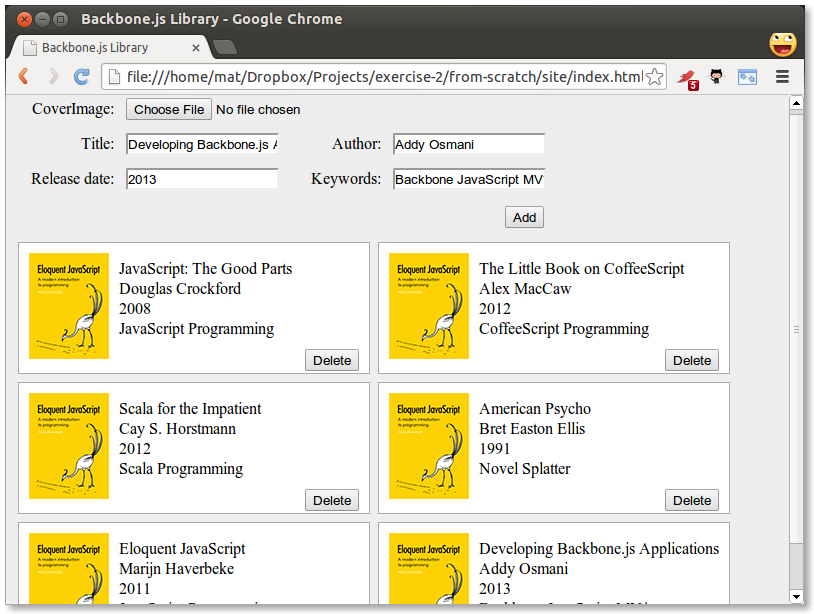
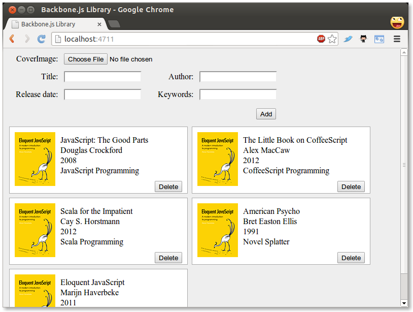
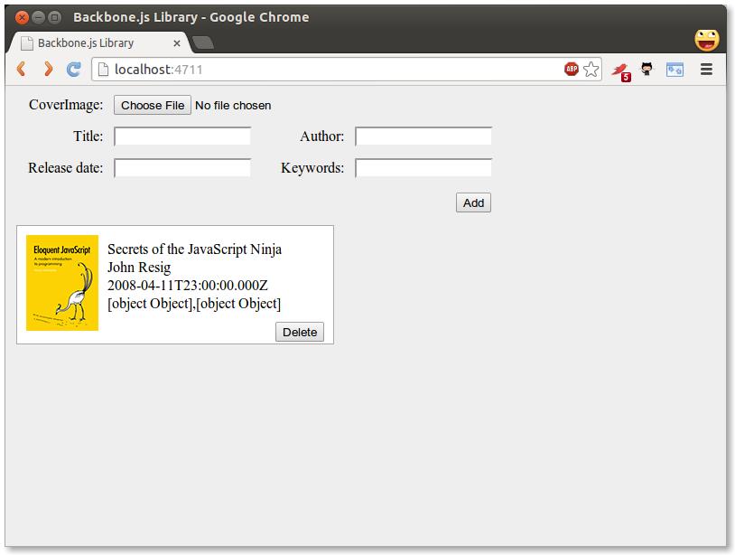
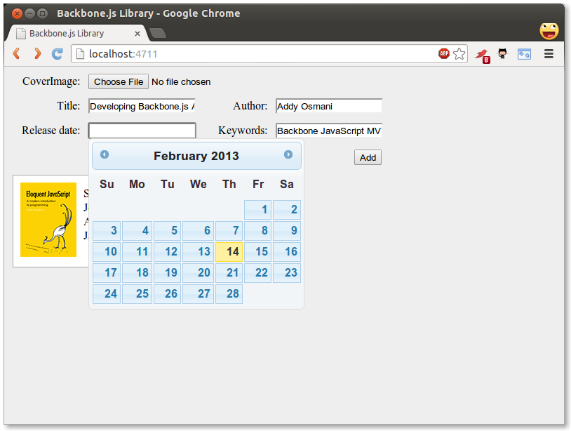
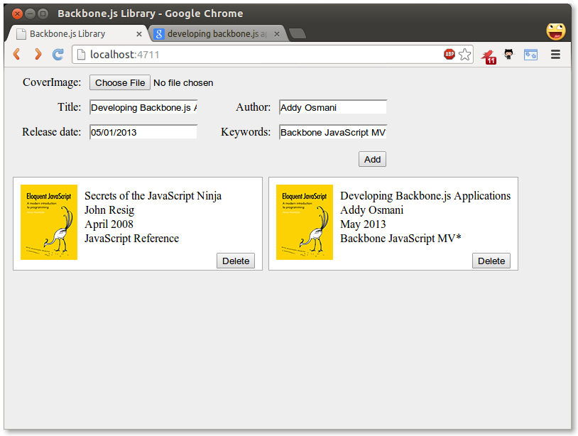
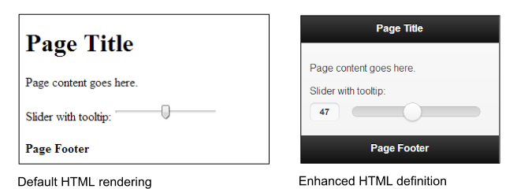
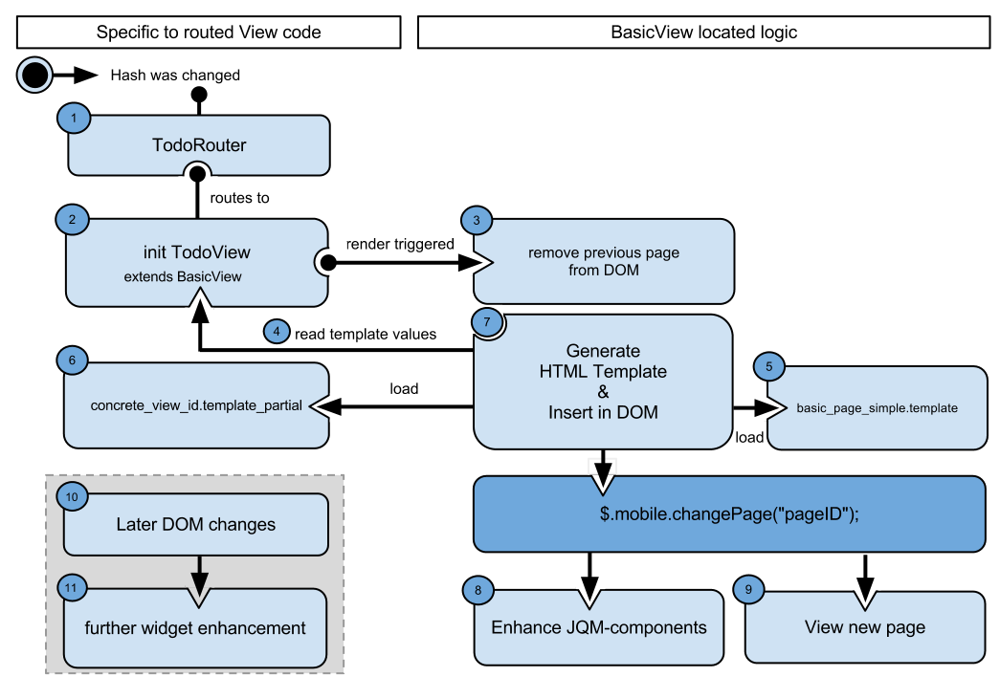
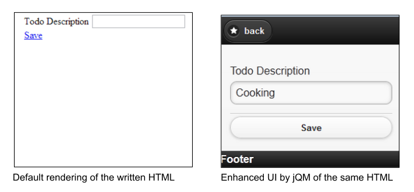
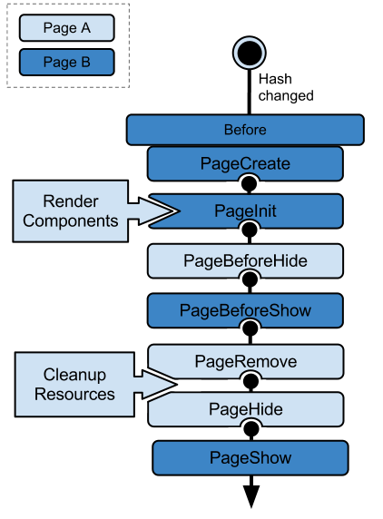

Available free for open-source reading below or for purchase via the O'Reilly store. Pull requests and comments always welcome.
Not so long ago, “data-rich web application” was an oxymoron. Today, these applications are everywhere and you need to know how to build them.
Traditionally, web applications left the heavy-lifting of data to servers that pushed HTML to the browser in complete page loads. The use of client-side JavaScript was limited to improving the user experience. Now this relationship has been inverted - client applications pull raw data from the server and render it into the browser when and where it is needed.
Think of the Ajax shopping cart which doesn’t require a refresh on the page when adding an item to your basket. Initially, jQuery became the go-to library for this paradigm. Its nature was to make Ajax requests then update text on the page and so on. However, this pattern with jQuery revealed that we have implicit model data on the client side. With the server no longer being the only place that knows about our item count, it was a hint that there was a natural tension and pull of this evolution.
The rise of arbitrary code on the client-side which can talk to the server however it sees fit has meant an increase in client-side complexity. Good architecture on the client has gone from an afterthought to essential - you can’t just hack together some jQuery code and expect it to scale as your application grows. Most likely, you would end up with a nightmarish tangle of UI callbacks entwined with business logic, destined to be discarded by the poor soul who inherits your code.
Thankfully, there are a growing number of JavaScript libraries that can help improve the structure and maintainability of your code, making it easier to build ambitious interfaces without a great deal of effort. Backbone.js has quickly become one of the most popular open-source solutions to these issues and in this book we will take you through an in-depth walkthrough of it.
Begin with the fundamentals, work your way through the exercises, and learn how to build an application that is both cleanly organized and maintainable. If you are a developer looking to write code that can be more easily read, structured, and extended - this guide can help.
Improving developer education is important to me, which is why this book is released under a Creative Commons Attribution-NonCommercial-ShareAlike 3.0 Unported license. This means you can purchase or grab a copy of the book for free or help to further improve it. Corrections to existing material are always welcome and I hope that together we can provide the community with an up-to-date resource that is of help.
My extended thanks go out to Jeremy Ashkenas and DocumentCloud for creating Backbone.js and these members of the community for their assistance making this project far better than I could have imagined.
This book is targeted at novice to intermediate developers wishing to learn how to better structure their client-side code. An understanding of JavaScript fundamentals is required to get the most out of it, however we have tried to provide a basic description of these concepts where possible.
I am indebted to the fantastic work done by the technical reviewers who helped review and improve this book. Their knowledge, energy, and passion have helped shape it into a better learning resource and they continue to serve as a source of inspiration. Thanks go out to:
I would also like to thank my loving family for their patience and support while I worked on this book, as well as my brilliant editor Mary Treseler.
None of this work would have been possible without the time and effort invested by the other developers and authors in the community who helped contribute to it. I would like to extend my thanks to:
as well as our other excellent contributors that made this project possible.
Developing Backbone.js Applications targets Backbone.js 1.1.x (and Underscore 1.6.x) and will actively attempt to stay up to date with more recent versions of these libraries. Where possible, if you find using a newer version of Backbone breaks an example, please consult the official guide to upgrading as it contains instructions for how to work around breaking changes. StackOverflow also contains many excellent examples of how other users are handling updating their code.
I assume your level of knowledge about JavaScript goes beyond the basics and as such certain topics such as object literals are skipped. If you need to learn more about the language, I am happy to suggest:
Frank Lloyd Wright once said “You can’t make an architect. You can however open the doors and windows toward the light as you see it.” In this book, I hope to shed some light on how to improve the structure of your web applications, opening doors to what will hopefully be more maintainable, readable applications in your future.
The goal of all architecture is to build something well; in our case, to craft code that is enduring and delights both ourselves and the developers who will maintain our code long after we are gone. We all want our architecture to be simple, yet beautiful.
While modern web development has evolved significantly with frameworks like React, Vue, and Angular becoming popular choices for new projects, understanding Backbone.js remains valuable as it teaches fundamental concepts about application architecture and state management that are still relevant today.
The Model-View-Controller (MVC) pattern, while evolved in modern frameworks, remains an important architectural concept. Today’s frameworks often implement variations of this pattern:
Modern frameworks have evolved these concepts: - React uses a component-based architecture with state management - Vue combines template-based views with reactive data models - Angular implements a more traditional MVC-like pattern with additional features
Backbone.js implements its own interpretation of MVC, which we’ll explore in detail.
Backbone.js (current version 1.5.0) is a lightweight JavaScript library that adds structure to client-side code. While newer frameworks may be more popular for new projects, Backbone.js offers several advantages:
Backbone.js is particularly valuable for: * Understanding fundamental concepts of structured JavaScript applications * Maintaining or upgrading legacy applications * Building lightweight applications where minimal framework overhead is desired * Learning about event-driven architecture and data binding
Today’s web applications often follow these architectural principles:
Backbone.js influenced many of these modern practices, particularly in areas of: - Event-driven architecture - Model-View separation - RESTful API integration - Client-side routing
While new projects might benefit from modern frameworks, Backbone.js remains relevant in several scenarios:
This book will: 1. Teach fundamental concepts of structured JavaScript applications 2. Show how to build applications using Backbone.js 3. Demonstrate modern JavaScript practices within Backbone.js 4. Explain how concepts from Backbone.js influence modern frameworks
The chapters will cover:
Chapter 2, Fundamentals, explores MVC pattern history and modern implementations.
Chapter 3, Backbone Basics, covers core Backbone.js features with modern JavaScript syntax.
Chapter 4, Exercise 1: Todos, builds a Todo application using current best practices.
Chapter 5, Exercise 2: Book Library, creates a RESTful application with modern API integration.
Chapter 6, Backbone Extensions, explores useful extensions and modern alternatives.
Chapter 7, Common Problems and Solutions, addresses current development challenges.
Chapter 8, Modular Development, covers modern module systems and build tools.
Chapter 9, Exercise 3: Modular Todo App, rebuilds the Todo app using modern tooling.
Chapter 10, Pagination, implements modern data handling patterns.
Chapter 11, Build Tools, explores current build systems and deployment.
Chapter 12, Mobile Applications, covers responsive design and mobile considerations.
Chapter 13-15, Testing, covers modern testing practices with Jasmine, QUnit, and SinonJS.
Chapter 16, Resources, provides updated learning resources.
Chapter 17, Conclusions, reflects on Backbone.js in modern web development.
Chapter 18, Appendix, includes additional patterns and architectural considerations.
Design patterns remain fundamental to modern web development, helping us create maintainable and scalable applications. While the JavaScript ecosystem has evolved significantly, understanding these patterns is crucial as they form the foundation of many modern frameworks and libraries.
The Model-View-Controller (MVC) pattern, originally designed by Trygve Reenskaug in 1979, has evolved significantly in the web development context. Today, we see various interpretations and adaptations of MVC across different frameworks:
Classical MVC was designed for desktop applications with a clear separation between: * Models (data and business logic) * Views (user interface) * Controllers (user input handling)
Modern web frameworks have adapted these concepts to better suit web applications:
// Classical MVC-style code
const UserModel = {
data: { name: '', email: '' },
validate() { /* ... */ }
};
const UserView = {
render() { /* ... */ },
update() { /* ... */ }
};
const UserController = {
handleInput() { /* ... */ },
updateModel() { /* ... */ }
};
// Modern Backbone.js approach
const User = Backbone.Model.extend({
defaults: {
name: '',
email: ''
},
validate(attrs) {
if (!attrs.email) {
return "Email is required";
}
}
});
const UserView = Backbone.View.extend({
template: _.template($('#user-template').html()),
events: {
'input .email': 'updateEmail'
},
render() {
this.$el.html(this.template(this.model.toJSON()));
return this;
},
updateEmail(e) {
this.model.set('email', e.target.value);
}
});Today’s web applications often need to handle:
// Backbone's event-driven state management
const TodoApp = Backbone.Model.extend({
defaults: {
todos: [],
filter: 'all'
}
});
const app = new TodoApp();
app.on('change:filter', (model, value) => {
// Update UI based on filter
});// Modern async with Backbone
const Tasks = Backbone.Collection.extend({
url: '/api/tasks',
async fetchActive() {
try {
await this.fetch({
data: { status: 'active' }
});
} catch (error) {
console.error('Failed to fetch tasks:', error);
}
}
});const LiveFeed = Backbone.View.extend({
initialize() {
this.websocket = new WebSocket('ws://api.example.com/feed');
this.websocket.onmessage = this.handleUpdate.bind(this);
},
handleUpdate(event) {
const data = JSON.parse(event.data);
this.model.set(data);
}
});Modern single-page applications (SPAs) require careful consideration of:
const AppRouter = Backbone.Router.extend({
routes: {
'': 'home',
'users/:id': 'showUser',
'*notFound': 'handle404'
},
async showUser(id) {
try {
const user = await new User({ id }).fetch();
new UserView({ model: user }).render();
} catch (error) {
this.handle404();
}
}
});const AppState = Backbone.Model.extend({
localStorage: new Backbone.LocalStorage('app-state'),
defaults: {
theme: 'light',
language: 'en',
lastVisited: null
}
});const SyncedModel = Backbone.Model.extend({
sync: async function(method, model, options) {
// Custom sync logic
const result = await Backbone.sync.call(this, method, model, options);
// Post-sync operations
return result;
}
});When using Backbone.js in modern applications:
// Use classes instead of Backbone.Model.extend
class User extends Backbone.Model {
get fullName() {
return `${this.get('firstName')} ${this.get('lastName')}`;
}
async save() {
try {
await super.save();
this.trigger('savedSuccessfully');
} catch (error) {
this.trigger('saveError', error);
}
}
}// Using JSDoc for better IDE support
/**
* @typedef {Object} UserAttributes
* @property {string} firstName
* @property {string} lastName
* @property {string} email
*/
/**
* @extends {Backbone.Model<UserAttributes>}
*/
class TypedUser extends Backbone.Model {
defaults() {
return {
firstName: '',
lastName: '',
email: ''
};
}
}// webpack.config.js
module.exports = {
entry: './src/app.js',
output: {
filename: 'bundle.js'
},
module: {
rules: [
{
test: /\.js$/,
use: 'babel-loader'
}
]
}
};While modern frameworks may have different approaches to structuring applications, the fundamental principles of MVC remain relevant:
Backbone.js implements these principles in a lightweight, flexible way that can still be valuable in modern web development, especially when:
Understanding these fundamentals helps developers make better architectural decisions, regardless of the framework they choose to use.
In this section, you’ll learn the essentials of Backbone’s models, views, collections, events, and routers. This isn’t by any means a replacement for the official documentation, but it will help you understand many of the core concepts behind Backbone before you start building applications using it.
Before we dive into more code examples, let’s define some boilerplate markup you can use to specify the dependencies Backbone requires. This boilerplate can be reused in many ways with little to no alteration and will allow you to run code from examples with ease.
You can paste the following into your text editor of choice, replacing the commented line between the script tags with the JavaScript from any given example:
<!DOCTYPE HTML>
<html>
<head>
<meta charset="UTF-8">
<title>Title</title>
</head>
<body>
<script src="https://ajax.googleapis.com/ajax/libs/jquery/1.9.1/jquery.min.js"></script>
<script src="http://underscorejs.org/underscore-min.js"></script>
<script src="http://backbonejs.org/backbone-min.js"></script>
<script>
// Your code goes here
</script>
</body>
</html>You can then save and run the file in your browser of choice, such as Chrome or Firefox. Alternatively, if you prefer working with an online code editor, jsFiddle and jsBin versions of this boilerplate are also available.
Most examples can also be run directly from within the console in your browser’s developer tools, assuming you’ve loaded the boilerplate HTML page so that Backbone and its dependencies are available for use.
For Chrome, you can open up the DevTools via the Chrome menu in the top right hand corner: select “Tools > Developer Tools” or alternatively use the Control + Shift + I shortcut on Windows/Linux or Command + Option + I on Mac.

Next, switch to the Console tab, from where you can enter in and run any piece of JavaScript code by hitting the return key. You can also use the Console as a multi-line editor using the Shift + Enter shortcut on Windows/Linux, or Ctrl + Enter shortcut on Mac to move from the end of one line to the start of another.
Backbone models contain data for an application as well as the logic around this data. For example, we can use a model to represent the concept of a todo item including its attributes like title (todo content) and completed (current state of the todo).
Models can be created by extending Backbone.Model as
follows:
var Todo = Backbone.Model.extend({});
// We can then create our own concrete instance of a (Todo) model
// with no values at all:
var todo1 = new Todo();
// Following logs: {}
console.log(JSON.stringify(todo1));
// or with some arbitrary data:
var todo2 = new Todo({
title: 'Check the attributes of both model instances in the console.',
completed: true
});
// Following logs: {"title":"Check the attributes of both model instances in the console.","completed":true}
console.log(JSON.stringify(todo2));The initialize() method is called when a new instance of
a model is created. Its use is optional; however you’ll see why it’s
good practice to use it below.
var Todo = Backbone.Model.extend({
initialize: function(){
console.log('This model has been initialized.');
}
});
var myTodo = new Todo();
// Logs: This model has been initialized.Default values
There are times when you want your model to have a set of default
values (e.g., in a scenario where a complete set of data isn’t provided
by the user). This can be set using a property called
defaults in your model.
var Todo = Backbone.Model.extend({
// Default todo attribute values
defaults: {
title: '',
completed: false
}
});
// Now we can create our concrete instance of the model
// with default values as follows:
var todo1 = new Todo();
// Following logs: {"title":"","completed":false}
console.log(JSON.stringify(todo1));
// Or we could instantiate it with some of the attributes (e.g., with custom title):
var todo2 = new Todo({
title: 'Check attributes of the logged models in the console.'
});
// Following logs: {"title":"Check attributes of the logged models in the console.","completed":false}
console.log(JSON.stringify(todo2));
// Or override all of the default attributes:
var todo3 = new Todo({
title: 'This todo is done, so take no action on this one.',
completed: true
});
// Following logs: {"title":"This todo is done, so take no action on this one.","completed":true}
console.log(JSON.stringify(todo3));Model.get()
Model.get() provides easy access to a model’s
attributes.
var Todo = Backbone.Model.extend({
// Default todo attribute values
defaults: {
title: '',
completed: false
}
});
var todo1 = new Todo();
console.log(todo1.get('title')); // empty string
console.log(todo1.get('completed')); // false
var todo2 = new Todo({
title: "Retrieved with model's get() method.",
completed: true
});
console.log(todo2.get('title')); // Retrieved with model's get() method.
console.log(todo2.get('completed')); // trueIf you need to read or clone all of a model’s data attributes, use
its toJSON() method. This method returns a copy of the
attributes as an object (not a JSON string despite its name). (When
JSON.stringify() is passed an object with a
toJSON() method, it stringifies the return value of
toJSON() instead of the original object. The examples in
the previous section took advantage of this feature when they called
JSON.stringify() to log model instances.)
var Todo = Backbone.Model.extend({
// Default todo attribute values
defaults: {
title: '',
completed: false
}
});
var todo1 = new Todo();
var todo1Attributes = todo1.toJSON();
// Following logs: {"title":"","completed":false}
console.log(todo1Attributes);
var todo2 = new Todo({
title: "Try these examples and check results in console.",
completed: true
});
// logs: {"title":"Try these examples and check results in console.","completed":true}
console.log(todo2.toJSON());Model.set()
Model.set() sets a hash containing one or more
attributes on the model. When any of these attributes alter the state of
the model, a “change” event is triggered on it. Change events for each
attribute are also triggered and can be bound to
(e.g. change:name, change:age).
var Todo = Backbone.Model.extend({
// Default todo attribute values
defaults: {
title: '',
completed: false
}
});
// Setting the value of attributes via instantiation
var myTodo = new Todo({
title: "Set through instantiation."
});
console.log('Todo title: ' + myTodo.get('title')); // Todo title: Set through instantiation.
console.log('Completed: ' + myTodo.get('completed')); // Completed: false
// Set single attribute value at a time through Model.set():
myTodo.set("title", "Title attribute set through Model.set().");
console.log('Todo title: ' + myTodo.get('title')); // Todo title: Title attribute set through Model.set().
console.log('Completed: ' + myTodo.get('completed')); // Completed: false
// Set map of attributes through Model.set():
myTodo.set({
title: "Both attributes set through Model.set().",
completed: true
});
console.log('Todo title: ' + myTodo.get('title')); // Todo title: Both attributes set through Model.set().
console.log('Completed: ' + myTodo.get('completed')); // Completed: trueDirect access
Models expose an .attributes attribute which represents
an internal hash containing the state of that model. This is generally
in the form of a JSON object similar to the model data you might find on
the server but can take other forms.
Setting values through the .attributes attribute on a
model bypasses triggers bound to the model.
Passing {silent:true} on set doesn’t delay individual
"change:attr" events. Instead they are silenced
entirely:
var Person = new Backbone.Model();
Person.on("change:name", function() { console.log('Name changed'); });
Person.set({name: 'Andrew'});
// log entry: Name changed
Person.set({name: 'Jeremy'}, {silent: true});
// no log entry
console.log(Person.hasChanged("name"));
// true: change was recorded
console.log(Person.hasChanged(null));
// true: something (anything) has changedRemember where possible it is best practice to use
Model.set(), or direct instantiation as explained
earlier.
If you want to receive a notification when a Backbone model changes
you can bind a listener to the model for its change event. A convenient
place to add listeners is in the initialize() function as
shown below:
var Todo = Backbone.Model.extend({
// Default todo attribute values
defaults: {
title: '',
completed: false
},
initialize: function(){
console.log('This model has been initialized.');
this.on('change', function(){
console.log('- Values for this model have changed.');
});
}
});
var myTodo = new Todo();
myTodo.set('title', 'The listener is triggered whenever an attribute value changes.');
console.log('Title has changed: ' + myTodo.get('title'));
myTodo.set('completed', true);
console.log('Completed has changed: ' + myTodo.get('completed'));
myTodo.set({
title: 'Changing more than one attribute at the same time only triggers the listener once.',
completed: true
});
// Above logs:
// This model has been initialized.
// - Values for this model have changed.
// Title has changed: The listener is triggered whenever an attribute value changes.
// - Values for this model have changed.
// Completed has changed: true
// - Values for this model have changed.You can also listen for changes to individual attributes in a Backbone model. In the following example, we log a message whenever a specific attribute (the title of our Todo model) is altered.
var Todo = Backbone.Model.extend({
// Default todo attribute values
defaults: {
title: '',
completed: false
},
initialize: function(){
console.log('This model has been initialized.');
this.on('change:title', function(){
console.log('Title value for this model has changed.');
});
},
setTitle: function(newTitle){
this.set({ title: newTitle });
}
});
var myTodo = new Todo();
// Both of the following changes trigger the listener:
myTodo.set('title', 'Check what\'s logged.');
myTodo.setTitle('Go fishing on Sunday.');
// But, this change type is not observed, so no listener is triggered:
myTodo.set('completed', true);
console.log('Todo set as completed: ' + myTodo.get('completed'));
// Above logs:
// This model has been initialized.
// Title value for this model has changed.
// Title value for this model has changed.
// Todo set as completed: trueBackbone supports model validation through
model.validate(), which allows checking the attribute
values for a model prior to setting them. By default, validation occurs
when the model is persisted using the save() method or when
set() is called if {validate:true} is passed
as an argument.
var Person = new Backbone.Model({name: 'Jeremy'});
// Validate the model name
Person.validate = function(attrs) {
if (!attrs.name) {
return 'I need your name';
}
};
// Change the name
Person.set({name: 'Samuel'});
console.log(Person.get('name'));
// 'Samuel'
// Remove the name attribute, force validation
Person.unset('name', {validate: true});
// falseAbove, we also use the unset() method, which removes an
attribute by deleting it from the internal model attributes hash.
Validation functions can be as simple or complex as necessary. If the
attributes provided are valid, nothing should be returned from
.validate(). If they are invalid, an error value should be
returned instead.
Should an error be returned:
invalid event will be triggered, setting the
validationError property on the model with the value which
is returned by this method..save() will not continue and the attributes of the
model will not be modified on the server.A more complete validation example can be seen below:
var Todo = Backbone.Model.extend({
defaults: {
completed: false
},
validate: function(attributes){
if(attributes.title === undefined){
return "Remember to set a title for your todo.";
}
},
initialize: function(){
console.log('This model has been initialized.');
this.on("invalid", function(model, error){
console.log(error);
});
}
});
var myTodo = new Todo();
myTodo.set('completed', true, {validate: true}); // logs: Remember to set a title for your todo.
console.log('completed: ' + myTodo.get('completed')); // completed: falseNote: the attributes object passed to
the validate function represents what the attributes would
be after completing the current set() or
save(). This object is distinct from the current attributes
of the model and from the parameters passed to the operation. Since it
is created by shallow copy, it is not possible to change any Number,
String, or Boolean attribute of the input within the function, but it
is possible to change attributes in nested objects.
An example of this (by @fivetanley) is available here.
Note also, that validation on initialization is possible but of limited use, as the object being constructed is internally marked invalid but nevertheless passed back to the caller (continuing the above example):
var emptyTodo = new Todo(null, {validate: true});
console.log(emptyTodo.validationError);Views in Backbone don’t contain the HTML markup for your application;
they contain the logic behind the presentation of the model’s data to
the user. This is usually achieved using JavaScript templating (e.g.,
Underscore Microtemplates, Mustache, jQuery-tmpl, etc.). A view’s
render() method can be bound to a model’s
change() event, enabling the view to instantly reflect
model changes without requiring a full page refresh.
Creating a new view is relatively straightforward and similar to
creating new models. To create a new View, simply extend
Backbone.View. We introduced the sample TodoView below in
the previous chapter; now let’s take a closer look at how it works:
var TodoView = Backbone.View.extend({
tagName: 'li',
// Cache the template function for a single item.
todoTpl: _.template( "An example template" ),
events: {
'dblclick label': 'edit',
'keypress .edit': 'updateOnEnter',
'blur .edit': 'close'
},
initialize: function (options) {
// In Backbone 1.1.0, if you want to access passed options in
// your view, you will need to save them as follows:
this.options = options || {};
},
// Re-render the title of the todo item.
render: function() {
this.$el.html( this.todoTpl( this.model.attributes ) );
this.input = this.$('.edit');
return this;
},
edit: function() {
// executed when todo label is double clicked
},
close: function() {
// executed when todo loses focus
},
updateOnEnter: function( e ) {
// executed on each keypress when in todo edit mode,
// but we'll wait for enter to get in action
}
});
var todoView = new TodoView();
// log reference to a DOM element that corresponds to the view instance
console.log(todoView.el); // logs <li></li>el?The central property of a view is el (the value logged
in the last statement of the example). What is el and how
is it defined?
el is basically a reference to a DOM element and all
views must have one. Views can use el to compose their
element’s content and then insert it into the DOM all at once, which
makes for faster rendering because the browser performs the minimum
required number of reflows and repaints.
There are two ways to associate a DOM element with a view: a new element can be created for the view and subsequently added to the DOM or a reference can be made to an element which already exists in the page.
If you want to create a new element for your view, set any
combination of the following properties on the view:
tagName, id, and className. A new
element will be created for you by the library and a reference to it
will be available at the el property. If nothing is
specified tagName defaults to div.
In the example above, tagName is set to ‘li’, resulting
in creation of an li element. The following example creates a ul element
with id and class attributes:
var TodosView = Backbone.View.extend({
tagName: 'ul', // required, but defaults to 'div' if not set
className: 'container', // optional, you can assign multiple classes to
// this property like so: 'container homepage'
id: 'todos' // optional
});
var todosView = new TodosView();
console.log(todosView.el); // logs <ul id="todos" class="container"></ul>The above code creates the DOM element below but doesn’t append it to the DOM.
<ul id="todos" class="container"></ul>If the element already exists in the page, you can set
el as a CSS selector that matches the element.
el: '#footer'Alternatively, you can set el to an existing element
when creating the view:
var todosView = new TodosView({el: $('#footer')});Note: When declaring a View, options, el,
tagName, id and className may be
defined as functions, if you want their values to be determined at
runtime.
$el and $()
View logic often needs to invoke jQuery or Zepto functions on the
el element and elements nested within it. Backbone makes it
easy to do so by defining the $el property and
$() function. The view.$el property is
equivalent to $(view.el) and view.$(selector)
is equivalent to $(view.el).find(selector). In our TodoView
example’s render method, we see this.$el used to set the
HTML of the element and this.$() used to find subelements
of class ‘edit’.
setElement
If you need to apply an existing Backbone view to a different DOM
element setElement can be used for this purpose. Overriding
this.el needs to both change the DOM reference and re-bind events to the
new element (and unbind from the old).
setElement will create a cached $el
reference for you, moving the delegated events for a view from the old
element to the new one.
// We create two DOM elements representing buttons
// which could easily be containers or something else
var button1 = $('<button></button>');
var button2 = $('<button></button>');
// Define a new view
var View = Backbone.View.extend({
events: {
click: function(e) {
console.log(view.el === e.target);
}
}
});
// Create a new instance of the view, applying it
// to button1
var view = new View({el: button1});
// Apply the view to button2 using setElement
view.setElement(button2);
button1.trigger('click');
button2.trigger('click'); // returns trueThe “el” property represents the markup portion of the view that will be rendered; to get the view to actually render to the page, you need to add it as a new element or append it to an existing element.
// We can also provide raw markup to setElement
// as follows (just to demonstrate it can be done):
var view = new Backbone.View;
view.setElement('<p><a><b>test</b></a></p>');
console.log(view.$('a b').html()); // outputs "test"Understanding render()
render() is an optional function that defines the logic
for rendering a template. We’ll use Underscore’s micro-templating in
these examples, but remember you can use other templating frameworks if
you prefer. Our example will reference the following HTML markup:
<!doctype html>
<html lang="en">
<head>
<meta charset="utf-8">
<title></title>
<meta name="description" content="">
</head>
<body>
<div id="todo">
</div>
<script type="text/template" id="item-template">
<div>
<input id="todo_complete" type="checkbox" <%= completed ? 'checked="checked"' : '' %>>
<%= title %>
</div>
</script>
<script src="jquery-min.js"></script>
<script src="underscore-min.js"></script>
<script src="backbone-min.js"></script>
<script src="example.js"></script>
</body>
</html>The _.template method in Underscore compiles JavaScript
templates into functions which can be evaluated for rendering. In the
TodoView, I’m passing the markup from the template with id
item-template to _.template() to be compiled
and stored in the todoTpl property when the view is created.
The render() method uses this template by passing it the
toJSON() encoding of the attributes of the model associated
with the view. The template returns its markup after using the model’s
title and completed flag to evaluate the expressions containing them. I
then set this markup as the HTML content of the el DOM
element using the $el property.
Presto! This populates the template, giving you a data-complete set of markup in just a few short lines of code.
A common Backbone convention is to return this at the
end of render(). This is useful for a number of reasons,
including:
Let’s try to implement the latter of these. The render
method of a simple ListView which doesn’t use an ItemView for each item
could be written:
var ListView = Backbone.View.extend({
// Compile a template for this view. In this case '...'
// is a placeholder for a template such as
// $("#list_template").html()
template: _.template(…),
render: function() {
this.$el.html(this.template(this.model.attributes));
return this;
}
});Simple enough. Let’s now assume a decision is made to construct the items using an ItemView to provide enhanced behaviour to our list. The ItemView could be written:
var ItemView = Backbone.View.extend({
events: {},
render: function(){
this.$el.html(this.template(this.model.attributes));
return this;
}
});Note the usage of return this; at the end of
render. This common pattern enables us to reuse the view as
a sub-view. We can also use it to pre-render the view prior to
rendering. Using this requires that we make a change to our ListView’s
render method as follows:
var ListView = Backbone.View.extend({
render: function(){
// Assume our model exposes the items we will
// display in our list
var items = this.model.get('items');
// Loop through each of our items using the Underscore
// _.each iterator
_.each(items, function(item){
// Create a new instance of the ItemView, passing
// it a specific model item
var itemView = new ItemView({ model: item });
// The itemView's DOM element is appended after it
// has been rendered. Here, the 'return this' is helpful
// as the itemView renders its model. Later, we ask for
// its output ("el")
this.$el.append( itemView.render().el );
}, this);
}
});The events hash
The Backbone events hash allows us to attach event
listeners to either el-relative custom selectors, or
directly to el if no selector is provided. An event takes
the form of a key-value pair
'eventName selector': 'callbackFunction' and a number of
DOM event-types are supported, including click,
submit, mouseover, dblclick and
more.
// A sample view
var TodoView = Backbone.View.extend({
tagName: 'li',
// with an events hash containing DOM events
// specific to an item:
events: {
'click .toggle': 'toggleCompleted',
'dblclick label': 'edit',
'keypress .edit': 'updateOnEnter',
'click .destroy': 'clear',
'blur .edit': 'close'
},What isn’t instantly obvious is that while Backbone uses jQuery’s
.delegate() underneath, it goes further by extending it so
that this always refers to the current view object within
callback functions. The only thing to really keep in mind is that any
string callback supplied to the events attribute must have a
corresponding function with the same name within the scope of your
view.
The declarative, delegated jQuery events means that you don’t have to worry about whether a particular element has been rendered to the DOM yet or not. Usually with jQuery you have to worry about “presence or absence in the DOM” all the time when binding events.
In our TodoView example, the edit callback is invoked when the user
double-clicks a label element within the el element,
updateOnEnter is called for each keypress in an element with class
‘edit’, and close executes when an element with class ‘edit’ loses
focus. Each of these callback functions can use this to
refer to the TodoView object.
Note that you can also bind methods yourself using
_.bind(this.viewEvent, this), which is effectively what the
value in each event’s key-value pair is doing. Below we use
_.bind to re-render our view when a model changes.
var TodoView = Backbone.View.extend({
initialize: function() {
this.model.bind('change', _.bind(this.render, this));
}
});_.bind only works on one method at a time, but
effectively binds a function to an object so that anytime the function
is called the value of this will be the object.
_.bind also supports passing in arguments to the function
in order to fill them in advance - a technique known as partial
application.
Collections are sets of Models and are created by extending
Backbone.Collection.
Normally, when creating a collection you’ll also want to define a property specifying the type of model that your collection will contain, along with any instance properties required.
In the following example, we create a TodoCollection that will contain our Todo models:
var Todo = Backbone.Model.extend({
defaults: {
title: '',
completed: false
}
});
var TodosCollection = Backbone.Collection.extend({
model: Todo
});
var myTodo = new Todo({title:'Read the whole book', id: 2});
// pass array of models on collection instantiation
var todos = new TodosCollection([myTodo]);
console.log("Collection size: " + todos.length); // Collection size: 1The preceding example populated the collection using an array of
models when it was instantiated. After a collection has been created,
models can be added and removed using the add() and
remove() methods:
var Todo = Backbone.Model.extend({
defaults: {
title: '',
completed: false
}
});
var TodosCollection = Backbone.Collection.extend({
model: Todo
});
var a = new Todo({ title: 'Go to Jamaica.'}),
b = new Todo({ title: 'Go to China.'}),
c = new Todo({ title: 'Go to Disneyland.'});
var todos = new TodosCollection([a,b]);
console.log("Collection size: " + todos.length);
// Logs: Collection size: 2
todos.add(c);
console.log("Collection size: " + todos.length);
// Logs: Collection size: 3
todos.remove([a,b]);
console.log("Collection size: " + todos.length);
// Logs: Collection size: 1
todos.remove(c);
console.log("Collection size: " + todos.length);
// Logs: Collection size: 0Note that add() and remove() accept both
individual models and lists of models.
Also note that when using add() on a collection, passing
{merge: true} causes duplicate models to have their
attributes merged in to the existing models, instead of being
ignored.
var items = new Backbone.Collection;
items.add([{ id : 1, name: "Dog" , age: 3}, { id : 2, name: "cat" , age: 2}]);
items.add([{ id : 1, name: "Bear" }], {merge: true });
items.add([{ id : 2, name: "lion" }]); // merge: false
console.log(JSON.stringify(items.toJSON()));
// [{"id":1,"name":"Bear","age":3},{"id":2,"name":"cat","age":2}]There are a few different ways to retrieve a model from a collection.
The most straight-forward is to use Collection.get() which
accepts a single id as follows:
var myTodo = new Todo({title:'Read the whole book', id: 2});
// pass array of models on collection instantiation
var todos = new TodosCollection([myTodo]);
var todo2 = todos.get(2);
// Models, as objects, are passed by reference
console.log(todo2 === myTodo); // trueIn client-server applications, collections contain models obtained
from the server. Anytime you’re exchanging data between the client and a
server, you will need a way to uniquely identify models. In Backbone,
this is done using the id, cid, and
idAttribute properties.
Each model in Backbone has an id, which is a unique
identifier that is either an integer or string (e.g., a UUID). Models
also have a cid (client id) which is automatically
generated by Backbone when the model is created. Either identifier can
be used to retrieve a model from a collection.
The main difference between them is that the cid is
generated by Backbone; it is helpful when you don’t have a true id -
this may be the case if your model has yet to be saved to the server or
you aren’t saving it to a database.
The idAttribute is the identifying attribute name of the
model returned from the server (i.e. the id in your
database). This tells Backbone which data field from the server should
be used to populate the id property (think of it as a
mapper). By default, it assumes id, but this can be
customized as needed. For instance, if your server sets a unique
attribute on your model named “userId” then you would set
idAttribute to “userId” in your model definition.
The value of a model’s idAttribute should be set by the server when the model is saved. After this point you shouldn’t need to set it manually, unless further control is required.
Internally, Backbone.Collection contains an array of
models enumerated by their id property, if the model
instances happen to have one. When collection.get(id) is
called, this array is checked for existence of the model instance with
the corresponding id.
// extends the previous example
var todoCid = todos.get(todo2.cid);
// As mentioned in previous example,
// models are passed by reference
console.log(todoCid === myTodo); // trueAs collections represent a group of items, we can listen for
add and remove events which occur when models
are added to or removed from a collection. Here’s an example:
var TodosCollection = new Backbone.Collection();
TodosCollection.on("add", function(todo) {
console.log("I should " + todo.get("title") + ". Have I done it before? " + (todo.get("completed") ? 'Yeah!': 'No.' ));
});
TodosCollection.add([
{ title: 'go to Jamaica', completed: false },
{ title: 'go to China', completed: false },
{ title: 'go to Disneyland', completed: true }
]);
// The above logs:
// I should go to Jamaica. Have I done it before? No.
// I should go to China. Have I done it before? No.
// I should go to Disneyland. Have I done it before? Yeah!In addition, we’re also able to bind to a change event
to listen for changes to any of the models in the collection.
var TodosCollection = new Backbone.Collection();
// log a message if a model in the collection changes
TodosCollection.on("change:title", function(model) {
console.log("Changed my mind! I should " + model.get('title'));
});
TodosCollection.add([
{ title: 'go to Jamaica.', completed: false, id: 3 },
]);
var myTodo = TodosCollection.get(3);
myTodo.set('title', 'go fishing');
// Logs: Changed my mind! I should go fishingjQuery-style event maps of the form
obj.on({click: action}) can also be used. These can be
clearer than needing three separate calls to .on and should
align better with the events hash used in Views:
var Todo = Backbone.Model.extend({
defaults: {
title: '',
completed: false
}
});
var myTodo = new Todo();
myTodo.set({title: 'Buy some cookies', completed: true});
myTodo.on({
'change:title' : titleChanged,
'change:completed' : stateChanged
});
function titleChanged(){
console.log('The title was changed!');
}
function stateChanged(){
console.log('The state was changed!');
}
myTodo.set({title: 'Get the groceries'});
// The title was changed! Backbone events also support a once() method, which ensures that a callback only fires one time when a notification arrives. It is similar to Node’s once, or jQuery’s one. This is particularly useful for when you want to say “the next time something happens, do this”.
// Define an object with two counters
var TodoCounter = { counterA: 0, counterB: 0 };
// Mix in Backbone Events
_.extend(TodoCounter, Backbone.Events);
// Increment counterA, triggering an event
var incrA = function(){
TodoCounter.counterA += 1;
// This triggering will not
// produce any effect on the counters
TodoCounter.trigger('event');
};
// Increment counterB
var incrB = function(){
TodoCounter.counterB += 1;
};
// Use once rather than having to explicitly unbind
// our event listener
TodoCounter.once('event', incrA);
TodoCounter.once('event', incrB);
// Trigger the event for the first time
TodoCounter.trigger('event');
// Check out output
console.log(TodoCounter.counterA === 1); // true
console.log(TodoCounter.counterB === 1); // truecounterA and counterB should only have been
incremented once.
Rather than adding or removing models individually, you might want to
update an entire collection at once. Collection.set() takes
an array of models and performs the necessary add, remove, and change
operations required to update the collection.
var TodosCollection = new Backbone.Collection();
TodosCollection.add([
{ id: 1, title: 'go to Jamaica.', completed: false },
{ id: 2, title: 'go to China.', completed: false },
{ id: 3, title: 'go to Disneyland.', completed: true }
]);
// we can listen for add/change/remove events
TodosCollection.on("add", function(model) {
console.log("Added " + model.get('title'));
});
TodosCollection.on("remove", function(model) {
console.log("Removed " + model.get('title'));
});
TodosCollection.on("change:completed", function(model) {
console.log("Completed " + model.get('title'));
});
TodosCollection.set([
{ id: 1, title: 'go to Jamaica.', completed: true },
{ id: 2, title: 'go to China.', completed: false },
{ id: 4, title: 'go to Disney World.', completed: false }
]);
// Above logs:
// Completed go to Jamaica.
// Removed go to Disneyland.
// Added go to Disney World.If you need to simply replace the entire content of the collection
then Collection.reset() can be used:
var TodosCollection = new Backbone.Collection();
// we can listen for reset events
TodosCollection.on("reset", function() {
console.log("Collection reset.");
});
TodosCollection.add([
{ title: 'go to Jamaica.', completed: false },
{ title: 'go to China.', completed: false },
{ title: 'go to Disneyland.', completed: true }
]);
console.log('Collection size: ' + TodosCollection.length); // Collection size: 3
TodosCollection.reset([
{ title: 'go to Cuba.', completed: false }
]);
// Above logs 'Collection reset.'
console.log('Collection size: ' + TodosCollection.length); // Collection size: 1Another useful tip is to use reset with no arguments to
clear out a collection completely. This is handy when dynamically
loading a new page of results where you want to blank out the current
page of results.
myCollection.reset();Note that using Collection.reset() doesn’t fire any
add or remove events. A reset
event is fired instead as shown in the previous example. The reason you
might want to use this is to perform super-optimized rendering in
extreme cases where individual events are too expensive.
Also note that listening to a reset event, the list
of previous models is available in options.previousModels,
for convenience.
var todo = new Backbone.Model();
var todos = new Backbone.Collection([todo])
.on('reset', function(todos, options) {
console.log(options.previousModels);
console.log([todo]);
console.log(options.previousModels[0] === todo); // true
});
todos.reset([]);The set() method available for Collections can also be
used for “smart” updating of sets of models. This method attempts to
perform smart updating of a collection using a specified list of models.
When a model in this list isn’t present in the collection, it is added.
If it’s present, its attributes will be merged. Models which are present
in the collection but not in the list are removed.
// Define a model of type 'Beatle' with a 'job' attribute
var Beatle = Backbone.Model.extend({
defaults: {
job: 'musician'
}
});
// Create models for each member of the Beatles
var john = new Beatle({ firstName: 'John', lastName: 'Lennon'});
var paul = new Beatle({ firstName: 'Paul', lastName: 'McCartney'});
var george = new Beatle({ firstName: 'George', lastName: 'Harrison'});
var ringo = new Beatle({ firstName: 'Ringo', lastName: 'Starr'});
// Create a collection using our models
var theBeatles = new Backbone.Collection([john, paul, george, ringo]);
// Create a separate model for Pete Best
var pete = new Beatle({ firstName: 'Pete', lastName: 'Best'});
// Update the collection
theBeatles.set([john, paul, george, pete]);
// Fires a `remove` event for 'Ringo', and an `add` event for 'Pete'.
// Updates any of John, Paul and Georges's attributes that may have
// changed over the years.Backbone takes full advantage of its hard dependency on Underscore by making many of its utilities directly available on collections:
forEach: iterate over collections
var todos = new Backbone.Collection();
todos.add([
{ title: 'go to Belgium.', completed: false },
{ title: 'go to China.', completed: false },
{ title: 'go to Austria.', completed: true }
]);
// iterate over models in the collection
todos.forEach(function(model){
console.log(model.get('title'));
});
// Above logs:
// go to Belgium.
// go to China.
// go to Austria.sortBy(): sort a collection on a specific
attribute
// sort collection
var sortedByAlphabet = todos.sortBy(function (todo) {
return todo.get("title").toLowerCase();
});
console.log("- Now sorted: ");
sortedByAlphabet.forEach(function(model){
console.log(model.get('title'));
});
// Above logs:
// - Now sorted:
// go to Austria.
// go to Belgium.
// go to China.map(): iterate through a collection, mapping
each value through a transformation function
var count = 1;
console.log(todos.map(function(model){
return count++ + ". " + model.get('title');
}));
// Above logs:
//1. go to Belgium.
//2. go to China.
//3. go to Austria.min()/max(): retrieve item with the
min or max value of an attribute
todos.max(function(model){
return model.id;
}).id;
todos.min(function(model){
return model.id;
}).id;pluck(): extract a specific
attribute
var captions = todos.pluck('caption');
// returns list of captionsfilter(): filter a collection
Filter by an array of model IDs
var Todos = Backbone.Collection.extend({
model: Todo,
filterById: function(ids){
return this.filter(
function(c) {
return _.contains(ids, c.id);
})
}
});indexOf(): return the index of a particular item
within a collection
var people = new Backbone.Collection;
people.comparator = function(a, b) {
return a.get('name') < b.get('name') ? -1 : 1;
};
var tom = new Backbone.Model({name: 'Tom'});
var rob = new Backbone.Model({name: 'Rob'});
var tim = new Backbone.Model({name: 'Tim'});
people.add(tom);
people.add(rob);
people.add(tim);
console.log(people.indexOf(rob) === 0); // true
console.log(people.indexOf(tim) === 1); // true
console.log(people.indexOf(tom) === 2); // trueany(): confirm if any of the values in a
collection pass an iterator truth test
todos.any(function(model){
return model.id === 100;
});
// or
todos.some(function(model){
return model.id === 100;
});size(): return the size of a
collection
todos.size();
// equivalent to
todos.length;isEmpty(): determine whether a collection is
empty
var isEmpty = todos.isEmpty();groupBy(): group a collection into groups of
like items
var todos = new Backbone.Collection();
todos.add([
{ title: 'go to Belgium.', completed: false },
{ title: 'go to China.', completed: false },
{ title: 'go to Austria.', completed: true }
]);
// create groups of completed and incomplete models
var byCompleted = todos.groupBy('completed');
var completed = new Backbone.Collection(byCompleted[true]);
console.log(completed.pluck('title'));
// logs: ["go to Austria."]In addition, several of the Underscore operations on objects are available as methods on Models.
pick(): extract a set of attributes from a
model
var Todo = Backbone.Model.extend({
defaults: {
title: '',
completed: false
}
});
var todo = new Todo({title: 'go to Austria.'});
console.log(todo.pick('title'));
// logs {title: "go to Austria"}omit(): extract all attributes from a model
except those listed
var todo = new Todo({title: 'go to Austria.'});
console.log(todo.omit('title'));
// logs {completed: false}keys() and values(): get lists of
attribute names and values
var todo = new Todo({title: 'go to Austria.'});
console.log(todo.keys());
// logs: ["title", "completed"]
console.log(todo.values());
//logs: ["go to Austria.", false]pairs(): get list of attributes as [key, value]
pairs
var todo = new Todo({title: 'go to Austria.'});
var pairs = todo.pairs();
console.log(pairs[0]);
// logs: ["title", "go to Austria."]
console.log(pairs[1]);
// logs: ["completed", false]invert(): create object in which the values are
keys and the attributes are values
var todo = new Todo({title: 'go to Austria.'});
console.log(todo.invert());
// logs: {'go to Austria.': 'title', 'false': 'completed'}The complete list of what Underscore can do can be found in its official documentation.
Speaking of utility methods, another bit of sugar in Backbone is its
support for Underscore’s chain() method. Chaining is a
common idiom in object-oriented languages; a chain is a sequence of
method calls on the same object that are performed in a single
statement. While Backbone makes Underscore’s array manipulation
operations available as methods of Collection objects, they cannot be
directly chained since they return arrays rather than the original
Collection.
Fortunately, the inclusion of Underscore’s chain()
method enables you to chain calls to these methods on Collections.
The chain() method returns an object that has all of the
Underscore array operations attached as methods which return that
object. The chain ends with a call to the value() method
which simply returns the resulting array value. In case you haven’t seen
it before, the chainable API looks like this:
var collection = new Backbone.Collection([
{ name: 'Tim', age: 5 },
{ name: 'Ida', age: 26 },
{ name: 'Rob', age: 55 }
]);
var filteredNames = collection.chain() // start chain, returns wrapper around collection's models
.filter(function(item) { return item.get('age') > 10; }) // returns wrapped array excluding Tim
.map(function(item) { return item.get('name'); }) // returns wrapped array containing remaining names
.value(); // terminates the chain and returns the resulting array
console.log(filteredNames); // logs: ['Ida', 'Rob']Some of the Backbone-specific methods do return this,
which means they can be chained as well:
var collection = new Backbone.Collection();
collection
.add({ name: 'John', age: 23 })
.add({ name: 'Harry', age: 33 })
.add({ name: 'Steve', age: 41 });
var names = collection.pluck('name');
console.log(names); // logs: ['John', 'Harry', 'Steve']Thus far, all of our example data has been created in the browser. For most single page applications, the models are derived from a data store residing on a server. This is an area in which Backbone dramatically simplifies the code you need to write to perform RESTful synchronization with a server through a simple API on its models and collections.
Fetching models from the server
Collections.fetch() retrieves a set of models from the
server in the form of a JSON array by sending an HTTP GET request to the
URL specified by the collection’s url property (which may
be a function). When this data is received, a set() will be
executed to update the collection.
var Todo = Backbone.Model.extend({
defaults: {
title: '',
completed: false
}
});
var TodosCollection = Backbone.Collection.extend({
model: Todo,
url: '/todos'
});
var todos = new TodosCollection();
todos.fetch(); // sends HTTP GET to /todosSaving models to the server
While Backbone can retrieve an entire collection of models from the
server at once, updates to models are performed individually using the
model’s save() method. When save() is called
on a model that was fetched from the server, it constructs a URL by
appending the model’s id to the collection’s URL and sends an HTTP PUT
to the server. If the model is a new instance that was created in the
browser (i.e. it doesn’t have an id) then an HTTP POST is sent to the
collection’s URL. Collections.create() can be used to
create a new model, add it to the collection, and send it to the server
in a single method call.
var Todo = Backbone.Model.extend({
defaults: {
title: '',
completed: false
}
});
var TodosCollection = Backbone.Collection.extend({
model: Todo,
url: '/todos'
});
var todos = new TodosCollection();
todos.fetch();
var todo2 = todos.get(2);
todo2.set('title', 'go fishing');
todo2.save(); // sends HTTP PUT to /todos/2
todos.create({title: 'Try out code samples'}); // sends HTTP POST to /todos and adds to collectionAs mentioned earlier, a model’s validate() method is
called automatically by save() and will trigger an
invalid event on the model if validation fails.
Deleting models from the server
A model can be removed from the containing collection and the server
by calling its destroy() method. Unlike
Collection.remove() which only removes a model from a
collection, Model.destroy() will also send an HTTP DELETE
to the collection’s URL.
var Todo = Backbone.Model.extend({
defaults: {
title: '',
completed: false
}
});
var TodosCollection = Backbone.Collection.extend({
model: Todo,
url: '/todos'
});
var todos = new TodosCollection();
todos.fetch();
var todo2 = todos.get(2);
todo2.destroy(); // sends HTTP DELETE to /todos/2 and removes from collectionCalling destroy on a Model will return
false if the model isNew:
var todo = new Backbone.Model();
console.log(todo.destroy());
// falseOptions
Each RESTful API method accepts a variety of options. Most importantly, all methods accept success and error callbacks which can be used to customize the handling of server responses.
Specifying the {patch: true} option to
Model.save() will cause it to use HTTP PATCH to send only
the changed attributes (i.e. partial updates) to the server instead of
the entire model;
i.e. model.save(attrs, {patch: true}):
// Save partial using PATCH
model.clear().set({id: 1, a: 1, b: 2, c: 3, d: 4});
model.save();
model.save({b: 2, d: 4}, {patch: true});
console.log(this.syncArgs.method);
// 'patch'Similarly, passing the {reset: true} option to
Collection.fetch() will result in the collection being
updated using reset() rather than set().
See the Backbone.js documentation for full descriptions of the supported options.
Events are a basic inversion of control. Instead of having one function call another by name, the second function is registered as a handler to be called when a specific event occurs.
The part of your application that has to know how to call the other part of your app has been inverted. This is the core thing that makes it possible for your business logic to not have to know about how your user interface works and is the most powerful thing about the Backbone Events system.
Mastering events is one of the quickest ways to become more productive with Backbone, so let’s take a closer look at Backbone’s event model.
Backbone.Events is mixed into the other Backbone
“classes”, including:
Note that Backbone.Events is mixed into the
Backbone object. Since Backbone is globally
visible, it can be used as a simple event bus:
Backbone.on('event', function() {console.log('Handled Backbone event');});
Backbone.trigger('event'); // logs: Handled Backbone eventBackbone.Events can give any object the ability to bind
and trigger custom events. We can mix this module into any object easily
and there isn’t a requirement for events to be declared before being
bound to a callback handler.
Example:
var ourObject = {};
// Mixin
_.extend(ourObject, Backbone.Events);
// Add a custom event
ourObject.on('dance', function(msg){
console.log('We triggered ' + msg);
});
// Trigger the custom event
ourObject.trigger('dance', 'our event');If you’re familiar with jQuery custom events or the concept of
Publish/Subscribe, Backbone.Events provides a system that
is very similar with on being analogous to
subscribe and trigger being similar to
publish.
on binds a callback function to an object, as we’ve done
with dance in the above example. The callback is invoked
whenever the event is triggered.
The official Backbone.js documentation recommends namespacing event names using colons if you end up using quite a few of these on your page. e.g.:
var ourObject = {};
// Mixin
_.extend(ourObject, Backbone.Events);
function dancing (msg) { console.log("We started " + msg); }
// Add namespaced custom events
ourObject.on("dance:tap", dancing);
ourObject.on("dance:break", dancing);
// Trigger the custom events
ourObject.trigger("dance:tap", "tap dancing. Yeah!");
ourObject.trigger("dance:break", "break dancing. Yeah!");
// This one triggers nothing as no listener listens for it
ourObject.trigger("dance", "break dancing. Yeah!");A special all event is made available in case you would
like notifications for every event that occurs on the object (e.g., if
you would like to screen events in a single location). The
all event can be used as follows:
var ourObject = {};
// Mixin
_.extend(ourObject, Backbone.Events);
function dancing (msg) { console.log("We started " + msg); }
ourObject.on("all", function(eventName){
console.log("The name of the event passed was " + eventName);
});
// This time each event will be caught with a catch 'all' event listener
ourObject.trigger("dance:tap", "tap dancing. Yeah!");
ourObject.trigger("dance:break", "break dancing. Yeah!");
ourObject.trigger("dance", "break dancing. Yeah!");off removes callback functions that were previously
bound to an object. Going back to our Publish/Subscribe comparison,
think of it as an unsubscribe for custom events.
To remove the dance event we previously bound to
ourObject, we would simply do:
var ourObject = {};
// Mixin
_.extend(ourObject, Backbone.Events);
function dancing (msg) { console.log("We " + msg); }
// Add namespaced custom events
ourObject.on("dance:tap", dancing);
ourObject.on("dance:break", dancing);
// Trigger the custom events. Each will be caught and acted upon.
ourObject.trigger("dance:tap", "started tap dancing. Yeah!");
ourObject.trigger("dance:break", "started break dancing. Yeah!");
// Removes event bound to the object
ourObject.off("dance:tap");
// Trigger the custom events again, but one is logged.
ourObject.trigger("dance:tap", "stopped tap dancing."); // won't be logged as it's not listened for
ourObject.trigger("dance:break", "break dancing. Yeah!");To remove all callbacks for the event we pass an event name (e.g.,
move) to the off() method on the object the
event is bound to. If we wish to remove a specific callback, we can pass
that callback as the second parameter:
var ourObject = {};
// Mixin
_.extend(ourObject, Backbone.Events);
function dancing (msg) { console.log("We are dancing. " + msg); }
function jumping (msg) { console.log("We are jumping. " + msg); }
// Add two listeners to the same event
ourObject.on("move", dancing);
ourObject.on("move", jumping);
// Trigger the events. Both listeners are called.
ourObject.trigger("move", "Yeah!");
// Removes specified listener
ourObject.off("move", dancing);
// Trigger the events again. One listener left.
ourObject.trigger("move", "Yeah, jump, jump!");Finally, as we have seen in our previous examples,
trigger triggers a callback for a specified event (or a
space-separated list of events). e.g.:
var ourObject = {};
// Mixin
_.extend(ourObject, Backbone.Events);
function doAction (msg) { console.log("We are " + msg); }
// Add event listeners
ourObject.on("dance", doAction);
ourObject.on("jump", doAction);
ourObject.on("skip", doAction);
// Single event
ourObject.trigger("dance", 'just dancing.');
// Multiple events
ourObject.trigger("dance jump skip", 'very tired from so much action.');trigger can pass multiple arguments to the callback
function:
var ourObject = {};
// Mixin
_.extend(ourObject, Backbone.Events);
function doAction (action, duration) {
console.log("We are " + action + ' for ' + duration );
}
// Add event listeners
ourObject.on("dance", doAction);
ourObject.on("jump", doAction);
ourObject.on("skip", doAction);
// Passing multiple arguments to single event
ourObject.trigger("dance", 'dancing', "5 minutes");
// Passing multiple arguments to multiple events
ourObject.trigger("dance jump skip", 'on fire', "15 minutes");While on() and off() add callbacks directly
to an observed object, listenTo() tells an object to listen
for events on another object, allowing the listener to keep track of the
events for which it is listening. stopListening() can
subsequently be called on the listener to tell it to stop listening for
events:
var a = _.extend({}, Backbone.Events);
var b = _.extend({}, Backbone.Events);
var c = _.extend({}, Backbone.Events);
// add listeners to A for events on B and C
a.listenTo(b, 'anything', function(event){ console.log("anything happened"); });
a.listenTo(c, 'everything', function(event){ console.log("everything happened"); });
// trigger an event
b.trigger('anything'); // logs: anything happened
// stop listening
a.stopListening();
// A does not receive these events
b.trigger('anything');
c.trigger('everything');stopListening() can also be used to selectively stop
listening based on the event, model, or callback handler.
If you use on and off and remove views and
their corresponding models at the same time, there are generally no
problems. But a problem arises when you remove a view that had
registered to be notified about events on a model, but you don’t remove
the model or call off to remove the view’s event handler.
Since the model has a reference to the view’s callback function, the
JavaScript garbage collector cannot remove the view from memory. This is
called a “ghost view” and is a form of memory leak which is common since
the models generally tend to outlive the corresponding views during an
application’s lifecycle. For details on the topic and a solution, check
this excellent
article by Derick Bailey.
Practically, every on called on an object also requires
an off to be called in order for the garbage collector to
do its job. listenTo() changes that, allowing Views to bind
to Model notifications and unbind from all of them with just one call -
stopListening().
The default implementation of View.remove() makes a call
to stopListening(), ensuring that any listeners bound using
listenTo() are unbound before the view is destroyed.
var view = new Backbone.View();
var b = _.extend({}, Backbone.Events);
view.listenTo(b, 'all', function(){ console.log(true); });
b.trigger('anything'); // logs: true
view.listenTo(b, 'all', function(){ console.log(false); });
view.remove(); // stopListening() implicitly called
b.trigger('anything'); // does not log anythingWithin a View, there are two types of events you can listen for: DOM events and events triggered using the Event API. It is important to understand the differences in how views bind to these events and the context in which their callbacks are invoked.
DOM events can be bound to using the View’s events
property or using jQuery.on(). Within callbacks bound using
the events property, this refers to the View
object; whereas any callbacks bound directly using jQuery will have
this set to the handling DOM element by jQuery. All DOM
event callbacks are passed an event object by jQuery. See
delegateEvents() in the Backbone documentation for
additional details.
Event API events are bound as described in this section. If the event
is bound using on() on the observed object, a context
parameter can be passed as the third argument. If the event is bound
using listenTo() then within the callback this
refers to the listener. The arguments passed to Event API callbacks
depends on the type of event. See the Catalog of Events in the Backbone
documentation for details.
The following example illustrates these differences:
<div id="todo">
<input type='checkbox' />
</div>var View = Backbone.View.extend({
el: '#todo',
// bind to DOM event using events property
events: {
'click [type="checkbox"]': 'clicked',
},
initialize: function () {
// bind to DOM event using jQuery
this.$el.click(this.jqueryClicked);
// bind to API event
this.on('apiEvent', this.callback);
},
// 'this' is view
clicked: function(event) {
console.log("events handler for " + this.el.outerHTML);
this.trigger('apiEvent', event.type);
},
// 'this' is handling DOM element
jqueryClicked: function(event) {
console.log("jQuery handler for " + this.outerHTML);
},
callback: function(eventType) {
console.log("event type was " + eventType);
}
});
var view = new View();In Backbone, routers provide a way for you to connect URLs (either hash fragments, or real) to parts of your application. Any piece of your application that you want to be bookmarkable, shareable, and back-button-able, needs a URL.
Some examples of routes using the hash mark may be seen below:
http://example.com/#about
http://example.com/#search/seasonal-horns/page2An application will usually have at least one route mapping a URL route to a function that determines what happens when a user reaches that route. This relationship is defined as follows:
'route' : 'mappedFunction'Let’s define our first router by extending
Backbone.Router. For the purposes of this guide, we’re
going to continue pretending we’re creating a complex todo application
(something like a personal organizer/planner) that requires a complex
TodoRouter.
Note the inline comments in the code example below as they continue our lesson on routers.
var TodoRouter = Backbone.Router.extend({
/* define the route and function maps for this router */
routes: {
"about" : "showAbout",
/* Sample usage: http://example.com/#about */
"todo/:id" : "getTodo",
/* This is an example of using a ":param" variable which allows us to match
any of the components between two URL slashes */
/* Sample usage: http://example.com/#todo/5 */
"search/:query" : "searchTodos",
/* We can also define multiple routes that are bound to the same map function,
in this case searchTodos(). Note below how we're optionally passing in a
reference to a page number if one is supplied */
/* Sample usage: http://example.com/#search/job */
"search/:query/p:page" : "searchTodos",
/* As we can see, URLs may contain as many ":param"s as we wish */
/* Sample usage: http://example.com/#search/job/p1 */
"todos/:id/download/*documentPath" : "downloadDocument",
/* This is an example of using a *splat. Splats are able to match any number of
URL components and can be combined with ":param"s*/
/* Sample usage: http://example.com/#todos/5/download/files/Meeting_schedule.doc */
/* If you wish to use splats for anything beyond default routing, it's probably a good
idea to leave them at the end of a URL otherwise you may need to apply regular
expression parsing on your fragment */
"*other" : "defaultRoute",
/* This is a default route that also uses a *splat. Consider the
default route a wildcard for URLs that are either not matched or where
the user has incorrectly typed in a route path manually */
/* Sample usage: http://example.com/# <anything> */
"optional(/:item)": "optionalItem",
"named/optional/(y:z)": "namedOptionalItem"
/* Router URLs also support optional parts via parentheses, without having
to use a regex. */
},
showAbout: function(){
},
getTodo: function(id){
/*
Note that the id matched in the above route will be passed to this function
*/
console.log("You are trying to reach todo " + id);
},
searchTodos: function(query, page){
var page_number = page || 1;
console.log("Page number: " + page_number + " of the results for todos containing the word: " + query);
},
downloadDocument: function(id, path){
},
defaultRoute: function(other){
console.log('Invalid. You attempted to reach:' + other);
}
});
/* Now that we have a router setup, we need to instantiate it */
var myTodoRouter = new TodoRouter();Backbone offers an opt-in for HTML5 pushState support via
window.history.pushState. This permits you to define routes
such as http://backbonejs.org/just/an/example. This will be supported
with automatic degradation when a user’s browser doesn’t support
pushState. Note that it is vastly preferred if you’re capable of also
supporting pushState on the server side, although it is a little more
difficult to implement.
Is there a limit to the number of routers I should be using?
Andrew de Andrade has pointed out that DocumentCloud, the creators of Backbone, usually only use a single router in most of their applications. You’re very likely to not require more than one or two routers in your own projects; the majority of your application routing can be kept organized in a single router without it getting unwieldy.
Next, we need to initialize Backbone.history as it
handles hashchange events in our application. This will
automatically handle routes that have been defined and trigger callbacks
when they’ve been accessed.
The Backbone.history.start() method will simply tell
Backbone that it’s okay to begin monitoring all hashchange
events as follows:
var TodoRouter = Backbone.Router.extend({
/* define the route and function maps for this router */
routes: {
"about" : "showAbout",
"search/:query" : "searchTodos",
"search/:query/p:page" : "searchTodos"
},
showAbout: function(){},
searchTodos: function(query, page){
var page_number = page || 1;
console.log("Page number: " + page_number + " of the results for todos containing the word: " + query);
}
});
var myTodoRouter = new TodoRouter();
Backbone.history.start();
// Go to and check console:
// http://localhost/#search/job/p3 logs: Page number: 3 of the results for todos containing the word: job
// http://localhost/#search/job logs: Page number: 1 of the results for todos containing the word: job
// etc.Note: To run the last example, you’ll need to create a local development environment and test project, which we will cover later on in the book.
If you would like to update the URL to reflect the application state
at a particular point, you can use the router’s .navigate()
method. By default, it simply updates your URL fragment without
triggering the hashchange event:
// Let's imagine we would like a specific fragment (edit) once a user opens a single todo
var TodoRouter = Backbone.Router.extend({
routes: {
"todo/:id": "viewTodo",
"todo/:id/edit": "editTodo"
// ... other routes
},
viewTodo: function(id){
console.log("View todo requested.");
this.navigate("todo/" + id + '/edit'); // updates the fragment for us, but doesn't trigger the route
},
editTodo: function(id) {
console.log("Edit todo opened.");
}
});
var myTodoRouter = new TodoRouter();
Backbone.history.start();
// Go to: http://localhost/#todo/4
//
// URL is updated to: http://localhost/#todo/4/edit
// but editTodo() function is not invoked even though location we end up is mapped to it.
//
// logs: View todo requested.It is also possible for Router.navigate() to trigger the
route along with updating the URL fragment by passing the
trigger:true option.
Note: This usage is discouraged. The recommended usage is the one described above which creates a bookmarkable URL when your application transitions to a specific state.
var TodoRouter = Backbone.Router.extend({
routes: {
"todo/:id": "viewTodo",
"todo/:id/edit": "editTodo"
// ... other routes
},
viewTodo: function(id){
console.log("View todo requested.");
this.navigate("todo/" + id + '/edit', {trigger: true}); // updates the fragment and triggers the route as well
},
editTodo: function(id) {
console.log("Edit todo opened.");
}
});
var myTodoRouter = new TodoRouter();
Backbone.history.start();
// Go to: http://localhost/#todo/4
//
// URL is updated to: http://localhost/#todo/4/edit
// and this time editTodo() function is invoked.
//
// logs:
// View todo requested.
// Edit todo opened.A “route” event is also triggered on the router in addition to being fired on Backbone.history.
Backbone.history.on('route', onRoute);
// Trigger 'route' event on router instance.
router.on('route', function(name, args) {
console.log(name === 'routeEvent');
});
location.replace('http://example.com#route-event/x');
Backbone.history.checkUrl();We previously discussed how Backbone supports RESTful persistence via
its fetch() and create() methods on
Collections and save(), and destroy() methods
on Models. Now we are going to take a closer look at Backbone’s sync
method which underlies these operations.
The Backbone.sync method is an integral part of Backbone.js. It
assumes a jQuery-like $.ajax() method, so HTTP parameters
are organized based on jQuery’s API. Since some legacy servers may not
support JSON-formatted requests and HTTP PUT and DELETE operations,
Backbone can be configured to emulate these capabilities using the two
configuration variables shown below with their default values:
Backbone.emulateHTTP = false; // set to true if server cannot handle HTTP PUT or HTTP DELETE
Backbone.emulateJSON = false; // set to true if server cannot handle application/json requestsThe inline Backbone.emulateHTTP option should be set to true if extended HTTP methods are not supported by the server. The Backbone.emulateJSON option should be set to true if the server does not understand the MIME type for JSON.
// Overwriting jQuery ajax method - no actual request will be made
var ajaxSettings;
$.ajax = function (ajaxRequest) {
ajaxSettings = ajaxRequest;
};
// Create a new library collection
var Library = Backbone.Collection.extend({
url : function() { return '/library'; }
});
// Define attributes for our model
var attrs = {
title : "The Tempest",
author : "Bill Shakespeare",
length : 123
};
// Create a new Library instance
var library = new Library;
// Create a new instance of a model within our collection
library.create(attrs, {wait: false});
// Update with just emulateHTTP
library.first().save({id: '2-the-tempest', author: 'Tim Shakespeare'}, {
emulateHTTP: true
});
// Check the ajaxSettings being used for our request
console.log(ajaxSettings.url === '/library/2-the-tempest'); // true
console.log(ajaxSettings.type === 'POST'); // true
console.log(ajaxSettings.contentType === 'application/json'); // true
// Parse the data for the request to confirm it is as expected
var data = JSON.parse(ajaxSettings.data);
console.log(data.id === '2-the-tempest'); // true
console.log(data.author === 'Tim Shakespeare'); // true
console.log(data.length === 123); // trueSimilarly, we could just update using emulateJSON:
library.first().save({id: '2-the-tempest', author: 'Tim Shakespeare'}, {
emulateJSON: true
});
console.log(ajaxSettings.url === '/library/2-the-tempest'); // true
console.log(ajaxSettings.type === 'PUT'); // true
console.log(ajaxSettings.contentType ==='application/x-www-form-urlencoded'); // true
var data = JSON.parse(ajaxSettings.data.model);
console.log(data.id === '2-the-tempest'); // true
console.log(data.author ==='Tim Shakespeare'); // true
console.log(data.length === 123); // trueBackbone.sync is called every time Backbone tries to
read, save, or delete models. It uses jQuery or Zepto’s
$.ajax() implementations to make these RESTful requests,
however this can be overridden as per your needs.
Overriding Backbone.sync
The sync function may be overridden globally as
Backbone.sync, or at a finer-grained level, by adding a sync function to
a Backbone collection or to an individual model.
Since all persistence is handled by the Backbone.sync function, an alternative persistence layer can be used by simply overriding Backbone.sync with a function that has the same signature:
Backbone.sync = function(method, model, options) {
};The methodMap below is used by the standard sync implementation to map the method parameter to an HTTP operation and illustrates the type of action required by each method argument:
var methodMap = {
'create': 'POST',
'update': 'PUT',
'patch': 'PATCH',
'delete': 'DELETE',
'read': 'GET'
};If we wanted to replace the standard sync implementation
with one that simply logged the calls to sync, we could do this:
var id_counter = 1;
Backbone.sync = function(method, model) {
console.log("I've been passed " + method + " with " + JSON.stringify(model));
if(method === 'create'){ model.set('id', id_counter++); }
};Note that we assign a unique id to any created models.
The Backbone.sync method is intended to be overridden to support other persistence backends. The built-in method is tailored to a certain breed of RESTful JSON APIs - Backbone was originally extracted from a Ruby on Rails application, which uses HTTP methods like PUT in the same way.
The sync method is called with three parameters:
Implementing a new sync method can use the following pattern:
Backbone.sync = function(method, model, options) {
function success(result) {
// Handle successful results from MyAPI
if (options.success) {
options.success(result);
}
}
function error(result) {
// Handle error results from MyAPI
if (options.error) {
options.error(result);
}
}
options || (options = {});
switch (method) {
case 'create':
return MyAPI.create(model, success, error);
case 'update':
return MyAPI.update(model, success, error);
case 'patch':
return MyAPI.patch(model, success, error);
case 'delete':
return MyAPI.destroy(model, success, error);
case 'read':
if (model.cid) {
return MyAPI.find(model, success, error);
} else {
return MyAPI.findAll(model, success, error);
}
}
};This pattern delegates API calls to a new object (MyAPI), which could be a Backbone-style class that supports events. This can be safely tested separately, and potentially used with libraries other than Backbone.
There are quite a few sync implementations out there. The following examples are all available on GitHub:
The official Backbone.js documentation states:
Backbone’s only hard dependency is either Underscore.js ( >= 1.4.3) or Lo-Dash. For RESTful persistence, history support via Backbone.Router and DOM manipulation with Backbone.View, include json2.js, and either jQuery ( >= 1.7.0) or Zepto.
What this translates to is that if you require working with anything beyond models, you will need to include a DOM manipulation library such as jQuery or Zepto. Underscore is primarily used for its utility methods (which Backbone relies upon heavily) and json2.js for legacy browser JSON support if Backbone.sync is used.
In this chapter we have introduced you to the components you will be using to build applications with Backbone: Models, Views, Collections, and Routers. We’ve also explored the Events mix-in that Backbone uses to enhance all components with publish-subscribe capabilities and seen how it can be used with arbitrary objects. Finally, we saw how Backbone leverages the Underscore.js and jQuery/Zepto APIs to add rich manipulation and persistence features to Backbone Collections and Models.
Backbone has many operations and options beyond those we have covered here and is always evolving, so be sure to visit the official documentation for more details and the latest features. In the next chapter you will start to get your hands dirty as we walk you through the implementation of your first Backbone application.
Now that we’ve covered fundamentals, let’s write our first Backbone.js application. We’ll build the Backbone Todo List application exhibited on TodoMVC.com. Building a Todo List is a great way to learn Backbone’s conventions. It’s a relatively simple application, yet technical challenges surrounding binding, persisting model data, routing, and template rendering provide opportunities to illustrate some core Backbone features.
Let’s consider the application’s architecture at a high level. We’ll need:
Todo model to describe individual todo itemsTodoList collection to store and persist todosEssentially, these features are classic CRUD methods. Let’s get started!
We’ll place all of our HTML in a single file named index.html.
First, we’ll set up the header and the basic application dependencies: jQuery, Underscore, Backbone.js and the Backbone LocalStorage adapter.
<!doctype html>
<html lang="en">
<head>
<meta charset="utf-8">
<meta http-equiv="X-UA-Compatible" content="IE=edge,chrome=1">
<title>Backbone.js • TodoMVC</title>
<link rel="stylesheet" href="assets/index.css">
</head>
<body>
<script type="text/template" id="item-template"></script>
<script type="text/template" id="stats-template"></script>
<script src="js/lib/jquery.min.js"></script>
<script src="js/lib/underscore-min.js"></script>
<script src="js/lib/backbone-min.js"></script>
<script src="js/lib/backbone.localStorage.js"></script>
<script src="js/models/todo.js"></script>
<script src="js/collections/todos.js"></script>
<script src="js/views/todos.js"></script>
<script src="js/views/app.js"></script>
<script src="js/routers/router.js"></script>
<script src="js/app.js"></script>
</body>
</html>In addition to the aforementioned dependencies, note that a few other application-specific files are also loaded. These are organized into folders representing their application responsibilities: models, views, collections, and routers. An app.js file is present to house central initialization code.
Note: If you want to follow along, create a directory structure as demonstrated in index.html:
You will also need index.css, which should live in an assets directory. And remember that you can see a demo of the final application at TodoMVC.com.
We will be creating the application JavaScript files during the tutorial. Don’t worry about the two ‘text/template’ script elements - we will replace those soon!
Now let’s populate the body of index.html. We’ll need an
<input> for creating new todos, a
<ul id="todo-list" /> for listing the actual todos,
and a footer where we can later insert statistics and links for
performing operations such as clearing completed todos. We’ll add the
following markup immediately inside our body tag before the script
elements:
<section class="todoapp">
<header class="header">
<h1>todos</h1>
<input class="new-todo" placeholder="What needs to be done?" autofocus>
</header>
<section class="main">
<input class="toggle-all" type="checkbox">
<label for="toggle-all">Mark all as complete</label>
<ul class="todo-list"></ul>
</section>
<footer class="footer"></footer>
</section>
<div class="info">
<p>Double-click to edit a todo</p>
<p>Written by <a href="https://github.com/addyosmani">Addy Osmani</a></p>
<p>Part of <a href="http://todomvc.com">TodoMVC</a></p>
</div>To complete index.html, we need to add the templates which we will use to dynamically create HTML by injecting model data into their placeholders. One way of including templates in the page is by using custom script tags. These don’t get evaluated by the browser, which just interprets them as plain text. Underscore micro-templating can then access the templates, rendering fragments of HTML.
We’ll start by filling in the #item-template which will be used to display individual todo items.
<!-- index.html -->
<script type="text/template" id="item-template">
<div class="view">
<input class="toggle" type="checkbox" <%= completed ? 'checked' : '' %>>
<label><%= title %></label>
<button class="destroy"></button>
</div>
<input class="edit" value="<%= title %>">
</script>The template tags in the above markup, such as <%=
and <%-, are specific to Underscore.js and are
documented on the Underscore site. In your own applications, you have a
choice of template libraries, such as Mustache or Handlebars. Use
whichever you prefer, Backbone doesn’t mind.
We also need to define the #stats-template template which we will use to populate the footer.
<!-- index.html -->
<script type="text/template" id="stats-template">
<span class="todo-count"><strong><%= remaining %></strong> <%= remaining === 1 ? 'item' : 'items' %> left</span>
<ul class="filters">
<li>
<a class="selected" href="#/">All</a>
</li>
<li>
<a href="#/active">Active</a>
</li>
<li>
<a href="#/completed">Completed</a>
</li>
</ul>
<% if (completed) { %>
<button class="clear-completed">Clear completed (<%= completed %>)</button>
<% } %>
</script>The #stats-template displays the number of remaining incomplete items and contains a list of hyperlinks which will be used to perform actions when we implement our router. It also contains a button which can be used to clear all of the completed items.
Now that we have all the HTML that we will need, we’ll start implementing our application by returning to the fundamentals: a Todo model.
The Todo model is remarkably straightforward. First, a
todo has two attributes: a title stores a todo item’s title
and a completed status indicates if it’s complete. These
attributes are passed as defaults, as shown below:
// js/models/todo.js
var app = app || {};
// Todo Model
// ----------
// Our basic **Todo** model has `title` and `completed` attributes.
app.Todo = Backbone.Model.extend({
// Default attributes ensure that each todo created has `title` and `completed` keys.
defaults: {
title: '',
completed: false
},
// Toggle the `completed` state of this todo item.
toggle: function() {
this.save({
completed: !this.get('completed')
});
}
});Second, the Todo model has a toggle() method through
which a Todo item’s completion status can be set and simultaneously
persisted.
Next, a TodoList collection is used to group our models.
The collection uses the LocalStorage adapter to override Backbone’s
default sync() operation with one that will persist our
Todo records to HTML5 Local Storage. Through local storage, they’re
saved between page requests.
// js/collections/todos.js
var app = app || {};
// Todo Collection
// ---------------
// The collection of todos is backed by *localStorage* instead of a remote
// server.
var TodoList = Backbone.Collection.extend({
// Reference to this collection's model.
model: app.Todo,
// Save all of the todo items under the `"todos-backbone"` namespace.
localStorage: new Backbone.LocalStorage('todos-backbone'),
// Filter down the list of all todo items that are finished.
completed: function() {
return this.filter(function( todo ) {
return todo.get('completed');
});
},
// Filter down the list to only todo items that are still not finished.
remaining: function() {
return this.without.apply( this, this.completed() );
},
// We keep the Todos in sequential order, despite being saved by unordered
// GUID in the database. This generates the next order number for new items.
nextOrder: function() {
if ( !this.length ) {
return 1;
}
return this.last().get('order') + 1;
},
// Todos are sorted by their original insertion order.
comparator: function( todo ) {
return todo.get('order');
}
});
// Create our global collection of **Todos**.
app.Todos = new TodoList();The collection’s completed() and
remaining() methods return an array of finished and
unfinished todos, respectively.
A nextOrder() method implements a sequence generator
while a comparator() sorts items by their insertion
order.
Note: this.filter, this.without
and this.last are Underscore methods that are mixed in to
Backbone.Collection so that the reader knows how to find out more about
them.
Let’s examine the core application logic which resides in the views. Each view supports functionality such as edit-in-place, and therefore contains a fair amount of logic. To help organize this logic, we’ll use the element controller pattern. The element controller pattern consists of two views: one controls a collection of items while the other deals with each individual item.
In our case, an AppView will handle the creation of new
todos and rendering of the initial todo list. Instances of
TodoView will be associated with each individual Todo
record. Todo instances can handle editing, updating, and destroying
their associated todo.
To keep things short and simple, we won’t be implementing all of the
application’s features in this tutorial, we’ll just cover enough to get
you started. Even so, there is a lot for us to cover in
AppView, so we’ll split our discussion into two
sections.
// js/views/app.js
var app = app || {};
// The Application
// ---------------
// Our overall **AppView** is the top-level piece of UI.
app.AppView = Backbone.View.extend({
// Instead of generating a new element, bind to the existing skeleton of
// the App already present in the HTML.
el: '.todoapp',
// Our template for the line of statistics at the bottom of the app.
statsTemplate: _.template( $('#stats-template').html() ),
// At initialization we bind to the relevant events on the `Todos`
// collection, when items are added or changed.
initialize: function() {
this.allCheckbox = this.$('.toggle-all')[0];
this.$input = this.$('.new-todo');
this.$footer = this.$('.footer');
this.$main = this.$('.main');
this.listenTo(app.Todos, 'add', this.addOne);
this.listenTo(app.Todos, 'reset', this.addAll);
},
// Add a single todo item to the list by creating a view for it, and
// appending its element to the `<ul>`.
addOne: function( todo ) {
var view = new app.TodoView({ model: todo });
$('.todo-list').append( view.render().el );
},
// Add all items in the **Todos** collection at once.
addAll: function() {
this.$('.todo-list').html('');
app.Todos.each(this.addOne, this);
}
});A few notable features are present in our initial version of AppView,
including a statsTemplate, an initialize
method that’s implicitly called on instantiation, and several
view-specific methods.
An el (element) property stores a selector targeting the
DOM element with an ID of todoapp. In the case of our
application, el refers to the matching
<section id="todoapp" /> element in index.html.
The call to _.template uses Underscore’s micro-templating to construct a statsTemplate object from our #stats-template. We will use this template later when we render our view.
Now let’s take a look at the initialize function. First,
it’s using jQuery to cache the elements it will be using into local
properties (recall that this.$() finds elements relative to
this.$el). Then it’s binding to two events on the Todos
collection: add and reset. Since we’re
delegating handling of updates and deletes to the TodoView
view, we don’t need to worry about those here. The two pieces of logic
are:
When an add event is fired the addOne()
method is called and passed the new model. addOne() creates
an instance of TodoView view, renders it, and appends the resulting
element to our Todo list.
When a reset event occurs (i.e., we update the
collection in bulk as happens when the Todos are loaded from Local
Storage), addAll() is called, which iterates over all of
the Todos currently in our collection and fires addOne()
for each item.
Note that we were able to use this within
addAll() to refer to the view because
listenTo() implicitly set the callback’s context to the
view when it created the binding.
Now, let’s add some more logic to complete our AppView!
// js/views/app.js
var app = app || {};
// The Application
// ---------------
// Our overall **AppView** is the top-level piece of UI.
app.AppView = Backbone.View.extend({
// Instead of generating a new element, bind to the existing skeleton of
// the App already present in the HTML.
el: '.todoapp',
// Our template for the line of statistics at the bottom of the app.
statsTemplate: _.template( $('#stats-template').html() ),
// New
// Delegated events for creating new items, and clearing completed ones.
events: {
'keypress .new-todo': 'createOnEnter',
'click .clear-completed': 'clearCompleted',
'click .toggle-all': 'toggleAllComplete'
},
// At initialization we bind to the relevant events on the `Todos`
// collection, when items are added or changed. Kick things off by
// loading any preexisting todos that might be saved in *localStorage*.
initialize: function() {
this.allCheckbox = this.$('.toggle-all')[0];
this.$input = this.$('.new-todo');
this.$footer = this.$('.footer');
this.$main = this.$('.main');
this.listenTo(app.Todos, 'add', this.addOne);
this.listenTo(app.Todos, 'reset', this.addAll);
// New
this.listenTo(app.Todos, 'change:completed', this.filterOne);
this.listenTo(app.Todos,'filter', this.filterAll);
this.listenTo(app.Todos, 'all', this.render);
app.Todos.fetch();
},
// New
// Re-rendering the App just means refreshing the statistics -- the rest
// of the app doesn't change.
render: function() {
var completed = app.Todos.completed().length;
var remaining = app.Todos.remaining().length;
if ( app.Todos.length ) {
this.$main.show();
this.$footer.show();
this.$footer.html(this.statsTemplate({
completed: completed,
remaining: remaining
}));
this.$('.filters li a')
.removeClass('selected')
.filter('[href="#/' + ( app.TodoFilter || '' ) + '"]')
.addClass('selected');
} else {
this.$main.hide();
this.$footer.hide();
}
this.allCheckbox.checked = !remaining;
},
// Add a single todo item to the list by creating a view for it, and
// appending its element to the `<ul>`.
addOne: function( todo ) {
var view = new app.TodoView({ model: todo });
$('.todo-list').append( view.render().el );
},
// Add all items in the **Todos** collection at once.
addAll: function() {
this.$('.todo-list').html('');
app.Todos.each(this.addOne, this);
},
// New
filterOne : function (todo) {
todo.trigger('visible');
},
// New
filterAll : function () {
app.Todos.each(this.filterOne, this);
},
// New
// Generate the attributes for a new Todo item.
newAttributes: function() {
return {
title: this.$input.val().trim(),
order: app.Todos.nextOrder(),
completed: false
};
},
// New
// If you hit return in the main input field, create new Todo model,
// persisting it to localStorage.
createOnEnter: function( event ) {
if ( event.which !== ENTER_KEY || !this.$input.val().trim() ) {
return;
}
app.Todos.create( this.newAttributes() );
this.$input.val('');
},
// New
// Clear all completed todo items, destroying their models.
clearCompleted: function() {
_.invoke(app.Todos.completed(), 'destroy');
return false;
},
// New
toggleAllComplete: function() {
var completed = this.allCheckbox.checked;
app.Todos.each(function( todo ) {
todo.save({
'completed': completed
});
});
}
});We have added the logic for creating new todos, editing them, and filtering them based on their completed status.
events hash containing
declarative callbacks for our DOM events. It binds those events to the
following methods:
createOnEnter(): Creates a new Todo model and persists
it in localStorage when a user hits enter inside the
<input/> field. Also resets the main
<input/> field value to prepare it for the next
entry. The model is populated by newAttributes(), which returns an
object literal composed of the title, order, and completed state of the
new item. Note that this is referring to the view and not
the DOM element since the callback was bound using the
events hash.clearCompleted(): Removes the items in the todo list
that have been marked as completed when the user clicks the
clear-completed checkbox (this checkbox will be in the footer populated
by the #stats-template).toggleAllComplete(): Allows a user to mark all of the
items in the todo list as completed by clicking the toggle-all
checkbox.initialize(): We’ve bound callbacks to several
additional events:
filterOne() callback on the Todos
collection for a change:completed event. This listens for
changes to the completed flag for any model in the collection. The
affected todo is passed to the callback which triggers a custom
visible event on the model.filterAll() callback for a
filter event, which works a little similar to addOne() and
addAll(). Its responsibility is to toggle which todo items are visible
based on the filter currently selected in the UI (all, completed or
remaining) via calls to filterOne().all event to bind any event
triggered on the Todos collection to the view’s render method (discussed
below).The initialize() method completes by fetching the
previously saved todos from localStorage.
render(): Several things are happening in our
render() method:
app.TodoFilter, which will be set by
our router, is being used to apply the class ‘selected’ to the link
corresponding to the currently selected filter. This will result in
conditional CSS styling being applied to that filter.Now let’s look at the TodoView view. This will be in
charge of individual Todo records, making sure the view updates when the
todo does. To enable this functionality, we will add event listeners to
the view that listen for events on an individual todo’s HTML
representation.
// js/views/todos.js
var app = app || {};
// Todo Item View
// --------------
// The DOM element for a todo item...
app.TodoView = Backbone.View.extend({
//... is a list tag.
tagName: 'li',
// Cache the template function for a single item.
template: _.template( $('#item-template').html() ),
// The DOM events specific to an item.
events: {
'dblclick label': 'edit',
'keypress .edit': 'updateOnEnter',
'blur .edit': 'close'
},
// The TodoView listens for changes to its model, re-rendering. Since there's
// a one-to-one correspondence between a **Todo** and a **TodoView** in this
// app, we set a direct reference on the model for convenience.
initialize: function() {
this.listenTo(this.model, 'change', this.render);
},
// Re-renders the titles of the todo item.
render: function() {
this.$el.html( this.template( this.model.attributes ) );
this.$input = this.$('.edit');
return this;
},
// Switch this view into `"editing"` mode, displaying the input field.
edit: function() {
this.$el.addClass('editing');
this.$input.focus();
},
// Close the `"editing"` mode, saving changes to the todo.
close: function() {
var value = this.$input.val().trim();
if ( value ) {
this.model.save({ title: value });
}
this.$el.removeClass('editing');
},
// If you hit `enter`, we're through editing the item.
updateOnEnter: function( e ) {
if ( e.which === ENTER_KEY ) {
this.close();
}
}
});In the initialize() constructor, we set up a listener
that monitors a todo model’s change event. As a result,
when the todo gets updated, the application will re-render the view and
visually reflect its changes. Note that the model passed in the
arguments hash by our AppView is automatically available to us as
this.model.
In the render() method, we render our Underscore.js
#item-template, which was previously compiled into
this.template using Underscore’s _.template() method. This
returns an HTML fragment that replaces the content of the view’s element
(an li element was implicitly created for us based on the
tagName property). In other words, the rendered template is
now present under this.el and can be appended to the todo
list in the user interface. render() finishes by caching
the input element within the instantiated template into
this.$input.
Our events hash includes three callbacks:
edit(): changes the current view into editing mode when
a user double-clicks on an existing item in the todo list. This allows
them to change the existing value of the item’s title attribute.updateOnEnter(): checks that the user has hit the
return/enter key and executes the close() function.close(): trims the value of the current text in our
<input/> field, ensuring that we don’t process it
further if it does not contain any text (e.g. ’’). If a valid value has
been provided, we save the changes to the current todo model and close
editing mode by removing the corresponding CSS class.So now we have two views: AppView and
TodoView. The former needs to be instantiated on page load
so its code gets executed. This can be accomplished through jQuery’s
ready() utility, which will execute a function when the DOM
is loaded.
// js/app.js
var app = app || {};
var ENTER_KEY = 13;
$(function() {
// Kick things off by creating the **App**.
new app.AppView();
});Let’s pause and ensure that the work we’ve done so far functions as intended.
If you are following along, open
file://*path*/index.html in your browser and monitor its
console. If all is well, you shouldn’t see any JavaScript errors other
than regarding the router.js file that we haven’t created yet. The todo
list should be blank as we haven’t yet created any todos. Plus, there is
some additional work we’ll need to do before the user interface fully
functions.
However, a few things can be tested through the JavaScript console.
In the console, add a new todo item:
app.Todos.create({ title: 'My first Todo item'}); and hit
return.
If all is functioning properly, this should log the new todo we’ve just added to the todos collection. The newly created todo is also saved to Local Storage and will be available on page refresh.
app.Todos.create() executes a collection method
(Collection.create(attributes, [options])) which
instantiates a new model item of the type passed into the collection
definition, in our case app.Todo:
// from our js/collections/todos.js
var TodoList = Backbone.Collection.extend({
model: app.Todo // the model type used by collection.create() to instantiate new model in the collection
...
)};Run the following in the console to check it out:
var secondTodo = app.Todos.create({ title: 'My second Todo item'});
secondTodo instanceof app.Todo // returns trueNow refresh the page and we should be able to see the fruits of our labour.
The todos added through the console should still appear in the list since they are populated from the Local Storage. Also, we should be able to create a new todo by typing a title and pressing enter.
Excellent, we’re making great progress, but what about completing and deleting todos?
The next part of our tutorial is going to cover completing and
deleting todos. These two actions are specific to each Todo item, so we
need to add this functionality to the TodoView view. We will do so by
adding togglecompleted() and clear() methods
along with corresponding entries in the events hash.
// js/views/todos.js
var app = app || {};
// Todo Item View
// --------------
// The DOM element for a todo item...
app.TodoView = Backbone.View.extend({
//... is a list tag.
tagName: 'li',
// Cache the template function for a single item.
template: _.template( $('#item-template').html() ),
// The DOM events specific to an item.
events: {
'click .toggle': 'toggleCompleted', // NEW
'dblclick label': 'edit',
'click .destroy': 'clear', // NEW
'keypress .edit': 'updateOnEnter',
'blur .edit': 'close'
},
// The TodoView listens for changes to its model, re-rendering. Since there's
// a one-to-one correspondence between a **Todo** and a **TodoView** in this
// app, we set a direct reference on the model for convenience.
initialize: function() {
this.listenTo(this.model, 'change', this.render);
this.listenTo(this.model, 'destroy', this.remove); // NEW
this.listenTo(this.model, 'visible', this.toggleVisible); // NEW
},
// Re-render the titles of the todo item.
render: function() {
this.$el.html( this.template( this.model.attributes ) );
this.$el.toggleClass( 'completed', this.model.get('completed') ); // NEW
this.toggleVisible(); // NEW
this.$input = this.$('.edit');
return this;
},
// NEW - Toggles visibility of item
toggleVisible : function () {
this.$el.toggleClass( 'hidden', this.isHidden());
},
// NEW - Determines if item should be hidden
isHidden : function () {
var isCompleted = this.model.get('completed');
return ( // hidden cases only
(!isCompleted && app.TodoFilter === 'completed')
|| (isCompleted && app.TodoFilter === 'active')
);
},
// NEW - Toggle the `"completed"` state of the model.
togglecompleted: function() {
this.model.toggle();
},
// Switch this view into `"editing"` mode, displaying the input field.
edit: function() {
this.$el.addClass('editing');
this.$input.focus();
},
// Close the `"editing"` mode, saving changes to the todo.
close: function() {
var value = this.$input.val().trim();
if ( value ) {
this.model.save({ title: value });
} else {
this.clear(); // NEW
}
this.$el.removeClass('editing');
},
// If you hit `enter`, we're through editing the item.
updateOnEnter: function( e ) {
if ( e.which === ENTER_KEY ) {
this.close();
}
},
// NEW - Remove the item, destroy the model from *localStorage* and delete its view.
clear: function() {
this.model.destroy();
}
});The key part of this is the two event handlers we’ve added, a
togglecompleted event on the todo’s checkbox, and a click event on the
todo’s <button class="destroy" /> button.
Let’s look at the events that occur when we click the checkbox for a todo item:
togglecompleted() function is invoked which calls
toggle() on the todo model.toggle() toggles the completed status of the todo and
calls save() on the model.change event on the model which is
bound to our TodoView’s render() method. We’ve added a
statement in render() which toggles the completed class on
the element depending on the model’s completed state. The associated CSS
changes the color of the title text and strikes a line through it when
the todo is completed.change:completed event on
the model which is handled by the AppView’s filterOne()
method. If we look back at the AppView, we see that filterOne() will
trigger a visible event on the model. This is used in
conjunction with the filtering in our routes and collections so that we
only display an item if its completed state falls in line with the
current filter. In our update to the TodoView, we bound the model’s
visible event to the toggleVisible() method. This method
uses the new isHidden() method to determine if the todo
should be visible and updates it accordingly.Now let’s look at what happens when we click on a todo’s destroy button:
clear() method is invoked which calls
destroy() on the todo model.destroy
event is triggered.destroy event to the view’s inherited remove()
method. This method deletes the view and automatically removes the
associated element from the DOM. Since we used listenTo()
to bind the view’s listeners to its model, remove() also
unbinds the listening callbacks from the model ensuring that a memory
leak does not occur.destroy() also removes the model from the Todos
collection, which triggers a remove event on the
collection.render() method bound to
all events on the Todos collection, that view is rendered
and the stats in the footer are updated.That’s all there is to it!
If you want to see an example of those, see the complete source.
Finally, we move on to routing, which will allow us to easily filter the list of items that are active as well as those which have been completed. We’ll be supporting the following routes:
#/ (all - default)
#/active
#/completedWhen the route changes, the todo list will be filtered on a model level and the selected class on the filter links in the footer will be toggled as described above. When an item is updated while a filter is active it will be updated accordingly (e.g., if the filter is active and the item is checked, it will be hidden). The active filter is persisted on reload.
// js/routers/router.js
// Todo Router
// ----------
var app = app || {};
var Workspace = Backbone.Router.extend({
routes:{
'*filter': 'setFilter'
},
setFilter: function( param ) {
// Set the current filter to be used
if (param) {
param = param.trim();
}
app.TodoFilter = param || '';
// Trigger a collection filter event, causing hiding/unhiding
// of Todo view items
app.Todos.trigger('filter');
}
});
app.TodoRouter = new Workspace();
Backbone.history.start();Our router uses a *splat to set up a default route which passes the
string after ‘#/’ in the URL to setFilter() which sets
app.TodoFilter to that string.
As we can see in the line app.Todos.trigger('filter'),
once the filter has been set, we simply trigger ‘filter’ on our Todos
collection to toggle which items are visible and which are hidden.
Recall that our AppView’s filterAll() method is bound to
the collection’s filter event and that any event on the collection will
cause the AppView to re-render.
Finally, we create an instance of our router and call
Backbone.history.start() to route the initial URL during
page load.
We’ve now built our first complete Backbone.js application. The latest version of the full app can be viewed online at any time and the sources are readily available via TodoMVC.
Later on in the book, we’ll learn how to further modularize this application using RequireJS, swap out our persistence layer to a database back-end, and finally unit test the application with a few different testing frameworks.
While our first application gave us a good taste of how Backbone.js applications are made, most real-world applications will want to communicate with a back-end of some sort. Let’s reinforce what we have already learned with another example, but this time we will also create a RESTful API for our application to talk to.
In this exercise, we will build a library application for managing digital books using Backbone. For each book, we will store the title, author, date of release, and some keywords. We’ll also show a picture of the cover.
##Setting up
First, we need to create a folder structure for our project. To keep the front-end and back-end separate, we will create a folder called site for our client in the project root. Within it, we will create css, img, and js directories.
As with the last example, we will split our JavaScript files by their function, so under the js directory create folders named lib, models, collections, and views. Your directory hierarchy should look like this:
site/
css/
img/
js/
collections/
lib/
models/
views/Download the Backbone, Underscore, and jQuery libraries and copy them to your js/lib folder. We need a placeholder image for the book covers. Save this image to your site/img folder:

Just like before we need to load all of our dependencies in the site/index.html file:
<!DOCTYPE html>
<html lang="en">
<head>
<meta charset="UTF-8"/>
<title>Backbone.js Library</title>
<link rel="stylesheet" href="css/screen.css">
</head>
<body>
<script src="js/lib/jquery.min.js"></script>
<script src="js/lib/underscore-min.js"></script>
<script src="js/lib/backbone-min.js"></script>
<script src="js/models/book.js"></script>
<script src="js/collections/library.js"></script>
<script src="js/views/book.js"></script>
<script src="js/views/library.js"></script>
<script src="js/app.js"></script>
</body>
</html>We should also add in the HTML for the user interface. We’ll want a
form for adding a new book, so add the following immediately inside the
body element:
<div id="books">
<form id="addBook" action="#">
<div>
<label for="coverImage">CoverImage: </label><input id="coverImage" type="file" />
<label for="title">Title: </label><input id="title" type="text" />
<label for="author">Author: </label><input id="author" type="text" />
<label for="releaseDate">Release date: </label><input id="releaseDate" type="text" />
<label for="keywords">Keywords: </label><input id="keywords" type="text" />
<button id="add">Add</button>
</div>
</form>
</div>and we’ll need a template for displaying each book which should be
placed before the script tags:
<script id="bookTemplate" type="text/template">
<img src="<%= coverImage %>"/>
<ul>
<li><%= title %></li>
<li><%= author %></li>
<li><%= releaseDate %></li>
<li><%= keywords %></li>
</ul>
<button class="delete">Delete</button>
</script>To see what this will look like with some data in it, go ahead and add a manually filled-in book to the books div.
<div class="bookContainer">
<img src="img/placeholder.png"/>
<ul>
<li>Title</li>
<li>Author</li>
<li>Release Date</li>
<li>Keywords</li>
</ul>
<button class="delete">Delete</button>
</div>Open this file in a browser and it should look something like this:
Not so great. This is not a CSS tutorial, but we still need to do some formatting. Create a file named screen.css in your site/css folder:
body {
background-color: #eee;
}
.bookContainer {
outline: 1px solid #aaa;
width: 350px;
height: 130px;
background-color: #fff;
float: left;
margin: 5px;
}
.bookContainer img {
float: left;
margin: 10px;
}
.bookContainer ul {
list-style-type: none;
margin-bottom: 0;
}
.bookContainer button {
float: right;
margin: 10px;
}
#addBook label {
width: 100px;
margin-right: 10px;
text-align: right;
line-height: 25px;
}
#addBook label, #addBook input {
display: block;
margin-bottom: 10px;
float: left;
}
#addBook label[for="title"], #addBook label[for="releaseDate"] {
clear: both;
}
#addBook button {
display: block;
margin: 5px 20px 10px 10px;
float: right;
clear: both;
}
#addBook div {
width: 550px;
}
#addBook div:after {
content: "";
display: block;
height: 0;
visibility: hidden;
clear: both;
font-size: 0;
line-height: 0;
}Now it looks a bit better:
So this is what we want the final result to look like, but with more books. Go ahead and copy the bookContainer div a few more times if you would like to see what it looks like. Now, we are ready to start developing the actual application.
First, we’ll need a model of a book and a collection to hold the list. These are both very simple, with the model only declaring some defaults:
// site/js/models/book.js
var app = app || {};
app.Book = Backbone.Model.extend({
defaults: {
coverImage: 'img/placeholder.png',
title: 'No title',
author: 'Unknown',
releaseDate: 'Unknown',
keywords: 'None'
}
});// site/js/collections/library.js
var app = app || {};
app.Library = Backbone.Collection.extend({
model: app.Book
});Next, in order to display books we’ll need a view:
// site/js/views/book.js
var app = app || {};
app.BookView = Backbone.View.extend({
tagName: 'div',
className: 'bookContainer',
template: _.template( $( '#bookTemplate' ).html() ),
render: function() {
//this.el is what we defined in tagName. use $el to get access to jQuery html() function
this.$el.html( this.template( this.model.attributes ) );
return this;
}
});We’ll also need a view for the list itself:
// site/js/views/library.js
var app = app || {};
app.LibraryView = Backbone.View.extend({
el: '#books',
initialize: function( initialBooks ) {
this.collection = new app.Library( initialBooks );
this.render();
},
// render library by rendering each book in its collection
render: function() {
this.collection.each(function( item ) {
this.renderBook( item );
}, this );
},
// render a book by creating a BookView and appending the
// element it renders to the library's element
renderBook: function( item ) {
var bookView = new app.BookView({
model: item
});
this.$el.append( bookView.render().el );
}
});Note that in the initialize function, we accept an array of data that we pass to the app.Library constructor. We’ll use this to populate our collection with some sample data so that we can see everything is working correctly. Finally, we have the entry point for our code, along with the sample data:
// site/js/app.js
var app = app || {};
$(function() {
var books = [
{ title: 'JavaScript: The Good Parts', author: 'Douglas Crockford', releaseDate: '2008', keywords: 'JavaScript Programming' },
{ title: 'The Little Book on CoffeeScript', author: 'Alex MacCaw', releaseDate: '2012', keywords: 'CoffeeScript Programming' },
{ title: 'Scala for the Impatient', author: 'Cay S. Horstmann', releaseDate: '2012', keywords: 'Scala Programming' },
{ title: 'American Psycho', author: 'Bret Easton Ellis', releaseDate: '1991', keywords: 'Novel Splatter' },
{ title: 'Eloquent JavaScript', author: 'Marijn Haverbeke', releaseDate: '2011', keywords: 'JavaScript Programming' }
];
new app.LibraryView( books );
});Our app just passes the sample data to a new instance of
app.LibraryView that it creates. Since the initialize()
constructor in LibraryView invokes the view’s render()
method, all the books in the library will be displayed. Since we are
passing our entry point as a callback to jQuery (in the form of its $
alias), the function will execute when the DOM is ready.
If you view index.html in a browser, you should see something like this:

This is a complete Backbone application, though it doesn’t yet do anything interesting.
##Wiring in the interface
Now, we’ll add some functionality to the useless form at the top and the delete buttons on each book.
###Adding models
When the user clicks the add button, we want to take the data in the form and use it to create a new model. In the LibraryView, we need to add an event handler for the click event:
events:{
'click #add':'addBook'
},
addBook: function( e ) {
e.preventDefault();
var formData = {};
$( '#addBook div' ).children( 'input' ).each( function( i, el ) {
if( $( el ).val() !== '' )
{
formData[ el.id ] = $( el ).val();
}
});
this.collection.add( new app.Book( formData ) );
},We select all the input elements of the form that have a value and iterate over them using jQuery’s each. Since we used the same names for ids in our form as the keys on our Book model, we can simply store them directly in the formData object. We then create a new Book from the data and add it to the collection. We skip fields without a value so that the defaults will be applied.
Backbone passes an event object as a parameter to the event-handling
function. This is useful for us in this case since we don’t want the
form to actually submit and reload the page. Adding a call to
preventDefault on the event in the addBook
function takes care of this for us.
Now, we just need to make the view render again when a new model is added. To do this, we put
this.listenTo( this.collection, 'add', this.renderBook );in the initialize function of LibraryView.
Now, you should be ready to take the application for a spin.

You may notice that the file input for the cover image isn’t working, but that is left as an exercise to the reader.
###Removing models
Next, we need to wire up the delete button. Set up the event handler in the BookView:
events: {
'click .delete': 'deleteBook'
},
deleteBook: function() {
//Delete model
this.model.destroy();
//Delete view
this.remove();
},You should now be able to add and remove books from the library.
##Creating the back-end
Now, we need to make a small detour and set up a server with a REST api. Since this is a JavaScript book, we will use JavaScript to create the server using node.js. If you are more comfortable in setting up a REST server in another language, this is the API you need to conform to:
url HTTP Method Operation
/api/books GET Get an array of all books
/api/books/:id GET Get the book with id of :id
/api/books POST Add a new book and return the book with an id attribute added
/api/books/:id PUT Update the book with id of :id
/api/books/:id DELETE Delete the book with id of :idThe outline for this section looks like this:
###Install node.js, npm, and MongoDB
Download and install node.js from nodejs.org. The node package manager (npm) will be installed as well.
Download, install, and run MongoDB from mongodb.org (you need Mongo to be running to store data in a Mongo database). There are detailed installation guides on the website.
###Install node modules
Create a file called package.json in the root of your
project. It should look like
{
"name": "backbone-library",
"version": "0.0.1",
"description": "A simple library application using Backbone",
"dependencies": {
"express": "~3.1.0",
"path": "~0.4.9",
"mongoose": "~3.5.5",
"body-parser": "~1.9.1"
}
}Amongst other things, this file tells npm what the dependencies are for our project. On the command line, from the root of your project, type:
npm installYou should see npm fetch the dependencies that we listed in our package.json and save them within a folder called node_modules.
Your folder structure should look something like this:
node_modules/
.bin/
body-parser/
express/
mongoose/
path/
site/
css/
img/
js/
index.html
package.json###Create a simple web server
Create a file named server.js in the project root containing the following code:
// Module dependencies.
var application_root = __dirname,
express = require( 'express' ), //Web framework
bodyParser = require('body-parser'), //Parser for reading request body
path = require( 'path' ), //Utilities for dealing with file paths
mongoose = require( 'mongoose' ); //MongoDB integration
//Create server
var app = express();
//Where to serve static content
app.use( express.static( path.join( application_root,'../', 'site') ) );
app.use(bodyParser());
//Start server
var port = 4711;
app.listen( port, function() {
console.log( 'Express server listening on port %d in %s mode', port, app.settings.env );
});We start off by loading the modules required for this project: Express for creating the HTTP server, Path for dealing with file paths, and mongoose for connecting with the database. We then create an Express server and configure it using an anonymous function. This is a pretty standard configuration and for our application we don’t actually need the methodOverride part. It is used for issuing PUT and DELETE HTTP requests directly from a form, since forms normally only support GET and POST. Finally, we start the server by running the listen function. The port number used, in this case 4711, could be any free port on your system. I simply used 4711 since it is unlikely to have been used by anything else. We are now ready to run our first server:
node server.jsIf you open a browser on http://localhost:4711 you should see something like this:

This is where we left off in Part 2, but we are now running on a server instead of directly from the files. Great job! We can now start defining routes (URLs) that the server should react to. This will be our REST API. Routes are defined by using app followed by one of the HTTP verbs get, put, post, and delete, which corresponds to Create, Read, Update and Delete. Let us go back to server.js and define a simple route:
// Routes
app.get( '/api', function( request, response ) {
response.send( 'Library API is running' );
});The get function takes a URL as the first parameter and a function as the second. The function will be called with request and response objects. Now, you can restart node and go to our specified URL:

###Connect to the database
Fantastic. Now, since we want to store our data in MongoDB, we need to define a schema. Add this to server.js:
//Connect to database
mongoose.connect( 'mongodb://localhost/library_database' );
//Schemas
var Book = new mongoose.Schema({
title: String,
author: String,
releaseDate: Date
});
//Models
var BookModel = mongoose.model( 'Book', Book );
// Configure server
app.configure( function() {
//parses request body and populates request.body
app.use( express.bodyParser() );
//checks request.body for HTTP method overrides
app.use( express.methodOverride() );
//perform route lookup based on url and HTTP method
app.use( app.router );
//Where to serve static content
app.use( express.static( path.join( application_root, '../', 'site') ) );
//Show all errors in development
app.use( express.errorHandler({ dumpExceptions: true, showStack: true }));
});As you can see, schema definitions are quite straight forward. They can be more advanced, but this will do for us. I also extracted a model (BookModel) from Mongo. This is what we will be working with. Next up, we define a GET operation for the REST API that will return all books:
//Get a list of all books
app.get( '/api/books', function( request, response ) {
return BookModel.find( function( err, books ) {
if( !err ) {
return response.send( books );
} else {
return console.log( err );
}
});
});The find function of Model is defined like this:
function find (conditions, fields, options, callback) – but
since we want a function that returns all books we only need the
callback parameter. The callback will be called with an error object and
an array of found objects. If there was no error, we return the array of
objects to the client using the send function of the
response object. Otherwise, we log the error to the console.
To test our API, we need to do a little typing in a JavaScript console. Restart node and go to localhost:4711 in your browser. Open up the JavaScript console. If you are using Google Chrome, go to View->Developer->JavaScript Console. If you are using Firefox, install Firebug and go to View->Firebug. Most other browsers will have a similar console. In the console type the following:
jQuery.get( '/api/books/', function( data, textStatus, jqXHR ) {
console.log( 'Get response:' );
console.dir( data );
console.log( textStatus );
console.dir( jqXHR );
});…and press enter and you should get something like this:

Here I used jQuery to make the call to our REST API, since it was already loaded on the page. The returned array is obviously empty, since we have not put anything into the database yet. Let’s go and create a POST route that enables adding new items in server.js:
//Insert a new book
app.post( '/api/books', function( request, response ) {
var book = new BookModel({
title: request.body.title,
author: request.body.author,
releaseDate: request.body.releaseDate
});
return book.save( function( err ) {
if( !err ) {
console.log( 'created' );
return response.send( book );
} else {
console.log( err );
}
});
});We start by creating a new BookModel, passing an object with title, author, and releaseDate attributes. The data are collected from request.body. This means that anyone calling this operation in the API needs to supply a JSON object containing the title, author, and releaseDate attributes. Actually, the caller can omit any or all attributes since we have not made any of them mandatory.
We then call the save function on the BookModel passing in a callback in the same way as with the previous get route. Finally, we return the saved BookModel. The reason we return the BookModel and not just “success” or similar string is that when the BookModel is saved it will get an _id attribute from MongoDB, which the client needs when updating or deleting a specific book. Let’s try it out again. Restart node and go back to the console and type:
jQuery.post( '/api/books', {
'title': 'JavaScript the good parts',
'author': 'Douglas Crockford',
'releaseDate': new Date( 2008, 4, 1 ).getTime()
}, function(data, textStatus, jqXHR) {
console.log( 'Post response:' );
console.dir( data );
console.log( textStatus );
console.dir( jqXHR );
});..and then
jQuery.get( '/api/books/', function( data, textStatus, jqXHR ) {
console.log( 'Get response:' );
console.dir( data );
console.log( textStatus );
console.dir( jqXHR );
});You should now get a one-element array back from our server. You may wonder about this line:
'releaseDate': new Date(2008, 4, 1).getTime()MongoDB expects dates in UNIX time format (milliseconds from the start of Jan 1st 1970 UTC), so we have to convert dates before posting. The object we get back, however, contains a JavaScript Date object. Also note the _id attribute of the returned object.
Let’s move on to creating a GET request that retrieves a single book in server.js:
//Get a single book by id
app.get( '/api/books/:id', function( request, response ) {
return BookModel.findById( request.params.id, function( err, book ) {
if( !err ) {
return response.send( book );
} else {
return console.log( err );
}
});
});Here, we use colon notation (:id) to tell Express that this part of
the route is dynamic. We also use the findById function on
BookModel to get a single result. If you restart node, you can get a
single book by adding the id previously returned to the URL like
this:
jQuery.get( '/api/books/4f95a8cb1baa9b8a1b000006', function( data, textStatus, jqXHR ) {
console.log( 'Get response:' );
console.dir( data );
console.log( textStatus );
console.dir( jqXHR );
});Let’s create the PUT (update) function next:
//Update a book
app.put( '/api/books/:id', function( request, response ) {
console.log( 'Updating book ' + request.body.title );
return BookModel.findById( request.params.id, function( err, book ) {
book.title = request.body.title;
book.author = request.body.author;
book.releaseDate = request.body.releaseDate;
return book.save( function( err ) {
if( !err ) {
console.log( 'book updated' );
return response.send( book );
} else {
console.log( err );
}
});
});
});This is a little larger than previous ones, but is also pretty straight forward – we find a book by id, update its properties, save it, and send it back to the client.
To test this, we need to use the more general jQuery ajax function. Again, in these examples, you will need to replace the id property with one that matches an item in your own database:
jQuery.ajax({
url: '/api/books/4f95a8cb1baa9b8a1b000006',
type: 'PUT',
data: {
'title': 'JavaScript The good parts',
'author': 'The Legendary Douglas Crockford',
'releaseDate': new Date( 2008, 4, 1 ).getTime()
},
success: function( data, textStatus, jqXHR ) {
console.log( 'Put response:' );
console.dir( data );
console.log( textStatus );
console.dir( jqXHR );
}
});Finally, we create the delete route:
//Delete a book
app.delete( '/api/books/:id', function( request, response ) {
console.log( 'Deleting book with id: ' + request.params.id );
return BookModel.findById( request.params.id, function( err, book ) {
return book.remove( function( err ) {
if( !err ) {
console.log( 'Book removed' );
return response.send( '' );
} else {
console.log( err );
}
});
});
});…and try it out:
jQuery.ajax({
url: '/api/books/4f95a5251baa9b8a1b000001',
type: 'DELETE',
success: function( data, textStatus, jqXHR ) {
console.log( 'Delete response:' );
console.dir( data );
console.log( textStatus );
console.dir( jqXHR );
}
});So now our REST API is complete – we have support for all four HTTP verbs. What’s next? Well, until now I have left out the keywords part of our books. This is a bit more complicated since a book could have several keywords and we don’t want to represent them as a string, but rather an array of strings. To do that, we need another schema. Add a Keywords schema right above our Book schema:
//Schemas
var Keywords = new mongoose.Schema({
keyword: String
});To add a sub schema to an existing schema, we use brackets notation like so:
var Book = new mongoose.Schema({
title: String,
author: String,
releaseDate: Date,
keywords: [ Keywords ] // NEW
});Also update POST and PUT:
//Insert a new book
app.post( '/api/books', function( request, response ) {
var book = new BookModel({
title: request.body.title,
author: request.body.author,
releaseDate: request.body.releaseDate,
keywords: request.body.keywords // NEW
});
book.save( function( err ) {
if( !err ) {
console.log( 'created' );
return response.send( book );
} else {
return console.log( err );
}
});
});
//Update a book
app.put( '/api/books/:id', function( request, response ) {
console.log( 'Updating book ' + request.body.title );
return BookModel.findById( request.params.id, function( err, book ) {
book.title = request.body.title;
book.author = request.body.author;
book.releaseDate = request.body.releaseDate;
book.keywords = request.body.keywords; // NEW
return book.save( function( err ) {
if( !err ) {
console.log( 'book updated' );
} else {
console.log( err );
}
return response.send( book );
});
});
});There we are, that should be all we need, now we can try it out in the console:
jQuery.post( '/api/books', {
'title': 'Secrets of the JavaScript Ninja',
'author': 'John Resig',
'releaseDate': new Date( 2008, 3, 12 ).getTime(),
'keywords':[
{ 'keyword': 'JavaScript' },
{ 'keyword': 'Reference' }
]
}, function( data, textStatus, jqXHR ) {
console.log( 'Post response:' );
console.dir( data );
console.log( textStatus );
console.dir( jqXHR );
});You now have a fully functional REST server that we can hook into from our front-end.
##Talking to the server
In this part, we will cover connecting our Backbone application to the server through the REST API.
As we mentioned in chapter 3 Backbone Basics, we can
retrieve models from a server using collection.fetch() by
setting collection.url to be the URL of the API endpoint.
Let’s update the Library collection to do that now:
var app = app || {};
app.Library = Backbone.Collection.extend({
model: app.Book,
url: '/api/books' // NEW
});This results in the default implementation of Backbone.sync assuming that the API looks like this:
url HTTP Method Operation
/api/books GET Get an array of all books
/api/books/:id GET Get the book with id of :id
/api/books POST Add a new book and return the book with an id attribute added
/api/books/:id PUT Update the book with id of :id
/api/books/:id DELETE Delete the book with id of :idTo have our application retrieve the Book models from the server on page load, we need to update the LibraryView. The Backbone documentation recommends inserting all models when the page is generated on the server side, rather than fetching them from the client side once the page is loaded. Since this chapter is trying to give you a more complete picture of how to communicate with a server, we will go ahead and ignore that recommendation. Go to the LibraryView declaration and update the initialize function as follows:
initialize: function() { // UPDATED
this.collection = new app.Library(); // UPDATED
this.collection.fetch({reset: true}); // NEW
this.render();
this.listenTo( this.collection, 'add', this.renderBook );
this.listenTo( this.collection, 'reset', this.render ); // NEW
},Now that we are populating our Library from the database using
this.collection.fetch(), the initialize()
function no longer takes a set of sample data as an argument and doesn’t
pass anything to the app.Library constructor. You can now remove the
sample data from site/js/app.js, which should reduce it to a single
statement which creates the LibraryView:
// site/js/app.js
var app = app || {};
$(function() {
new app.LibraryView(); // UPDATED
});We have also added a listener on the reset event. We need to do this
since the models are fetched asynchronously after the page is rendered.
When the fetch completes, Backbone fires the reset event, as requested
by the reset: true option, and our listener re-renders the
view. If you reload the page now, you should see all books that are
stored on the server:

As you can see, the date and keywords look a bit weird. The date delivered from the server is converted into a JavaScript Date object and when applied to the underscore template, it will use the toString() function to display it. There isn’t very good support for formatting dates in JavaScript so we will use the dateFormat jQuery plugin to fix this. Go ahead and download it from here and put it in your site/js/lib folder. Update the book template so that the date is displayed with:
<li><%= $.format.date( new Date( releaseDate ), 'MMMM yyyy' ) %></li>and add a script element for the plugin
<script src="js/lib/jquery-dateFormat-1.0.js"></script>Now, the date on the page should look a bit better. How about the keywords? Since we are receiving the keywords in an array we need to execute some code that generates a string of separated keywords. To do that, we can omit the equals character in the template tag which will let us execute code that doesn’t display anything:
<li><% _.each( keywords, function( keyobj ) {%> <%= keyobj.keyword %><% } ); %></li>Here I iterate over the keywords array using the Underscore
each function and print out every single keyword. Note that
I display the keyword using the <%= tag. This will display the
keywords with spaces between them.
Reloading the page again should look quite decent:

Now go ahead and delete a book and then reload the page: Tadaa! the deleted book is back! Not cool, why is this? This happens because when we get the BookModels from the server they have an _id attribute (notice the underscore), but Backbone expects an id attribute (no underscore). Since no id attribute is present, Backbone sees this model as new and deleting a new model doesn’t need any synchronization.
To fix this, we can use the parse function of Backbone.Model. The parse function lets you edit the server response before it is passed to the Model constructor. Add a parse method to the Book model:
parse: function( response ) {
response.id = response._id;
return response;
}Simply copy the value of _id to the needed id attribute. If you reload the page, you will see that models are actually deleted on the server when you press the delete button.
Another, simpler way of making Backbone recognize _id as its unique identifier is to set the idAttribute of the model to _id.
If you now try to add a new book using the form, you’ll notice that
it is a similar story to delete – models won’t get persisted on the
server. This is because Backbone.Collection.add doesn’t automatically
sync, but it is easy to fix. In the LibraryView, we find in
views/library.js change the line reading:
this.collection.add( new Book( formData ) );…to:
this.collection.create( formData );Now, newly created books will get persisted. Actually, they probably won’t if you enter a date. The server expects a date in UNIX timestamp format (milliseconds since Jan 1, 1970). Also, any keywords you enter won’t be stored since the server expects an array of objects with the attribute ‘keyword’.
We’ll start by fixing the date issue. We don’t really want the users to manually enter a date in a specific format, so we’ll use the standard datepicker from jQuery UI. Go ahead and create a custom jQuery UI download containing datepicker from here. Add the css theme to site/css/ and the JavaScript to site/js/lib. Link to them in index.html:
<link rel="stylesheet" href="css/cupertino/jquery-ui-1.10.0.custom.css">“cupertino” is the name of the style I chose when downloading jQuery UI.
The JavaScript file must be loaded after jQuery.
<script src="js/lib/jquery.min.js"></script>
<script src="js/lib/jquery-ui-1.10.0.custom.min.js"></script>Now in app.js, bind a datepicker to our releaseDate field:
var app = app || {};
$(function() {
$( '#releaseDate' ).datepicker();
new app.LibraryView();
});You should now be able to pick a date when clicking in the releaseDate field:

Finally, we have to make sure that the form input is properly transformed into our storage format. Change the addBook function in LibraryView to:
addBook: function( e ) {
e.preventDefault();
var formData = {};
$( '#addBook div' ).children( 'input' ).each( function( i, el ) {
if( $( el ).val() != '' )
{
if( el.id === 'keywords' ) {
formData[ el.id ] = [];
_.each( $( el ).val().split( ' ' ), function( keyword ) {
formData[ el.id ].push({ 'keyword': keyword });
});
} else if( el.id === 'releaseDate' ) {
formData[ el.id ] = $( '#releaseDate' ).datepicker( 'getDate' ).getTime();
} else {
formData[ el.id ] = $( el ).val();
}
}
// Clear input field value
$( el ).val('');
});
this.collection.create( formData );
},Our change adds two checks to the form input fields. First, we’re checking if the current element is the keywords input field, in which case we’re splitting the string on each space and creating an array of keyword objects.
Then we’re checking if the current element is the releaseDate input
field, in which case we’re calling datePicker(“getDate”)
which returns a Date object. We then use the getTime
function on that to get the time in milliseconds.
Now, you should be able to add new books with both a release date and keywords!

In this chapter, we made our application persistent by binding it to a server using a REST API. We also looked at some problems that might occur when serializing and deserializing data and their solutions. We looked at the dateFormat and the datepicker jQuery plugins and how to do some more advanced things in our Underscore templates. The code is available here.
Backbone is flexible, simple, and powerful. However, you may find that the complexity of the application you are working on requires more than what it provides out of the box. There are certain concerns which it just doesn’t address directly as one of its goals is to be minimalist.
Take for example Views, which provide a default render
method which does nothing and produces no real results when called,
despite most implementations using it to generate the HTML that the view
manages. Also, Models and Collections have no built-in way of handling
nested hierarchies - if you require this functionality, you need to
write it yourself or use a plugin.
In these cases, there are many existing Backbone plugins which can provide advanced solutions for large-scale Backbone apps. A fairly complete list of plugins and frameworks available can be found on the Backbone wiki. Using these add-ons, there is enough for applications of most sizes to be completed successfully.
In this section of the book we will look at two popular Backbone add-ons: MarionetteJS and Thorax.
By Derick Bailey & Addy Osmani
As we’ve seen, Backbone provides a great set of building blocks for our JavaScript applications. It gives us the core constructs that are needed to build small to mid-sized apps, organize jQuery DOM events, or create single page apps that support mobile devices and large scale enterprise needs. But Backbone is not a complete framework, it’s a library - a set of building blocks that leaves much of the application design, architecture, and scalability to the developer, including memory management, view management, and more.
MarionetteJS (a.k.a. Backbone.Marionette) provides many of the features that the non-trivial application developer needs, above what Backbone itself provides. It is a composite application library that aims to simplify the construction of large scale applications. It does this by providing a collection of common design and implementation patterns found in the applications that the creator, Derick Bailey, and many other contributors have been using to build Backbone apps.
Marionette’s key benefits include:
Marionette follows a similar philosophy to Backbone in that it provides a suite of components that can be used independently of each other, or used together to create significant advantages for us as developers. But it steps above the structural components of Backbone and provides an application layer, with more than a dozen components and building blocks.
Marionette’s components range greatly in the features they provide, but they all work together to create a composite application layer that can both reduce boilerplate code and provide a much needed application structure. Its core components include various and specialized view types that take the boilerplate out of rendering common Backbone.Model and Backbone.Collection scenarios; an Application object and Module architecture to scale applications across sub-applications, features and files; integration of a command pattern, event aggregator, and request/response mechanism; and many more object types that can be extended in a myriad of ways to create an architecture that facilitates an application’s specific needs.
In spite of the large number of constructs that Marionette provides, though, you’re not required to use all of it just because you want to use some of it. Much like Backbone itself, you can pick and choose which features you want to use and when. This allows you to work with other Backbone frameworks and plugins very easily. It also means that you are not required to engage in an all-or-nothing migration to begin using Marionette.
Consider the code that it typically requires to render a view with Backbone and Underscore template. We need a template to render, which can be placed in the DOM directly, and we need the JavaScript that defines a view that uses the template and populates it with data from a model.
<script type="text/html" id="my-view-template">
<div class="row">
<label>First Name:</label>
<span><%= firstName %></span>
</div>
<div class="row">
<label>Last Name:</label>
<span><%= lastName %></span>
</div>
<div class="row">
<label>Email:</label>
<span><%= email %></span>
</div>
</script>var MyView = Backbone.View.extend({
template: $('#my-view-template').html(),
render: function() {
// compile the Underscore.js template
var compiledTemplate = _.template(this.template);
// render the template with the model data
var data = _.clone(this.model.attributes);
var html = compiledTemplate(data);
// populate the view with the rendered html
this.$el.html(html);
}
});Once this is in place, you need to create an instance of your view
and pass your model into it. Then you can take the view’s
el and append it to the DOM in order to display the
view.
var Person = Backbone.Model.extend({
defaults: {
"firstName": "Jeremy",
"lastName": "Ashkenas",
"email": "jeremy@example.com"
}
});
var Derick = new Person({
firstName: 'Derick',
lastName: 'Bailey',
email: 'derickbailey@example.com'
});
var myView = new MyView({
model: Derick
});
myView.setElement("#content");
myView.render();This is a standard set up for defining, building, rendering, and displaying a view with Backbone. This is also what we call “boilerplate code” - code that is repeated over and over and over again, across every project and every implementation with the same functionality. It gets to be tedious and repetitious very quickly.
Enter Marionette’s ItemView - a simple way to reduce the
boilerplate of defining a view.
All of Marionette’s view types - with the exception of
Marionette.View - include a built-in render
method that handles the core rendering logic for you. We can take
advantage of this by changing the MyView instance to
inherit from one of these rather than Backbone.View.
Instead of having to provide our own render method for the
view, we can let Marionette render it for us. We’ll still use the same
Underscore.js template and rendering mechanism, but the implementation
of this is hidden behind the scenes. Thus, we can reduce the amount of
code needed for this view.
var MyView = Marionette.ItemView.extend({
template: '#my-view-template'
});And that’s it - that’s all you need to get the exact same behaviour
as the previous view implementation. Just replace
Backbone.View.extend with
Marionette.ItemView.extend, then get rid of the
render method. You can still create the view instance with
a model, call the render method on the view
instance, and display the view in the DOM the same way that we did
before. But the view definition has been reduced to a single line of
configuration for the template.
In addition to the reduction of code needed to define a view, Marionette includes some advanced memory management in all of its views, making the job of cleaning up a view instance and its event handlers easy.
Consider the following view implementation:
var ZombieView = Backbone.View.extend({
template: '#my-view-template',
initialize: function() {
// bind the model change to re-render this view
this.listenTo(this.model, 'change', this.render);
},
render: function() {
// This alert is going to demonstrate a problem
alert('We`re rendering the view');
}
});If we create two instances of this view using the same variable name for both instances, and then change a value in the model, how many times will we see the alert box?
var Derick = new Person({
firstName: 'Derick',
lastName: 'Bailey',
email: 'derick@example.com'
});
// create the first view instance
var zombieView = new ZombieView({
model: Derick
});
// create a second view instance, re-using
// the same variable name to store it
zombieView = new ZombieView({
model: Derick
});
Derick.set('email', 'derickbailey@example.com');Since we’re re-using the same zombieView variable for
both instances, the first instance of the view will fall out of scope
immediately after the second is created. This allows the JavaScript
garbage collector to come along and clean it up, which should mean the
first view instance is no longer active and no longer going to respond
to the model’s “change” event.
But when we run this code, we end up with the alert box showing up twice!
The problem is caused by the model event binding in the view’s
initialize method. Whenever we pass
this.render as the callback method to the model’s
on event binding, the model itself is being given a direct
reference to the view instance. Since the model is now holding a
reference to the view instance, replacing the zombieView
variable with a new view instance is not going to let the original view
fall out of scope. The model still has a reference, therefore the view
is still in scope.
Since the original view is still in scope, and the second view instance is also in scope, changing data on the model will cause both view instances to respond.
Fixing this is easy, though. You just need to call
stopListening when the view is done with its work and ready
to be closed. To do this, add a close method to the
view.
var ZombieView = Backbone.View.extend({
template: '#my-view-template',
initialize: function() {
// bind the model change to re-render this view
this.listenTo(this.model, 'change', this.render);
},
close: function() {
// unbind the events that this view is listening to
this.stopListening();
},
render: function() {
// This alert is going to demonstrate a problem
alert('We`re rendering the view');
}
});Then call close on the first instance when it is no
longer needed, and only one view instance will remain alive. For more
information about the listenTo and
stopListening functions, see the earlier Backbone Basics
chapter and Derick’s post on Managing
Events As Relationships, Not Just Resources.
var Jeremy = new Person({
firstName: 'Jeremy',
lastName: 'Ashkenas',
email: 'jeremy@example.com'
});
// create the first view instance
var zombieView = new ZombieView({
model: Jeremy
})
zombieView.close(); // double-tap the zombie
// create a second view instance, re-using
// the same variable name to store it
zombieView = new ZombieView({
model: Jeremy
})
Jeremy.set('email', 'jeremyashkenas@example.com');Now we only see one alert box when this code runs.
Rather than having to manually remove these event handlers, though, we can let Marionette do it for us.
var ZombieView = Marionette.ItemView.extend({
template: '#my-view-template',
initialize: function() {
// bind the model change to re-render this view
this.listenTo(this.model, 'change', this.render);
},
render: function() {
// This alert is going to demonstrate a problem
alert('We`re rendering the view');
}
});Notice in this case we are using a method called
listenTo. This method comes from Backbone.Events, and is
available in all objects that mix in Backbone.Events - including most
Marionette objects. The listenTo method signature is
similar to that of the on method, with the exception of
passing the object that triggers the event as the first parameter.
Marionette’s views also provide a close event, in which
the event bindings that are set up with the listenTo are
automatically removed. This means we no longer need to define a
close method directly, and when we use the
listenTo method, we know that our events will be removed
and our views will not turn into zombies.
But how do we automate the call to close on a view, in
the real application? When and where do we call that? Enter the
Marionette.Region - an object that manages the lifecycle of
an individual view.
After a view is created, it typically needs to be placed in the DOM
so that it becomes visible. This is usually done with a jQuery selector
and setting the html() of the resulting object:
var Joe = new Person({
firstName: 'Joe',
lastName: 'Bob',
email: 'joebob@example.com'
});
var myView = new MyView({
model: Joe
})
myView.render();
// show the view in the DOM
$('#content').html(myView.el)This, again, is boilerplate code. We shouldn’t have to manually call
render and manually select the DOM elements to show the
view. Furthermore, this code doesn’t lend itself to closing any previous
view instance that might be attached to the DOM element we want to
populate. And we’ve seen the danger of zombie views already.
To solve these problems, Marionette provides a Region
object - an object that manages the lifecycle of individual views,
displayed in a particular DOM element.
// create a region instance, telling it which DOM element to manage
var myRegion = new Marionette.Region({
el: '#content'
});
// show a view in the region
var view1 = new MyView({ /* ... */ });
myRegion.show(view1);
// somewhere else in the code,
// show a different view
var view2 = new MyView({ /* ... */ });
myRegion.show(view2);There are several things to note, here. First, we’re telling the
region what DOM element to manage by specifying an el in
the region instance. Second, we’re no longer calling the
render method on our views. And lastly, we’re not calling
close on our view, either, though this is getting called
for us.
When we use a region to manage the lifecycle of our views, and
display the views in the DOM, the region itself handles these concerns.
By passing a view instance into the show method of the
region, it will call the render method on the view for us. It will then
take the resulting el of the view and populate the DOM
element.
The next time we call the show method of the region, the
region remembers that it is currently displaying a view. The region
calls the close method on the view, removes it from the
DOM, and then proceeds to run the render & display code for the new
view that was passed in.
Since the region handles calling close for us, and we’re
using the listenTo event binder in our view instance, we no
longer have to worry about zombie views in our application.
Regions are not limited to just Marionette views, though. Any valid
Backbone.View can be managed by a Marionette.Region. If your view
happens to have a close method, it will be called when the
view is closed. If not, the Backbone.View built-in method,
remove, will be called instead.
Having learned about Marionette’s high-level concepts, let’s explore refactoring the Todo application we created in our first exercise to use it. The complete code for this application can be found in Derick’s TodoMVC fork.
Our final implementation will be visually and functionally equivalent to the original app, as seen below.
First, we define an application object representing our base TodoMVC app. This will contain initialization code and define the default layout regions for our app.
TodoMVC.js:
var TodoMVC = new Backbone.Marionette.Application();
TodoMVC.addRegions({
header: '#header',
main: '#main',
footer: '#footer'
});
TodoMVC.on('start', function() {
Backbone.history.start();
});Regions are used to manage the content that’s displayed within
specific elements, and the addRegions method on the
TodoMVC object is just a shortcut for creating
Region objects. We supply a jQuery selector for each region
to manage (e.g., #header, #main, and
#footer) and then tell the region to show various Backbone
views within that region.
Once the application object has been initialized, we call
Backbone.history.start() to route the initial URL.
Next, we define our Layouts. A layout is a specialized type of view
that directly extends Marionette.ItemView. This means it’s
intended to render a single template and may or may not have a model (or
item) associated with the template.
One of the main differences between a Layout and an
ItemView is that the layout contains regions. When defining
a Layout, we supply it with both a template and the regions
that the template contains. After rendering the layout, we can display
other views within the layout using the regions that were defined.
In our TodoMVC Layout module below, we define Layouts for:
This captures some of the view logic that was previously in our
AppView and TodoView.
Note that Marionette modules (such as the below) offer a simple module system which is used to create privacy and encapsulation in Marionette apps. These certainly don’t have to be used however, and later on in this section we’ll provide links to alternative implementations using RequireJS + AMD instead.
TodoMVC.Layout.js:
TodoMVC.module('Layout', function(Layout, App, Backbone, Marionette, $, _) {
// Layout Header View
// ------------------
Layout.Header = Backbone.Marionette.ItemView.extend({
template: '#template-header',
// UI Bindings create cached attributes that
// point to jQuery selected objects.
ui: {
input: '#new-todo'
},
events: {
'keypress #new-todo': 'onInputKeypress',
'blur #new-todo': 'onTodoBlur'
},
onTodoBlur: function(){
var todoText = this.ui.input.val().trim();
this.createTodo(todoText);
},
onInputKeypress: function(e) {
var ENTER_KEY = 13;
var todoText = this.ui.input.val().trim();
if ( e.which === ENTER_KEY && todoText ) {
this.createTodo(todoText);
}
},
completeAdd: function() {
this.ui.input.val('');
},
createTodo: function(todoText) {
if (todoText.trim() === ""){ return; }
this.collection.create({
title: todoText
});
this.completeAdd();
}
});
// Layout Footer View
// ------------------
Layout.Footer = Marionette.Layout.extend({
template: '#template-footer',
// UI Bindings create cached attributes that
// point to jQuery selected objects.
ui: {
todoCount: '#todo-count .count',
todoCountLabel: '#todo-count .label',
clearCount: '#clear-completed .count',
filters: "#filters a"
},
events: {
"click #clear-completed": "onClearClick"
},
initialize: function() {
this.bindTo( App.vent, "todoList: filter", this.updateFilterSelection, this );
this.bindTo( this.collection, 'all', this.updateCount, this );
},
onRender: function() {
this.updateCount();
},
updateCount: function() {
var activeCount = this.collection.getActive().length,
completedCount = this.collection.getCompleted().length;
this.ui.todoCount.html(activeCount);
this.ui.todoCountLabel.html(activeCount === 1 ? 'item' : 'items');
this.ui.clearCount.html(completedCount === 0 ? '' : '(' + completedCount + ')');
},
updateFilterSelection: function( filter ) {
this.ui.filters
.removeClass('selected')
.filter( '[href="#' + filter + '"]')
.addClass( 'selected' );
},
onClearClick: function() {
var completed = this.collection.getCompleted();
completed.forEach(function destroy(todo) {
todo.destroy();
});
}
});
});Next, we tackle application routing and workflow, such as controlling Layouts in the page which can be shown or hidden.
Recall how Backbone routes trigger methods within the Router as shown below in our original Workspace router from our first exercise:
var Workspace = Backbone.Router.extend({
routes: {
'*filter': 'setFilter'
},
setFilter: function(param) {
// Set the current filter to be used
window.app.TodoFilter = param.trim() || '';
// Trigger a collection filter event, causing hiding/unhiding
// of Todo view items
window.app.Todos.trigger('filter');
}
});Marionette uses the concept of an AppRouter to simplify routing. This
reduces the boilerplate for handling route events and allows routers to
be configured to call methods on an object directly. We configure our
AppRouter using appRoutes which replaces the
'*filter': 'setFilter' route defined in our original router
and invokes a method on our Controller.
The TodoList Controller, also found in this next code block, handles
some of the remaining visibility logic originally found in
AppView and TodoView, albeit using very
readable Layouts.
TodoMVC.TodoList.js:
TodoMVC.module('TodoList', function(TodoList, App, Backbone, Marionette, $, _) {
// TodoList Router
// ---------------
//
// Handle routes to show the active vs complete todo items
TodoList.Router = Marionette.AppRouter.extend({
appRoutes: {
'*filter': 'filterItems'
}
});
// TodoList Controller (Mediator)
// ------------------------------
//
// Control the workflow and logic that exists at the application
// level, above the implementation detail of views and models
TodoList.Controller = function() {
this.todoList = new App.Todos.TodoList();
};
_.extend(TodoList.Controller.prototype, {
// Start the app by showing the appropriate views
// and fetching the list of todo items, if there are any
start: function() {
this.showHeader(this.todoList);
this.showFooter(this.todoList);
this.showTodoList(this.todoList);
App.bindTo(this.todoList, 'reset add remove', this.toggleFooter, this);
this.todoList.fetch();
},
showHeader: function(todoList) {
var header = new App.Layout.Header({
collection: todoList
});
App.header.show(header);
},
showFooter: function(todoList) {
var footer = new App.Layout.Footer({
collection: todoList
});
App.footer.show(footer);
},
showTodoList: function(todoList) {
App.main.show(new TodoList.Views.ListView({
collection: todoList
}));
},
toggleFooter: function() {
App.footer.$el.toggle(this.todoList.length);
},
// Set the filter to show complete or all items
filterItems: function(filter) {
App.vent.trigger('todoList:filter', filter.trim() || '');
}
});
// TodoList Initializer
// --------------------
//
// Get the TodoList up and running by initializing the mediator
// when the the application is started, pulling in all of the
// existing Todo items and displaying them.
TodoList.addInitializer(function() {
var controller = new TodoList.Controller();
new TodoList.Router({
controller: controller
});
controller.start();
});
});####Controllers
In this particular app, note that Controllers don’t add a great deal to the overall workflow. In general, Marionette’s philosophy on routers is that they should be an afterthought in the implementation of applications. Quite often, we’ve seen developers abuse Backbone’s routing system by making it the sole controller of the entire application workflow and logic.
This inevitably leads to mashing every possible combination of code into the router methods - view creation, model loading, coordinating different parts of the app, etc. Developers such as Derick view this as a violation of the single-responsibility principle (SRP) and separation of concerns.
Backbone’s router and history exist to deal with a specific aspect of browsers - managing the forward and back buttons. Marionette’s philosophy is that it should be limited to that, with the code that gets executed by the navigation being somewhere else. This allows the application to be used with or without a router. We can call a controller’s “show” method from a button click, from an application event handler, or from a router, and we will end up with the same application state no matter how we called that method.
Derick has written extensively about his thoughts on this topic, which you can read more about on his blog:
Our next task is defining the actual views for individual Todo items
and lists of items in our TodoMVC application. For this, we make use of
Marionette’s CompositeViews. The idea behind a
CompositeView is that it represents a visualization of a composite or
hierarchical structure of leaves (or nodes) and branches.
Think of these views as being a hierarchy of parent-child models, and
recursive by default. The same CompositeView type will be used to render
each item in a collection that is handled by the composite view. For
non-recursive hierarchies, we are able to override the item view by
defining an itemView attribute.
For our Todo List Item View, we define it as an ItemView, then our
Todo List View is a CompositeView where we override the
itemView setting and tell it to use the Todo List Item View
for each item in the collection.
TodoMVC.TodoList.Views.js
TodoMVC.module('TodoList.Views', function(Views, App, Backbone, Marionette, $, _) {
// Todo List Item View
// -------------------
//
// Display an individual todo item, and respond to changes
// that are made to the item, including marking completed.
Views.ItemView = Marionette.ItemView.extend({
tagName: 'li',
template: '#template-todoItemView',
ui: {
edit: '.edit'
},
events: {
'click .destroy': 'destroy',
'dblclick label': 'onEditClick',
'keypress .edit': 'onEditKeypress',
'blur .edit' : 'onEditBlur',
'click .toggle' : 'toggle'
},
initialize: function() {
this.bindTo(this.model, 'change', this.render, this);
},
onRender: function() {
this.$el.removeClass( 'active completed' );
if ( this.model.get( 'completed' )) {
this.$el.addClass( 'completed' );
} else {
this.$el.addClass( 'active' );
}
},
destroy: function() {
this.model.destroy();
},
toggle: function() {
this.model.toggle().save();
},
onEditClick: function() {
this.$el.addClass('editing');
this.ui.edit.focus();
},
updateTodo : function() {
var todoText = this.ui.edit.val();
if (todoText === '') {
return this.destroy();
}
this.setTodoText(todoText);
this.completeEdit();
},
onEditBlur: function(e){
this.updateTodo();
},
onEditKeypress: function(e) {
var ENTER_KEY = 13;
var todoText = this.ui.edit.val().trim();
if ( e.which === ENTER_KEY && todoText ) {
this.model.set('title', todoText).save();
this.$el.removeClass('editing');
}
},
setTodoText: function(todoText){
if (todoText.trim() === ""){ return; }
this.model.set('title', todoText).save();
},
completeEdit: function(){
this.$el.removeClass('editing');
}
});
// Item List View
// --------------
//
// Controls the rendering of the list of items, including the
// filtering of active vs completed items for display.
Views.ListView = Backbone.Marionette.CompositeView.extend({
template: '#template-todoListCompositeView',
childView: Views.ItemView,
childViewContainer: '#todo-list',
ui: {
toggle: '#toggle-all'
},
events: {
'click #toggle-all': 'onToggleAllClick'
},
initialize: function() {
this.bindTo(this.collection, 'all', this.update, this);
},
onRender: function() {
this.update();
},
update: function() {
function reduceCompleted(left, right) {
return left && right.get('completed');
}
var allCompleted = this.collection.reduce(reduceCompleted,true);
this.ui.toggle.prop('checked', allCompleted);
this.$el.parent().toggle(!!this.collection.length);
},
onToggleAllClick: function(e) {
var isChecked = e.currentTarget.checked;
this.collection.each(function(todo) {
todo.save({'completed': isChecked});
});
}
});
// Application Event Handlers
// --------------------------
//
// Handler for filtering the list of items by showing and
// hiding through the use of various CSS classes
App.vent.on('todoList:filter',function(filter) {
filter = filter || 'all';
$('#todoapp').attr('class', 'filter-' + filter);
});
});At the end of the last code block, you will also notice an event
handler using vent. This is an event aggregator that allows
us to handle filterItem triggers from our TodoList
controller.
Finally, we define the model and collection for representing our Todo items. These are semantically not very different from the original versions we used in our first exercise and have been re-written to better fit in with Derick’s preferred style of coding.
TodoMVC.Todos.js:
TodoMVC.module('Todos', function(Todos, App, Backbone, Marionette, $, _) {
// Local Variables
// ---------------
var localStorageKey = 'todos-backbone-marionettejs';
// Todo Model
// ----------
Todos.Todo = Backbone.Model.extend({
localStorage: new Backbone.LocalStorage(localStorageKey),
defaults: {
title: '',
completed: false,
created: 0
},
initialize: function() {
if (this.isNew()) {
this.set('created', Date.now());
}
},
toggle: function() {
return this.set('completed', !this.isCompleted());
},
isCompleted: function() {
return this.get('completed');
}
});
// Todo Collection
// ---------------
Todos.TodoList = Backbone.Collection.extend({
model: Todos.Todo,
localStorage: new Backbone.LocalStorage(localStorageKey),
getCompleted: function() {
return this.filter(this._isCompleted);
},
getActive: function() {
return this.reject(this._isCompleted);
},
comparator: function(todo) {
return todo.get('created');
},
_isCompleted: function(todo) {
return todo.isCompleted();
}
});
});We finally kick-start everything off in our application index file,
by calling start on our main application object:
Initialization:
$(function() {
// Start the TodoMVC app (defined in js/TodoMVC.js)
TodoMVC.start();
});And that’s it!
Derick feels that maintainability largely comes down to modularity, separating responsibilities (Single Responsibility Principle and Separation of Concerns) by using patterns to keep concerns from being mixed together. It can, however, be difficult to simply extract things into separate modules for the sake of extraction, abstraction, or dividing the concept down into its simplest parts.
The Single Responsibility Principle (SRP) tells us quite the opposite - that we need to understand the context in which things change. What parts always change together, in this system? What parts can change independently? Without knowing this, we won’t know what pieces should be broken out into separate components and modules versus put together into the same module or object.
The way Derick organizes his apps into modules is by creating a breakdown of concepts at each level. A higher level module is a higher level of concern - an aggregation of responsibilities. Each responsibility is broken down into an expressive API set that is implemented by lower level modules (Dependency Inversion Principle). These are coordinated through a mediator - which he typically refers to as the Controller in a module.
The way Derick organizes his files also plays directly into maintainability and he has also written posts about the importance of keeping a sane application folder structure that I recommend reading:
Marionette is a flexible framework, much like Backbone itself. It offers a wide variety of tools to help create and organize an application architecture on top of Backbone, but like Backbone itself, it doesn’t dictate that you have to use all of its pieces in order to use any of them.
The flexibility and versatility in Marionette is easiest to understand by examining three variations of TodoMVC implemented with it that have been created for comparison purposes:
The simple version: This version of TodoMVC shows some raw use of Marionette’s various view types, an application object, and the event aggregator. The objects that are created are added directly to the global namespace and are fairly straightforward. This is a great example of how Marionette can be used to augment existing code without having to re-write everything around Marionette.
The RequireJS version: Using Marionette with RequireJS helps to create a modularized application architecture - a tremendously important concept in scaling JavaScript applications. RequireJS provides a powerful set of tools that can be leveraged to great advantage, making Marionette even more flexible than it already is.
The Marionette module version: RequireJS isn’t the only way to create a modularized application architecture, though. For those that wish to build applications in modules and namespaces, Marionette provides a built-in module and namespacing structure. This example application takes the simple version of the application and re-writes it into a namespaced application architecture, with an application controller (mediator / workflow object) that brings all of the pieces together.
Marionette certainly provides its share of opinions on how a Backbone application should be architected. The combination of modules, view types, event aggregator, application objects, and more, can be used to create a very powerful and flexible architecture based on these opinions.
But as you can see, Marionette isn’t a completely rigid, “my way or the highway” framework. It provides many elements of an application foundation that can be mixed and matched with other architectural styles, such as AMD or namespacing, or provide simple augmentation to existing projects by reducing boilerplate code for rendering views.
This flexibility creates a much greater opportunity for Marionette to provide value to you and your projects, as it allows you to scale the use of Marionette with your application’s needs.
This is just the tip of the proverbial iceberg for Marionette, even
for the ItemView and Region objects that we’ve
explored. There is far more functionality, more features, and more
flexibility and customizability that can be put to use in both of these
objects. Then we have the other dozen or so components that Marionette
provides, each with their own set of behaviors built in, customization
and extension points, and more.
To learn more about Marionette’s components, the features they provide and how to use them, check out the Marionette documentation, links to the wiki, to the source code, the project core contributors, and much more at http://marionettejs.com.
By Ryan Eastridge & Addy Osmani
Part of Backbone’s appeal is that it provides structure but is generally un-opinionated, in particular when it comes to views. Thorax makes an opinionated decision to use Handlebars as its templating solution. Some of the patterns found in Marionette are found in Thorax as well. Marionette exposes most of these patterns as JavaScript APIs while in Thorax they are often exposed as template helpers. This chapter assumes the reader has knowledge of Handlebars.
Thorax was created by Ryan Eastridge and Kevin Decker to create Walmart’s mobile web application. This chapter is limited to Thorax’s templating features and patterns implemented in Thorax that you can utilize in your application regardless of whether you choose to adopt Thorax. To learn more about other features implemented in Thorax and to download boilerplate projects visit the Thorax website.
In Backbone, when creating a new view, options passed are merged into
any default options already present on a view and are exposed via
this.options for later reference.
Thorax.View differs from Backbone.View in
that there is no options object. All arguments passed to
the constructor become properties of the view, which in turn become
available to the template:
var view = new Thorax.View({
greeting: 'Hello',
template: Handlebars.compile('{{greeting}} World!')
});
view.appendTo('body');In most examples in this chapter a template property
will be specified. In larger projects including the boilerplate projects
provided on the Thorax website a name property would
instead be used and a template of the same file name in
your project would automatically be assigned to the view.
If a model is set on a view, its attributes also become
available to the template:
var view = new Thorax.View({
model: new Thorax.Model({key: 'value'}),
template: Handlebars.compile('{{key}}')
});The view helper allows you to embed other views within a view. Child views can be specified as properties of the view:
var parent = new Thorax.View({
child: new Thorax.View(...),
template: Handlebars.compile('{{view child}}')
});Or the name of a child view to initialize as well as any optional
properties you wish to pass. In this case the child view must have
previously been created with extend and given a
name property:
var ChildView = Thorax.View.extend({
name: 'child',
template: ...
});
var parent = new Thorax.View({
template: Handlebars.compile('{{view "child" key="value"}}')
});The view helper may also be used as a block helper, in which case the
block will be assigned as the template property of the
child view:
{{#view child}}
child will have this block
set as its template property
{{/view}}Handlebars is string based, while Backbone.View
instances have a DOM el. Since we are mixing metaphors, the
embedding of views works via a placeholder mechanism where the
view helper in this case adds the view passed to the helper
to a hash of children, then injects placeholder HTML into
the template such as:
<div data-view-placeholder-cid="view2"></div>Then once the parent view is rendered, we walk the DOM in search of
all the placeholders we created, replacing them with the child views’
els:
this.$el.find('[data-view-placeholder-cid]').forEach(function(el) {
var cid = el.getAttribute('data-view-placeholder-cid'),
view = this.children[cid];
view.render();
$(el).replaceWith(view.el);
}, this);One of the most useful constructs in Thorax is
Handlebars.registerViewHelper (not to be confused with
Handlebars.registerHelper). This method will register a new
block helper that will create and embed a HelperView
instance with its template set to the captured block. A
HelperView instance is different from that of a regular
child view in that its context will be that of the parent’s in the
template. Like other child views it will have a parent
property set to that of the declaring view. Many of the built-in helpers
in Thorax including the collection helper are created in
this manner.
A simple example would be an on helper that re-rendered
the generated HelperView instance each time an event was
triggered on the declaring / parent view:
Handlebars.registerViewHelper('on', function(eventName, helperView) {
helperView.parent.on(eventName, function() {
helperView.render();
});
});An example use of this would be to have a counter that would
increment each time a button was clicked. This example makes use of the
button helper in Thorax which simply makes a button that
triggers a view event when clicked:
{{#on "incremented"}}{{i}}{{/on}}
{{#button trigger="incremented"}}Add{{/button}}And the corresponding view class:
new Thorax.View({
events: {
incremented: function() {
++this.i;
}
},
initialize: function() {
this.i = 0;
},
template: ...
});The collection helper creates and embeds a
CollectionView instance, creating a view for each item in a
collection, updating when items are added, removed, or changed in the
collection. The simplest usage of the helper would look like:
{{#collection kittens}}
<li>{{name}}</li>
{{/collection}}And the corresponding view:
new Thorax.View({
kittens: new Thorax.Collection(...),
template: ...
});The block in this case will be assigned as the template
for each item view created, and the context will be the
attributes of the given model. This helper accepts options
that can be arbitrary HTML attributes, a tag option to
specify the type of tag containing the collection, or any of the
following:
item-template - A template to display for each model.
If a block is specified it will become the item-templateitem-view - A view class to use when each item view is
createdempty-template - A template to display when the
collection is empty. If an inverse / else block is specified it will
become the empty-templateempty-view - A view to display when the collection is
emptyOptions and blocks can be used in combination, in this case creating
a KittenView class with a template set to the
captured block for each kitten in the collection:
{{#collection kittens item-view="KittenView" tag="ul"}}
<li>{{name}}</li>
{{else}}
<li>No kittens!</li>
{{/collection}}Note that multiple collections can be used per view, and collections can be nested. This is useful when there are models that contain collections that contain models that contain…
{{#collection kittens}}
<h2>{{name}}</h2>
<p>Kills:</p>
{{#collection miceKilled tag="ul"}}
<li>{{name}}</li>
{{/collection}}
{{/collection}}Thorax makes heavy use of custom HTML data attributes to operate.
While some make sense only within the context of Thorax, several are
quite useful to have in any Backbone project for writing other functions
against, or for general debugging. In order to add some to your views in
non-Thorax projects, override the setElement method in your
base view class:
MyApplication.View = Backbone.View.extend({
setElement: function() {
var response = Backbone.View.prototype.setElement.apply(this, arguments);
this.name && this.$el.attr('data-view-name', this.name);
this.$el.attr('data-view-cid', this.cid);
this.collection && this.$el.attr('data-collection-cid', this.collection.cid);
this.model && this.$el.attr('data-model-cid', this.model.cid);
return response;
}
});In addition to making your application more immediately
comprehensible in the inspector, it’s now possible to extend jQuery /
Zepto with functions to lookup the closest view, model or collection to
a given element. In order to make it work you have to save references to
each view created in your base view class by overriding the
_configure method:
MyApplication.View = Backbone.View.extend({
_configure: function() {
Backbone.View.prototype._configure.apply(this, arguments);
Thorax._viewsIndexedByCid[this.cid] = this;
},
dispose: function() {
Backbone.View.prototype.dispose.apply(this, arguments);
delete Thorax._viewsIndexedByCid[this.cid];
}
});Then we can extend jQuery / Zepto:
$.fn.view = function() {
var el = $(this).closest('[data-view-cid]');
return el && Thorax._viewsIndexedByCid[el.attr('data-view-cid')];
};
$.fn.model = function(view) {
var $this = $(this),
modelElement = $this.closest('[data-model-cid]'),
modelCid = modelElement && modelElement.attr('[data-model-cid]');
if (modelCid) {
var view = $this.view();
return view && view.model;
}
return false;
};Now instead of storing references to models randomly throughout your
application to lookup when a given DOM event occurs you can use
$(element).model(). In Thorax, this can particularly useful
in conjunction with the collection helper which generates a
view class (with a model property) for each
model in the collection. An example template:
{{#collection kittens tag="ul"}}
<li>{{name}}</li>
{{/collection}}And the corresponding view class:
Thorax.View.extend({
events: {
'click li': function(event) {
var kitten = $(event.target).model();
console.log('Clicked on ' + kitten.get('name'));
}
},
kittens: new Thorax.Collection(...),
template: ...
}); A common anti-pattern in Backbone applications is to assign a
className to a single view class. Consider using the
data-view-name attribute as a CSS selector instead, saving
CSS classes for things that will be used multiple times:
[data-view-name="child"] {
}No Backbone related tutorial would be complete without a todo application. A Thorax implementation of TodoMVC is available, in addition to this far simpler example composed of this single Handlebars template:
{{#collection todos tag="ul"}}
<li{{#if done}} class="done"{{/if}}>
<input type="checkbox" name="done"{{#if done}} checked="checked"{{/if}}>
<span>{{item}}</span>
</li>
{{/collection}}
<form>
<input type="text">
<input type="submit" value="Add">
</form>and the corresponding JavaScript:
var todosView = Thorax.View({
todos: new Thorax.Collection(),
events: {
'change input[type="checkbox"]': function(event) {
var target = $(event.target);
target.model().set({done: !!target.attr('checked')});
},
'submit form': function(event) {
event.preventDefault();
var input = this.$('input[type="text"]');
this.todos.add({item: input.val()});
input.val('');
}
},
template: '...'
});
todosView.appendTo('body');
In this section, we will review a number of common problems developers often experience once they’ve started to work on relatively non-trivial projects using Backbone.js, as well as present potential solutions.
Perhaps the most frequent of these questions surround how to do more with Views. If you are interested in discovering how to work with nested Views, learn about view disposal and inheritance, this section will hopefully have you covered.
Problem
What is the best approach for rendering and appending nested Views (or Subviews) in Backbone.js?
Solution 1
Since pages are composed of nested elements and Backbone views correspond to elements within the page, nesting views is an intuitive approach to managing a hierarchy of elements.
The best way to combine views is simply using:
this.$('.someContainer').append(innerView.el);which just relies on jQuery. We could use this in a real example as follows:
...
initialize : function () {
//...
},
render : function () {
this.$el.empty();
this.innerView1 = new Subview({options});
this.innerView2 = new Subview({options});
this.$('.inner-view-container')
.append(this.innerView1.el)
.append(this.innerView2.el);
}Solution 2
Beginners sometimes also try using setElement to solve
this problem, however keep in mind that using this method is an easy way
to shoot yourself in the foot. Avoid using this approach when the first
solution is a viable option:
// Where we have previously defined a View, SubView
// in a parent View we could do:
...
initialize : function () {
this.innerView1 = new Subview({options});
this.innerView2 = new Subview({options});
},
render : function () {
this.$el.html(this.template());
this.innerView1.setElement('.some-element1').render();
this.innerView2.setElement('.some-element2').render();
}Here we are creating subviews in the parent view’s
initialize() method and rendering the subviews in the
parent’s render() method. The elements managed by the
subviews exist in the parent’s template and the
View.setElement() method is used to re-assign the element
associated with each subview.
setElement() changes a view’s element, including
re-delegating event handlers by removing them from the old element and
binding them to the new element. Note that setElement()
returns the view, allowing us to chain the call to
render().
This works and has some positive qualities: you don’t need to worry about maintaining the order of your DOM elements when appending, views are initialized early, and the render() method doesn’t need to take on too many responsibilities at once.
Unfortunately, downsides are that you can’t set the
tagName property of subviews and events need to be
re-delegated. The first solution doesn’t suffer from this problem.
Solution 3
One more possible solution to this problem could be written:
var OuterView = Backbone.View.extend({
initialize: function() {
this.inner = new InnerView();
},
render: function() {
// Detach InnerView before reseting OuterView's $el
this.inner.$el.detach();
// or this.$el.empty() if you have no template
// this.$el.html(template);
this.$el.append(this.inner.$el);
}
});
var InnerView = Backbone.View.extend({
render: function() {
this.$el.html(template);
}
});This tackles a few specific design decisions:
Note that InnerView needs to call View.delegateEvents()
to bind its event handlers to its new DOM since it is replacing the
content of its element.
Solution 4
A better solution, which is more clean but has the potential to affect performance is:
var OuterView = Backbone.View.extend({
initialize: function() {
this.render();
},
render: function() {
this.$el.html(template); // or this.$el.empty() if you have no template
this.inner = new InnerView();
this.$el.append(this.inner.$el);
}
});
var InnerView = Backbone.View.extend({
initialize: function() {
this.render();
},
render: function() {
this.$el.html(template);
}
});Solution 5
If multiple views need to be nested at particular locations in a
template, a hash of child views indexed by child view cids’ should be
created. In the template, use a custom HTML attribute named
data-view-cid to create placeholder elements for each view
to embed. Once the template has been rendered and its output appended to
the parent view’s $el, each placeholder can be queried for
and replaced with the child view’s el.
A sample implementation containing a single child view could be written:
var OuterView = Backbone.View.extend({
initialize: function() {
this.children = {};
this.child = new Backbone.View();
this.children[this.child.cid] = this.child;
},
render: function() {
this.$el.html('<div data-view-cid="' + this.child.cid + '"></div>');
_.each(this.children, function(view, cid) {
this.$('[data-view-cid="' + cid + '"]').replaceWith(view.el);
}, this);
}
};The use of cids (client ids) here is useful because it
illustrates separating a model and its views by having views referenced
by their instances and not their attributes. It’s quite common to ask
for all views that satisfy an attribute on their models, but if you have
recursive subviews or repeated views (a common occurrence), you can’t
simply ask for views by attributes. That is, unless you specify
additional attributes that separate duplicates. Using cids
solves this problem as it allows for direct references to views.
Generally speaking, more developers opt for Solution 1 or 5 as:
The Backbone extensions Marionette and Thorax provide logic for nesting views, and rendering collections where each item has an associated view. Marionette provides APIs in JavaScript while Thorax provides APIs via Handlebars template helpers. We will examine both of these in an upcoming chapter.
(Thanks to Lukas and Ian Taylor for these tips).
Problem
What is the best way to manage models in nested views?
Solution
In order to reach attributes on related models in a nested setup, models require some prior knowledge of each other, something which Backbone doesn’t implicitly handle out of the box.
One approach is to make sure each child model has a ‘parent’ attribute. This way you can traverse the nesting first up to the parent and then down to any siblings that you know of. So, assuming we have models modelA, modelB and modelC:
// When initializing modelA, I would suggest setting a link to the parent
// model when doing this, like this:
ModelA = Backbone.Model.extend({
initialize: function(){
this.modelB = new modelB();
this.modelB.parent = this;
this.modelC = new modelC();
this.modelC.parent = this;
}
}This allows you to reach the parent model in any child model function
through this.parent.
Now, we have already discussed a few options for how to construct
nested Views using Backbone. For the sake of simplicity, let us imagine
that we are creating a new child view ViewB from within the
initialize() method of ViewA below.
ViewB can reach out over the ViewA model and
listen out for changes on any of its nested models.
See inline for comments on exactly what each step is enabling:
// Define View A
ViewA = Backbone.View.extend({
initialize: function(){
// Create an instance of View B
this.viewB = new ViewB();
// Create a reference back to this (parent) view
this.viewB.parentView = this;
// Append ViewB to ViewA
$(this.el).append(this.viewB.el);
}
});
// Define View B
ViewB = Backbone.View.extend({
//...,
initialize: function(){
// Listen for changes to the nested models in our parent ViewA
this.listenTo(this.model.parent.modelB, "change", this.render);
this.listenTo(this.model.parent.modelC, "change", this.render);
// We can also call any method on our parent view if it is defined
// $(this.parentView.el).shake();
}
});
// Create an instance of ViewA with ModelA
// viewA will create its own instance of ViewB
// from inside the initialize() method
var viewA = new ViewA({ model: ModelA });Problem
How would one render a Parent View from one of its Children?
Solution
In a scenario where you have a view containing another view, such as a photo gallery containing a larger view modal, you may find that you need to render or re-render the parent view from the child. The good news is that solving this problem is quite straight-forward.
The simplest solution is to just use
this.parentView.render();.
If however inversion of control is desired, events may be used to provide an equally valid solution.
Say we wish to begin rendering when a particular event has occurred. For the sake of example, let us call this event ‘somethingHappened’. The parent view can bind notifications on the child view to know when the event has occurred. It can then render itself.
In the parent view:
// Parent initialize
this.listenTo(this.childView, 'somethingHappened', this.render);
// Parent removal
this.stopListening(this.childView, 'somethingHappened');In the child view:
// After the event has occurred
this.trigger('somethingHappened');The child will trigger a “somethingHappened” event and the parent’s render function will be called.
(Thanks to Tal Bereznitskey for this tip)
Problem
Where your application is setup with multiple Parent and Child Views, it is also common to desire removing any DOM elements associated with such views as well as unbinding any event handlers tied to child elements when you no longer require them.
Solution
The solution in the last question should be enough to handle this use case, but if you require a more explicit example that handles children, we can see one below:
Backbone.View.prototype.close = function() {
if (this.onClose) {
this.onClose();
}
this.remove();
};
NewView = Backbone.View.extend({
initialize: function() {
this.childViews = [];
},
renderChildren: function(item) {
var itemView = new NewChildView({ model: item });
$(this.el).prepend(itemView.render());
this.childViews.push(itemView);
},
onClose: function() {
_(this.childViews).each(function(view) {
view.close();
});
}
});
NewChildView = Backbone.View.extend({
tagName: 'li',
render: function() {
}
});Here, a close() method for views is implemented which disposes of a view when it is no longer needed or needs to be reset.
In most cases, the view removal should not affect any associated models. For example, if you are working on a blogging application and you remove a view with comments, perhaps another view in your app shows a selection of comments and resetting the collection would affect those views as well.
(Thanks to dira for this tip)
Note: You may also be interested in reading about the Marionette Composite Views in the Extensions part of the book.
Problem
Let us say you have a Collection, where each item in the Collection could itself be a Collection. You can render each item in the Collection, and indeed can render any items which themselves are Collections. The problem you might have is how to render HTML that reflects the hierarchical nature of the data structure.
Solution
The most straight-forward way to approach this problem is to use a framework like Derick Bailey’s Backbone.Marionette. In this framework is a type of view called a CompositeView.
The basic idea of a CompositeView is that it can render a model and a collection within the same view.
It can render a single model with a template. It can also take a collection from that model and for each model in that collection, render a view. By default it uses the same composite view type that you’ve defined to render each of the models in the collection. All you have to do is tell the view instance where the collection is, via the initialize method, and you’ll get a recursive hierarchy rendered.
There is a working demo of this in action available online.
And you can get the source code and documentation for Marionette too.
Problem
Backbone doesn’t include support for nested models or collections out of the box, favoring the use of good patterns for modeling your structured data on the client side. How do I work around this?
Solution
As we’ve seen, it’s common to create collections representing groups of models using Backbone. It’s also however common to wish to nest collections within models, depending on the type of application you are working on.
Take for example a Building model that contains many Room models which could sit in a Rooms collection.
You could expose a this.rooms collection for each
building, allowing you to lazy-load rooms once a building has been
opened.
var Building = Backbone.Model.extend({
initialize: function(){
this.rooms = new Rooms;
this.rooms.url = '/building/' + this.id + '/rooms';
this.rooms.on("reset", this.updateCounts);
},
// ...
});
// Create a new building model
var townHall = new Building;
// once opened, lazy-load the rooms
townHall.rooms.fetch({reset: true});There are also a number of Backbone plugins which can help with nested data structures, such as Backbone Relational. This plugin handles one-to-one, one-to-many and many-to-one relations between models for Backbone and has some excellent documentation.
Problem
As we learned earlier in the book, the validate method
on a Model is called by set (when the validate option is
set) and save. It is passed the model attributes updated
with the values passed to these methods.
By default, when we define a custom validate method,
Backbone passes all of a model’s attributes through this validation each
time, regardless of which model attributes are being set.
This means that it can be a challenge to determine which specific fields are being set or validated without being concerned about the others that aren’t being set at the same time.
Solution
To illustrate this problem better, let us look at a typical registration form use case that:
Here is one example of a desired use case:
We have a form where a user focuses and blurs first name, last name, and email HTML input boxes without entering any data. A “this field is required” message should be presented next to each form field.
HTML:
<!doctype html>
<html>
<head>
<meta charset=utf-8>
<title>Form Validation - Model#validate</title>
<script src='http://code.jquery.com/jquery.js'></script>
<script src='http://underscorejs.org/underscore.js'></script>
<script src='http://backbonejs.org/backbone.js'></script>
</head>
<body>
<form>
<label>First Name</label>
<input name='firstname'>
<span data-msg='firstname'></span>
<br>
<label>Last Name</label>
<input name='lastname'>
<span data-msg='lastname'></span>
<br>
<label>Email</label>
<input name='email'>
<span data-msg='email'></span>
</form>
</body>
</html>Basic validation that could be written using the current Backbone
validate method to work with this form could be implemented
using something like:
validate: function(attrs) {
if(!attrs.firstname) return 'first name is empty';
if(!attrs.lastname) return 'last name is empty';
if(!attrs.email) return 'email is empty';
}Unfortunately, this method would trigger a firstname
error each time any of the fields were blurred and only an error message
next to the first name field would be presented.
One potential solution to the problem is to validate all fields and return all of the errors:
validate: function(attrs) {
var errors = {};
if (!attrs.firstname) errors.firstname = 'first name is empty';
if (!attrs.lastname) errors.lastname = 'last name is empty';
if (!attrs.email) errors.email = 'email is empty';
if (!_.isEmpty(errors)) return errors;
}This can be adapted into a solution that defines a Field model for each input in our form and works within the parameters of our use case as follows:
$(function($) {
var User = Backbone.Model.extend({
validate: function(attrs) {
var errors = this.errors = {};
if (!attrs.firstname) errors.firstname = 'firstname is required';
if (!attrs.lastname) errors.lastname = 'lastname is required';
if (!attrs.email) errors.email = 'email is required';
if (!_.isEmpty(errors)) return errors;
}
});
var Field = Backbone.View.extend({
events: {blur: 'validate'},
initialize: function() {
this.name = this.$el.attr('name');
this.$msg = $('[data-msg=' + this.name + ']');
},
validate: function() {
this.model.set(this.name, this.$el.val(), {validate: true});
this.$msg.text(this.model.errors[this.name] || '');
}
});
var user = new User;
$('input').each(function() {
new Field({el: this, model: user});
});
});This works fine as the solution checks the validation for each attribute individually and sets the message for the correct blurred field. A demo of the above by @braddunbar is also available.
Unfortunately, this solution does perform validation on all fields every time, even though we are only displaying errors for the field that has changed. If we have multiple client-side validation methods, we may not want to have to call each validation method on every attribute every time, so this solution might not be ideal for everyone.
A potentially better alternative to the above is to use @gfranko’s Backbone.validateAll plugin, specifically created to validate specific Model properties (or form fields) without worrying about the validation of any other Model properties (or form fields).
Here is how we would setup a partial User Model and validate method using this plugin for our use case:
// Create a new User Model
var User = Backbone.Model.extend({
// RegEx Patterns
patterns: {
specialCharacters: '[^a-zA-Z 0-9]+',
digits: '[0-9]',
email: '^[a-zA-Z0-9._-]+@[a-zA-Z0-9][a-zA-Z0-9.-]*[.]{1}[a-zA-Z]{2,6}$'
},
// Validators
validators: {
minLength: function(value, minLength) {
return value.length >= minLength;
},
maxLength: function(value, maxLength) {
return value.length <= maxLength;
},
isEmail: function(value) {
return User.prototype.validators.pattern(value, User.prototype.patterns.email);
},
hasSpecialCharacter: function(value) {
return User.prototype.validators.pattern(value, User.prototype.patterns.specialCharacters);
},
...
// We can determine which properties are getting validated by
// checking to see if properties are equal to null
validate: function(attrs) {
var errors = this.errors = {};
if(attrs.firstname != null) {
if (!attrs.firstname) {
errors.firstname = 'firstname is required';
console.log('first name isEmpty validation called');
}
else if(!this.validators.minLength(attrs.firstname, 2))
errors.firstname = 'firstname is too short';
else if(!this.validators.maxLength(attrs.firstname, 15))
errors.firstname = 'firstname is too large';
else if(this.validators.hasSpecialCharacter(attrs.firstname)) errors.firstname = 'firstname cannot contain special characters';
}
if(attrs.lastname != null) {
if (!attrs.lastname) {
errors.lastname = 'lastname is required';
console.log('last name isEmpty validation called');
}
else if(!this.validators.minLength(attrs.lastname, 2))
errors.lastname = 'lastname is too short';
else if(!this.validators.maxLength(attrs.lastname, 15))
errors.lastname = 'lastname is too large';
else if(this.validators.hasSpecialCharacter(attrs.lastname)) errors.lastname = 'lastname cannot contain special characters';
}This allows the logic inside of our validate methods to determine which form fields are currently being set/validated, and ignore the model properties that are not being set.
It’s fairly straight-forward to use as well. We can simply define a
new Model instance and then set the data on our model using the
validateAll option to use the behavior defined by the
plugin:
var user = new User();
user.set({ 'firstname': 'Greg' }, {validate: true, validateAll: false});That’s it. The Backbone.validateAll logic doesn’t override the default Backbone logic by default and so it’s perfectly capable of being used for scenarios where you might care more about field-validation performance as well as those where you don’t. Both solutions presented in this section should work fine however.
As we’ve seen, the validate method Backbone offers is
undefined by default and you need to override it with your
own custom validation logic to get model validation in place. Often
developers run into the issue of implementing this validation as nested
ifs and elses, which can become unmaintainable when things get
complicated.
Another helpful plugin for Backbone called Backbone.Validation
attempts to solve this problem by offering an extensible way to declare
validation rules on the model and overrides the validate
method behind the scenes.
One of the useful methods this plugin includes is (pseudo) live
validation via a preValidate method. This can be used to
check on key-press if the input for a model is valid without changing
the model itself. You can run any validators for a model attribute by
calling the preValidate method, passing it the name of the
attribute along with the value you would like validated.
// If the value of the attribute is invalid, a truthy error message is returned
// if not, it returns a falsy value
var errorMsg = user.preValidate('firstname', 'Greg');That said, the most optimal solution to this problem may not be to stick validation in your model attributes. Instead, you could have a function specifically designed for validating a specific form and there are many good JavaScript form validation libraries out there that can help with this.
If you want to stick it on your model, you can also make it a class function:
User.validate = function(formElement) {
//...
};For more information on validation plugins available for Backbone, see the Backbone wiki.
Problem
In instances out of your control, you may have to work around having more than one version of Backbone in the same page. How do you work around this without causing conflicts?
Solution
Like most client-side projects, Backbone’s code is wrapped in an immediately-invoked function expression:
(function(){
// Backbone.js
}).call(this);Several things happen during this configuration stage. A Backbone
namespace is created, and multiple versions of Backbone on
the same page are supported through the noConflict mode:
var root = this;
var previousBackbone = root.Backbone;
Backbone.noConflict = function() {
root.Backbone = previousBackbone;
return this;
};Multiple versions of Backbone can be used on the same page by calling
noConflict like this:
var Backbone19 = Backbone.noConflict();
// Backbone19 refers to the most recently loaded version,
// and `window.Backbone` will be restored to the previously
// loaded versionProblem
How does inheritance work with Backbone? How can I share code between similar models and views? How can I call methods that have been overridden?
Solution
For its inheritance, Backbone internally uses an
inherits function inspired by goog.inherits,
Google’s implementation from the Closure Library. It’s basically a
function to correctly setup the prototype chain.
var inherits = function(parent, protoProps, staticProps) {
...The only major difference here is that Backbone’s API accepts two
objects containing instance and static
methods.
Following on from this, for inheritance purposes all of Backbone’s
objects contain an extend method as follows:
Model.extend = Collection.extend = Router.extend = View.extend = extend;Most development with Backbone is based around inheriting from these objects, and they’re designed to mimic a classical object-oriented implementation.
The above isn’t quite the same as ECMAScript 5’s
Object.create, as it’s actually copying properties (methods
and values) from one object to another. As this isn’t enough to support
Backbone’s inheritance and class model, the following steps are
performed:
prototype property of a blank constructor function
is assigned with the parent’s prototype, and a new instance of this is
set to the child’s prototype property__super__
property are assignedextend can be used for a great deal more and developers
who are fans of mixins will like that it can be used for this too. You
can define functionality on any custom object, and then quite literally
copy & paste all of the methods and attributes from that object to a
Backbone one:
For example:
var MyMixin = {
foo: 'bar',
sayFoo: function(){alert(this.foo);}
};
var MyView = Backbone.View.extend({
// ...
});
_.extend(MyView.prototype, MyMixin);
var myView = new MyView();
myView.sayFoo(); //=> 'bar'We can take this further and also apply it to View inheritance. The following is an example of how to extend one View using another:
var Panel = Backbone.View.extend({
});
var PanelAdvanced = Panel.extend({
});Calling Overridden Methods
However, if you have an initialize() method in Panel,
then it won’t be called if you also have an initialize()
method in PanelAdvanced, so you would have to call Panel’s initialize
method explicitly:
var Panel = Backbone.View.extend({
initialize: function(options){
console.log('Panel initialized');
this.foo = 'bar';
}
});
var PanelAdvanced = Panel.extend({
initialize: function(options){
Panel.prototype.initialize.call(this, options);
console.log('PanelAdvanced initialized');
console.log(this.foo); // Log: bar
}
});
// We can also inherit PanelAdvanced if needed
var PanelAdvancedExtra = PanelAdvanced.extend({
initialize: function(options){
PanelAdvanced.prototype.initialize.call(this, options);
console.log('PanelAdvancedExtra initialized');
}
});
new Panel();
new PanelAdvanced();
new PanelAdvancedExtra();This isn’t the most elegant of solutions because if you have a lot of Views that inherit from Panel, then you’ll have to remember to call Panel’s initialize from all of them.
It’s worth noting that if Panel doesn’t have an initialize method now but you choose to add it in the future, then you’ll need to go to all of the inherited classes in the future and make sure they call Panel’s initialize.
So here’s an alternative way to define Panel so that your inherited views don’t need to call Panel’s initialize method:
var Panel = function (options) {
// put all of Panel's initialization code here
console.log('Panel initialized');
this.foo = 'bar';
Backbone.View.apply(this, [options]);
};
_.extend(Panel.prototype, Backbone.View.prototype, {
// put all of Panel's methods here. For example:
sayHi: function () {
console.log('hello from Panel');
}
});
Panel.extend = Backbone.View.extend;
// other classes then inherit from Panel like this:
var PanelAdvanced = Panel.extend({
initialize: function (options) {
console.log('PanelAdvanced initialized');
console.log(this.foo);
}
});
var panelAdvanced = new PanelAdvanced(); //Logs: Panel initialized, PanelAdvanced initialized, bar
panelAdvanced.sayHi(); // Logs: hello from PanelWhen used appropriately, Underscore’s extend method can
save a great deal of time and effort writing redundant code.
(Thanks to Alex Young, Derick Bailey and JohnnyO for the heads up about these tips).
Backbone-Super
Backbone-Super by Lukas Olson adds a *_super* method to Backbone.Model using John Resig’s Inheritance script. Rather than using Backbone.Model.prototype.set.call as per the Backbone.js documentation, _super can be called instead:
// This is how we normally do it
var OldFashionedNote = Backbone.Model.extend({
set: function(attributes, options) {
// Call parent's method
Backbone.Model.prototype.set.call(this, attributes, options);
// some custom code here
// ...
}
});After including this plugin, you can do the same thing with the following syntax:
// This is how we can do it after using the Backbone-super plugin
var Note = Backbone.Model.extend({
set: function(attributes, options) {
// Call parent's method
this._super(attributes, options);
// some custom code here
// ...
}
});Problem
How do I channel multiple event sources through a single object?
Solution
Using an Event Aggregator. It’s common for developers to think of Mediators when faced with this problem, so let’s explore what an Event Aggregator is, what the Mediator pattern is and how they differ.
Design patterns often differ only in semantics and intent. That is, the language used to describe the pattern is what sets it apart, more than an implementation of that specific pattern. It often comes down to squares vs rectangles vs polygons. You can create the same end result with all three, given the constraints of a square are still met – or you can use polygons to create an infinitely larger and more complex set of things.
When it comes to the Mediator and Event Aggregator patterns, there are some times where it may look like the patterns are interchangeable due to implementation similarities. However, the semantics and intent of these patterns are very different. And even if the implementations both use some of the same core constructs, I believe there is a distinct difference between them. I also believe they should not be interchanged or confused in communication because of the differences.
#####Event Aggregator
The core idea of the Event Aggregator, according to Martin Fowler, is to channel multiple event sources through a single object so that other objects needing to subscribe to the events don’t need to know about every event source.
######Backbone’s Event Aggregator
The easiest event aggregator to show is that of Backbone.js – it’s built into the Backbone object directly.
var View1 = Backbone.View.extend({
// ...
events: {
"click .foo": "doIt"
},
doIt: function(){
// trigger an event through the event aggregator
Backbone.trigger("some:event");
}
});
var View2 = Backbone.View.extend({
// ...
initialize: function(){
// subscribe to the event aggregator's event
Backbone.on("some:event", this.doStuff, this);
},
doStuff: function(){
// ...
}
})In this example, the first view is triggering an event when a DOM element is clicked. The event is triggered through Backbone’s built-in event aggregator – the Backbone object. Of course, it’s trivial to create your own event aggregator in Backbone, and there are some key things that we need to keep in mind when using an event aggregator, to keep our code simple.
#######jQuery’s Event Aggregator
Did you know that jQuery has a built-in event aggregator? They don’t call it this, but it’s in there and it’s scoped to DOM events. It also happens to look like Backbone’s event aggregator:
$("#mainArticle").on("click", function(e){
// handle click event on any element underneath our #mainArticle element
});This code sets up an event handler function that waits for an unknown number of event sources to trigger a “click” event, and it allows any number of listeners to attach to the events of those event publishers. jQuery just happens to scope this event aggregator to the DOM.
#####Mediator
A Mediator is an object that coordinates interactions (logic and behavior) between multiple objects. It makes decisions on when to call which objects, based on the actions (or inaction) of other objects and input.
A Mediator For Backbone
Backbone doesn’t have the idea of a mediator built into it like a lot of MV* frameworks do. But that doesn’t mean you can’t write one using a single line of code:
var mediator = {};Yes, of course this is just an object literal in JavaScript. Once again, we’re talking about semantics here. The purpose of the mediator is to control the workflow between objects and we really don’t need anything more than an object literal to do this.
var orgChart = {
addNewEmployee: function(){
// getEmployeeDetail provides a view that users interact with
var employeeDetail = this.getEmployeeDetail();
// when the employee detail is complete, the mediator (the 'orgchart' object)
// decides what should happen next
employeeDetail.on("complete", function(employee){
// set up additional objects that have additional events, which are used
// by the mediator to do additional things
var managerSelector = this.selectManager(employee);
managerSelector.on("save", function(employee){
employee.save();
});
});
},
// ...
}This example shows a very basic implementation of a mediator object with Backbone-based objects that can trigger and subscribe to events. I’ve often referred to this type of object as a “workflow” object in the past, but the truth is that it is a mediator. It is an object that handles the workflow between many other objects, aggregating the responsibility of that workflow knowledge into a single object. The result is workflow that is easier to understand and maintain.
#####Similarities And Differences
There are, without a doubt, similarities between the event aggregator and mediator examples that I’ve shown here. The similarities boil down to two primary items: events and third-party objects. These differences are superficial at best, though. When we dig into the intent of the pattern and see that the implementations can be dramatically different, the nature of the patterns become more apparent.
######Events
Both the event aggregator and mediator use events, in the above examples. An event aggregator obviously deals with events – it’s in the name after all. The mediator only uses events because it makes life easy when dealing with Backbone, though. There is nothing that says a mediator must be built with events. You can build a mediator with callback methods, by handing the mediator reference to the child object, or by any of a number of other means.
The difference, then, is why these two patterns are both using events. The event aggregator, as a pattern, is designed to deal with events. The mediator, though, only uses them because it’s convenient.
######Third-Party Objects
Both the event aggregator and mediator, by design, use a third-party object to facilitate things. The event aggregator itself is a third-party to the event publisher and the event subscriber. It acts as a central hub for events to pass through. The mediator is also a third party to other objects, though. So where is the difference? Why don’t we call an event aggregator a mediator? The answer largely comes down to where the application logic and workflow is coded.
In the case of an event aggregator, the third party object is there only to facilitate the pass-through of events from an unknown number of sources to an unknown number of handlers. All workflow and business logic that needs to be kicked off is put directly into the object that triggers the events and the objects that handle the events.
In the case of the mediator, though, the business logic and workflow is aggregated into the mediator itself. The mediator decides when an object should have its methods called and attributes updated based on factors that the mediator knows about. It encapsulates the workflow and process, coordinating multiple objects to produce the desired system behaviour. The individual objects involved in this workflow each know how to perform their own task. But it’s the mediator that tells the objects when to perform the tasks by making decisions at a higher level than the individual objects.
An event aggregator facilitates a “fire and forget” model of communication. The object triggering the event doesn’t care if there are any subscribers. It just fires the event and moves on. A mediator, though, might use events to make decisions, but it is definitely not “fire and forget”. A mediator pays attention to a known set of input or activities so that it can facilitate and coordinate additional behavior with a known set of actors (objects).
#####Relationships: When To Use Which
Understanding the similarities and differences between an event aggregator and mediator is important for semantic reasons. It’s equally as important to understand when to use which pattern, though. The basic semantics and intent of the patterns does inform the question of when, but actual experience in using the patterns will help you understand the more subtle points and nuanced decisions that have to be made.
######Event Aggregator Use
In general, an event aggregator is used when you either have too many objects to listen to directly, or you have objects that are entirely unrelated.
When two objects have a direct relationship already – say, a parent view and child view – then there might be little benefit in using an event aggregator. Have the child view trigger an event and the parent view can handle the event. This is most commonly seen in Backbone’s Collection and Model, where all Model events are bubbled up to and through its parent Collection. A Collection often uses model events to modify the state of itself or other models. Handling “selected” items in a collection is a good example of this.
jQuery’s on method as an event aggregator is a great example of too many objects to listen to. If you have 10, 20 or 200 DOM elements that can trigger a “click” event, it might be a bad idea to set up a listener on all of them individually. This could quickly deteriorate performance of the application and user experience. Instead, using jQuery’s on method allows us to aggregate all of the events and reduce the overhead of 10, 20, or 200 event handlers down to 1.
Indirect relationships are also a great time to use event aggregators. In Backbone applications, it is very common to have multiple view objects that need to communicate, but have no direct relationship. For example, a menu system might have a view that handles the menu item clicks. But we don’t want the menu to be directly tied to the content views that show all of the details and information when a menu item is clicked. Having the content and menu coupled together would make the code very difficult to maintain, in the long run. Instead, we can use an event aggregator to trigger “menu:click:foo” events, and have a “foo” object handle the click event to show its content on the screen.
######Mediator Use
A mediator is best applied when two or more objects have an indirect working relationship, and business logic or workflow needs to dictate the interactions and coordination of these objects.
A wizard interface is a good example of this, as shown with the “orgChart” example, above. There are multiple views that facilitate the entire workflow of the wizard. Rather than tightly coupling the view together by having them reference each other directly, we can decouple them and more explicitly model the workflow between them by introducing a mediator.
The mediator extracts the workflow from the implementation details and creates a more natural abstraction at a higher level, showing us at a much faster glance what that workflow is. We no longer have to dig into the details of each view in the workflow, to see what the workflow actually is.
#####Event Aggregator And Mediator Together
The crux of the difference between an event aggregator and a mediator, and why these pattern names should not be interchanged with each other, is illustrated best by showing how they can be used together. The menu example for an event aggregator is the perfect place to introduce a mediator as well.
Clicking a menu item may trigger a series of changes throughout an application. Some of these changes will be independent of others, and using an event aggregator for this makes sense. Some of these changes may be internally related to each other, though, and may use a mediator to enact those changes. A mediator, then, could be set up to listen to the event aggregator. It could run its logic and process to facilitate and coordinate many objects that are related to each other, but unrelated to the original event source.
var MenuItem = Backbone.View.extend({
events: {
"click .thatThing": "clickedIt"
},
clickedIt: function(e){
e.preventDefault();
// assume this triggers "menu:click:foo"
Backbone.trigger("menu:click:" + this.model.get("name"));
}
});
// ... somewhere else in the app
var MyWorkflow = function(){
Backbone.on("menu:click:foo", this.doStuff, this);
};
MyWorkflow.prototype.doStuff = function(){
// instantiate multiple objects here.
// set up event handlers for those objects.
// coordinate all of the objects into a meaningful workflow.
};In this example, when the MenuItem with the right model is clicked,
the “menu:click:foo” event will be triggered. An instance
of the “MyWorkflow” object, assuming one is already instantiated, will
handle this specific event and will coordinate all of the objects that
it knows about, to create the desired user experience and workflow.
An event aggregator and a mediator have been combined to create a much more meaningful experience in both the code and the application itself. We now have a clean separation between the menu and the workflow through an event aggregator and we are still keeping the workflow itself clean and maintainable through the use of a mediator.
#####Pattern Language: Semantics
There is one overriding point to make in all of this discussion: semantics. Communicating intent and semantics through the use of named patterns is only viable and only valid when all parties in a communication medium understand the language in the same way.
If I say “apple”, what am I talking about? Am I talking about a fruit? Or am I talking about a technology and consumer products company? As Sharon Cichelli says: “semantics will continue to be important, until we learn how to communicate in something other than language”.
When we say an application is modular, we generally mean it’s composed of a set of highly decoupled, distinct pieces of functionality stored in modules. As you probably know, loose coupling facilitates easier maintainability of apps by removing dependencies where possible. When this is implemented efficiently, it’s quite easy to see how changes to one part of a system may affect another.
Unlike some more traditional programming languages, the current iteration of JavaScript (ECMA-262) doesn’t provide developers with the means to import such modules of code in a clean, organized manner.
Instead, developers are left to fall back on variations of the module or object literal patterns combined with script tags or a script loader. With many of these, module scripts are strung together in the DOM with namespaces being described by a single global object where it’s still possible to have name collisions. There’s also no clean way to handle dependency management without some manual effort or third party tools.
Whilst native solutions to these problems may be arriving via ES6 (the next version of the official JavaScript specification) modules proposal, the good news is that writing modular JavaScript has never been easier and you can start doing it today.
In this next part of the book, we’re going to look at how to use AMD modules and RequireJS to cleanly wrap units of code in your application into manageable modules. We’ll also cover an alternate approach called Lumbar which uses routes to determine when modules are loaded.
Partly Contributed by Jack Franklin
RequireJS is a popular script loader written by James Burke - a developer who has been quite instrumental in helping shape the AMD module format, which we’ll discuss shortly. Amongst other things RequireJS helps you to load multiple script files, define modules with or without dependencies, and load in non-script dependencies such as text files.
You might be thinking that there is little benefit to RequireJS.
After all, you can simply load in your JavaScript files through multiple
<script> tags, which is very straightforward.
However, doing it that way has a lot of drawbacks, including increasing
the HTTP overhead.
Every time the browser loads in a file you’ve referenced in a
<script> tag, it makes an HTTP request to load the
file’s contents. It has to make a new HTTP request for each file you
want to load, which causes problems.
What tools like RequireJS do is load scripts asynchronously. This
means we have to adjust our code slightly, you can’t just swap out
<script> elements for a small piece of RequireJS
code, but the benefits are very worthwhile:
Dependency management is a challenging subject, in particular when
writing JavaScript in the browser. The closest thing we have to
dependency management by default is simply making sure we order our
<script> tags such that code that depends on code in
another file is loaded after the file it depends on. This is not a good
approach. As I’ve already discussed, loading multiple files in that way
is bad for performance; needing them to be loaded in a certain order is
very brittle.
Being able to load code on an as-needed basis is something RequireJS is very good at. Rather than load all our JavaScript code in during initial page load, a better approach is to dynamically load modules when that code is required. This avoids loading all the code when the user first hits your application, consequently speeding up initial load times.
Think about the GMail web client for a moment. When a user initially loads the page on their first visit, Google can simply hide widgets such as the chat module until the user has indicated (by clicking ‘expand’) that they wish to use it. Through dynamic dependency loading, Google could load up the chat module at that time, rather than forcing all users to load it when the page first initializes. This can improve performance and load times and can definitely prove useful when building larger applications. As the codebase for an application grows this becomes even more important.
The important thing to note here is that while it’s absolutely fine to develop applications without a script loader, there are significant benefits to utilizing tools like RequireJS in your application.
RequireJS implements the AMD Specification which defines a method for writing modular code and managing dependencies. The RequireJS website also has a section documenting the reasons behind implementing AMD:
The AMD format comes from wanting a module format that was better than today’s “write a bunch of script tags with implicit dependencies that you have to manually order” and something that was easy to use directly in the browser. Something with good debugging characteristics that did not require server-specific tooling to get started.
As discussed above, the overall goal for the AMD format is to provide
a solution for modular JavaScript that developers can use today. The two
key concepts you need to be aware of when using it with a script-loader
are the define() method for defining modules and the
require() method for loading dependencies.
define() is used to define named or unnamed modules using
the following signature:
define(
module_id /*optional*/,
[dependencies] /*optional*/,
definition function /*function for instantiating the module or object*/
);As you can tell by the inline comments, the module_id is
an optional argument which is typically only required when non-AMD
concatenation tools are being used (there may be some other edge cases
where it’s useful too). When this argument is left out, we call the
module ‘anonymous’. When working with anonymous modules, RequireJS will
use a module’s file path as its module id, so the adage Don’t Repeat
Yourself (DRY) should be applied by omitting the module id in the
define() invocation.
The dependencies argument is an array representing all of the other modules that this module depends on and the third argument is a factory that can either be a function that should be executed to instantiate the module or an object.
A barebones module (compatible with RequireJS) could be defined using
define() as follows:
// A module ID has been omitted here to make the module anonymous
define(['foo', 'bar'],
// module definition function
// dependencies (foo and bar) are mapped to function parameters
function ( foo, bar ) {
// return a value that defines the module export
// (i.e. the functionality we want to expose for consumption)
// create your module here
var myModule = {
doStuff:function(){
console.log('Yay! Stuff');
}
}
return myModule;
});Note: RequireJS is intelligent enough to automatically infer the ‘.js’ extension to your script file names. As such, this extension is generally omitted when specifying dependencies.
There is also a sugared version
of define() available that allows you to declare your
dependencies as local variables using require(). This will
feel familiar to anyone who’s used node, and can be easier to add or
remove dependencies. Here is the previous snippet using the alternate
syntax:
// A module ID has been omitted here to make the module anonymous
define(function(require){
// module definition function
// dependencies (foo and bar) are defined as local vars
var foo = require('foo'),
bar = require('bar');
// return a value that defines the module export
// (i.e. the functionality we want to expose for consumption)
// create your module here
var myModule = {
doStuff:function(){
console.log('Yay! Stuff');
}
}
return myModule;
});The require() method is typically used to load code in a
top-level JavaScript file or within a module should you wish to
dynamically fetch dependencies. An example of its usage is:
// Consider 'foo' and 'bar' are two external modules
// In this example, the 'exports' from the two modules loaded are passed as
// function arguments to the callback (foo and bar)
// so that they can similarly be accessed
require( ['foo', 'bar'], function ( foo, bar ) {
// rest of your code here
foo.doSomething();
});Addy’s post on Writing Modular JS covers the AMD specification in much more detail. Defining and using modules will be covered in this book shortly when we look at more structured examples of using RequireJS.
Before using RequireJS and Backbone we will first set up a very basic
RequireJS project to demonstrate how it works. The first thing to do is
to Download
RequireJS. When you load in the RequireJS script in your HTML file,
you need to also tell it where your main JavaScript file is located.
Typically this will be called something like “app.js”, and is the main
entry point for your application. You do this by adding in a
data-main attribute to the script tag:
<script data-main="app" src="lib/require.js"></script>Now, RequireJS will automatically load app.js for
you.
In the main JavaScript file that you load with the
data-main attribute you can configure how RequireJS loads
the rest of your application. This is done by calling
require.config, and passing in an object:
require.config({
// your configuration key/values here
baseUrl: "app", // generally the same directory as the script used in a data-main attribute for the top level script
paths: {}, // set up custom paths to libraries, or paths to RequireJS plugins
shim: {}, // used for setting up all Shims (see below for more detail)
});The main reason you’d want to configure RequireJS is to add shims, which we’ll cover next. To see other configuration options available to you, I recommend checking out the RequireJS documentation.
Ideally, each library that we use with RequireJS will come with AMD
support. That is, it uses the define method to define the
library as a module. While Backbone and Underscore have added AMD
support in recent years, we’re going to show an example of how to shim a
library that does not using RequireJS.
To demonstrate this, first let’s shim Underscore, and then we’ll shim Backbone too. Shims are very simple to implement:
require.config({
shim: {
'lib/underscore': {
exports: '_'
}
}
});Note that when specifying paths for RequireJS you should omit the
.js from the end of script names.
The important line here is exports: '_'. This line tells
RequireJS that the script in 'lib/underscore.js' creates a
global variable called _ instead of defining a module. Now
when we list Underscore as a dependency RequireJS will know to give us
the _ global variable as though it was the module defined
by that script. We can set up a shim for Backbone too:
require.config({
shim: {
'lib/underscore': {
exports: '_'
},
'lib/backbone': {
deps: ['lib/underscore', 'jquery'],
exports: 'Backbone'
}
}
});Again, that configuration tells RequireJS to return the global
Backbone variable that Backbone exports, but this time
you’ll notice that Backbone’s dependencies are defined. This means
whenever this:
require( 'lib/backbone', function( Backbone ) {...} );Is run, it will first make sure the dependencies are met, and then
pass the global Backbone object into the callback function.
You don’t need to do this with every library, only the ones that don’t
support AMD. For example, jQuery does support it, as of jQuery 1.7.
If you’d like to read more about general RequireJS usage, the RequireJS API docs are incredibly thorough and easy to read.
Typing long paths to file names like lib/backbone can
get tedious. RequireJS lets us set up custom paths in our configuration
object. Here, whenever I refer to “underscore”, RequireJS will look for
the file lib/underscore.js:
require.config({
paths: {
'underscore': 'lib/underscore'
}
});Of course, this can be combined with a shim:
require.config({
paths: {
'underscore': 'lib/underscore'
},
shim: {
'underscore': {
exports: '_'
}
}
});Just make sure that you refer to the custom path in your shim settings, too. Now you can do
require( ['underscore'], function(_) {
// code here
});to shim Underscore but still use a custom path.
Now that we’ve taken a look at how to define AMD modules, let’s review how to go about wrapping components like views and collections so that they can also be easily loaded as dependencies for any parts of your application that require them. At its simplest, a Backbone model may just require Backbone and Underscore.js. These are dependencies, so we can define those when defining the new modules. Note that the following examples presume you have configured RequireJS to shim Backbone and Underscore, as discussed previously.
For example, here is how a model is defined.
define(['underscore', 'backbone'], function(_, Backbone) {
var myModel = Backbone.Model.extend({
// Default attributes
defaults: {
content: 'hello world',
},
// A dummy initialization method
initialize: function() {
},
clear: function() {
this.destroy();
this.view.remove();
}
});
return myModel;
});Note how we alias Underscore.js’s instance to _ and
Backbone to just Backbone, making it very trivial to
convert non-AMD code over to using this module format. For a view which
might require other dependencies such as jQuery, this can similarly be
done as follows:
define([
'jquery',
'underscore',
'backbone',
'collections/mycollection',
'views/myview'
], function($, _, Backbone, myCollection, myView){
var AppView = Backbone.View.extend({
...Aliasing to the dollar-sign ($) once again makes it very
easy to encapsulate any part of an application you wish using AMD.
Doing it this way makes it easy to organize your Backbone application
as you like. It’s recommended to separate modules into folders. For
example, individual folders for models, collections, views and so on.
RequireJS doesn’t care about what folder structure you use; as long as
you use the correct path when using require, it will
happily pull in the file.
As part of this chapter I’ve made a very simple Backbone application with RequireJS that you can find on Github. It is a stock application for a manager of a shop. They can add new items and filter down the items based on price, but nothing more. Because it’s so simple it’s easier to focus purely on the RequireJS part of the implementation, rather than deal with complex JavaScript and Backbone logic too.
At the base of this application is the Item model, which
describes a single item in the stock. Its implementation is very
straight forward:
define( ["lib/backbone"], function ( Backbone ) {
var Item = Backbone.Model.extend({
defaults: {
price: 35,
photo: "http://www.placedog.com/100/100"
}
});
return Item;
});Converting an individual model, collection, view or similar into an
AMD, RequireJS compliant one is typically very straight forward. Usually
all that’s needed is the first line, calling define, and to
make sure that once you’ve defined your object - in this case, the
Item model, to return it.
Let’s now set up a view for that individual item:
define( ["lib/backbone"], function ( Backbone ) {
var ItemView = Backbone.View.extend({
tagName: "div",
className: "item-wrap",
template: _.template($("#itemTemplate").html()),
render: function() {
this.$el.html(this.template(this.model.attributes));
return this;
}
});
return ItemView;
});This view doesn’t actually depend on the model it will be used with,
so again the only dependency is Backbone. Other than that it’s just a
regular Backbone view. There’s nothing special going on here, other than
returning the object and using define so RequireJS can pick
it up. Now let’s make a collection to view a list of items. This time we
will need to reference the Item model, so we add it as a
dependency:
define(["lib/backbone", "models/item"], function(Backbone, Item) {
var Cart = Backbone.Collection.extend({
model: Item,
initialize: function() {
this.on("add", this.updateSet, this);
},
updateSet: function() {
items = this.models;
}
});
return Cart;
});I’ve called this collection Cart, as it’s a group of
items. As the Item model is the second dependency, I can
bind the variable Item to it by declaring it as the second
argument to the callback function. I can then refer to this within my
collection implementation.
Finally, let’s have a look at the view for this collection. (This file is much bigger in the application, but I’ve taken some bits out so it’s easier to examine).
define(["lib/backbone", "views/itemview"], function(Backbone, ItemView) {
var ItemCollectionView = Backbone.View.extend({
el: '#yourcart',
initialize: function(collection) {
this.collection = collection;
this.render();
this.collection.on("reset", this.render, this);
},
render: function() {
this.$el.html("");
this.collection.each(function(item) {
this.renderItem(item);
}, this);
},
renderItem: function(item) {
var itemView = new ItemView({model: item});
this.$el.append(itemView.render().el);
},
// more methods here removed
});
return ItemCollectionView;
});There really is nothing to it once you’ve got the general pattern. Define each “object” (a model, view, collection, router or otherwise) through RequireJS, and then specify them as dependencies to other objects that need them. Again, you can find this entire application on Github.
If you’d like to take a look at how others do it, Pete Hawkins’ Backbone Stack repository is a good example of structuring a Backbone application using RequireJS. Greg Franko has also written an overview of how he uses Backbone and Require, and Jeremy Kahn’s post neatly describes his approach. For a look at a full sample application, the Backbone and Require version of the TodoMVC application is a good starting point.
Moving your templates to external files is actually quite straight-forward, whether they are Underscore, Mustache, Handlebars or any other text-based template format. Let’s look at how we do that with RequireJS.
RequireJS has a special plugin called text.js which is used to load in text file dependencies. To use the text plugin, follow these steps:
Download the plugin from http://requirejs.org/docs/download.html#text and place it in either the same directory as your application’s main JS file or a suitable sub-directory.
Next, include the text.js plugin in your initial RequireJS configuration options. In the code snippet below, we assume that RequireJS is being included in our page prior to this code snippet being executed.
require.config( {
paths: {
'text': 'libs/require/text',
},
baseUrl: 'app'
} );text! prefix is used for a dependency,
RequireJS will automatically load the text plugin and treat the
dependency as a text resource. A typical example of this in action may
look like:require(['js/app', 'text!templates/mainView.html'],
function( app, mainView ) {
// the contents of the mainView file will be
// loaded into mainView for usage.
}
);With Underscore.js’s micro-templating (and jQuery) this would typically be:
HTML:
<script type="text/template" id="mainViewTemplate">
<% _.each( person, function( person_item ){ %>
<li><%= person_item.get('name') %></li>
<% }); %>
</script>JS:
var compiled_template = _.template( $('#mainViewTemplate').html() );With RequireJS and the text plugin however, it’s as simple as saving
the same template into an external text file (say,
mainView.html) and doing the following:
require(['js/app', 'text!templates/mainView.html'],
function(app, mainView){
var compiled_template = _.template( mainView );
}
);That’s it! Now you can apply your template to a view in Backbone with something like:
collection.someview.$el.html( compiled_template( { results: collection.models } ) );All templating solutions will have their own custom methods for handling template compilation, but if you understand the above, substituting Underscore’s micro-templating for any other solution should be fairly trivial.
Once you’re written your application, the next important step is to prepare it for deployment to production. The majority of non-trivial apps are likely to consist of several scripts and so optimizing, minimizing, and concatenating your scripts prior to pushing can reduce the number of scripts your users need to download.
A command-line optimization tool for RequireJS projects called r.js is available to help with this workflow. It offers a number of capabilities, including:
If you find yourself wanting to ship a single file with all dependencies included, r.js can help with this too. Whilst RequireJS does support lazy-loading, your application may be small enough that reducing HTTP requests to a single script file is feasible.
You’ll notice that I mentioned the word ‘specific’ in the first
bullet point. The RequireJS optimizer only concatenates module scripts
that have been specified as string literals in require and
define calls (which you’ve probably used). As clarified by
the optimizer
docs this means that Backbone modules defined like this:
define(['jquery', 'backbone', 'underscore', 'collections/sample', 'views/test'],
function($, Backbone, _, Sample, Test){
//...
});will combine fine, however dynamic dependencies such as:
var models = someCondition ? ['models/ab', 'models/ac'] : ['models/ba', 'models/bc'];
define(['jquery', 'backbone', 'underscore'].concat(models),
function($, Backbone, _, firstModel, secondModel){
//...
});will be ignored. This is by design as it ensures that dynamic dependency/module loading can still take place even after optimization.
Although the RequireJS optimizer works fine in both Node and Java environments, it’s strongly recommended to run it under Node as it executes significantly faster there.
To get started with r.js, grab it from the RequireJS download page or through NPM. To begin getting our project to build with r.js, we will need to create a new build profile.
Assuming the code for our application and external dependencies are
in app/libs, our build.js build profile could simply
be:
({
baseUrl: 'app',
out: 'dist/main.js',The paths above are relative to the baseUrl for our
project and in our case it would make sense to make this the
app folder. The out parameter informs r.js
that we want to concatenate everything into a single file called
main.js under the dist/ directory. Note that
here we do need to add the .js extension to the filename.
Earlier, we saw that when referencing modules by filenames, you don’t
need to use the .js extension, however this is one case in
which you do.
Alternatively, we can specify dir, which will ensure the
contents of our app directory are copied into this
directory. e.g.:
({
baseUrl: 'app',
dir: 'release',
out: 'dist/main.js'Additional options that can be specified such as modules
and appDir are not compatible with out,
however let’s briefly discuss them in case you do wish to use them.
modules is an array where we can explicitly specify the
module names we would like to have optimized.
modules: [
{
name: 'app',
exclude: [
// If you prefer not to include certain
// libs exclude them here
]
}appDir - when specified, ourbaseUrl is
relative to this parameter. If appDir is not defined,
baseUrl is simply relative to the build.js
file.
appDir: './',Back to our build profile, the main parameter is used to
specify our main module - we are making use of include here
as we’re going to take advantage of Almond - a stripped down
loader for RequireJS modules which is useful should you not need to load
modules in dynamically.
include: ['libs/almond', 'main'],
wrap: true,include is another array which specifies the modules we
want to include in the build. By specifying “main”, r.js will trace over
all modules main depends on and will include them. wrap
wraps modules which RequireJS needs into a closure so that only what we
export is included in the global environment.
paths: {
backbone: 'libs/backbone',
underscore: 'libs/underscore',
jquery: 'libs/jquery',
text: 'libs/text'
}
})The remainder of the build.js file would be a regular paths configuration object. We can compile our project into a target file by running:
node r.js -o build.jswhich should place our compiled project into dist/main.js.
The build profile is usually placed inside the ‘scripts’ or ‘js’ directory of your project. As per the docs, this file can however exist anywhere you wish, but you’ll need to edit the contents of your build profile accordingly.
That’s it. As long as you have UglifyJS/Closure tools setup correctly, r.js should be able to easily optimize your entire Backbone project in just a few key-strokes.
If you would like to learn more about build profiles, James Burke has a heavily commented sample file with all the possible options available.
In this chapter, we’ll look at our first practical Backbone & RequireJS project - how to build a modular Todo application. Similar to exercise 1, the application will allow us to add new todos, edit new todos and clear todo items that have been marked as completed. For a more advanced practical, see the section on mobile Backbone development.
The complete code for the application can can be found in the
practicals/modular-todo-app folder of this repo (thanks to
Thomas Davis and Jérôme Gravel-Niquet). Alternatively grab a copy of my
side-project TodoMVC
which contains the sources to both AMD and non-AMD versions.
Writing a modular Backbone application can be a straight-forward process. There are however, some key conceptual differences to be aware of if opting to use AMD as your module format of choice:
Now that we’ve reviewed the basics, let’s take a look at developing our application. For reference, the structure of our app is as follows:
index.html
...js/
main.js
.../models
todo.js
.../views
app.js
todos.js
.../collections
todos.js
.../templates
stats.html
todos.html
../libs
.../backbone
.../jquery
.../underscore
.../require
require.js
text.js
...css/The markup for the application is relatively simple and consists of
three primary parts: an input section for entering new todo items
(create-todo), a list section to display existing items
(which can also be edited in-place) (todo-list) and finally
a section summarizing how many items are left to be completed
(todo-stats).
<div id="todoapp">
<div class="content">
<div id="create-todo">
<input id="new-todo" placeholder="What needs to be done?" type="text" />
<span class="ui-tooltip-top">Press Enter to save this task</span>
</div>
<div id="todos">
<ul id="todo-list"></ul>
</div>
<div id="todo-stats"></div>
</div>
</div>The rest of the tutorial will now focus on the JavaScript side of the practical.
If you’ve read the earlier chapter on AMD, you may have noticed that explicitly needing to define each dependency a Backbone module (view, collection or other module) may require with it can get a little tedious. This can however be improved.
In order to simplify referencing common paths the modules in our application may use, we use a RequireJS configuration object, which is typically defined as a top-level script file. Configuration objects have a number of useful capabilities, the most useful being mode name-mapping. Name-maps are basically a key:value pair, where the key defines the alias you wish to use for a path and the value represents the true location of the path.
In the code-sample below, you can see some typical examples of common
name-maps which include: backbone, underscore,
jquery and depending on your choice, the RequireJS
text plugin, which assists with loading text assets like
templates.
main.js
require.config({
baseUrl:'../',
paths: {
jquery: 'libs/jquery/jquery-min',
underscore: 'libs/underscore/underscore-min',
backbone: 'libs/backbone/backbone-optamd3-min',
text: 'libs/require/text'
}
});
require(['views/app'], function(AppView){
var app_view = new AppView;
});The require() at the end of our main.js file is simply
there so we can load and instantiate the primary view for our
application (views/app.js). You’ll commonly see both this
and the configuration object included in most top-level script files for
a project.
In addition to offering name-mapping, the configuration object can be
used to define additional properties such as waitSeconds -
the number of seconds to wait before script loading times out and
locale, should you wish to load up i18n bundles for custom
languages. The baseUrl is simply the path to use for module
lookups.
For more information on configuration objects, please feel free to check out the excellent guide to them in the RequireJS docs.
Before we dive into AMD-wrapped versions of our Backbone components, let’s review a sample of a non-AMD view. The following view listens for changes to its model (a Todo item) and re-renders if a user edits the value of the item.
var TodoView = Backbone.View.extend({
//... is a list tag.
tagName: 'li',
// Cache the template function for a single item.
template: _.template($('#item-template').html()),
// The DOM events specific to an item.
events: {
'click .check' : 'toggleDone',
'dblclick div.todo-content' : 'edit',
'click span.todo-destroy' : 'clear',
'keypress .todo-input' : 'updateOnEnter'
},
// The TodoView listens for changes to its model, re-rendering. Since there's
// a one-to-one correspondence between a **Todo** and a **TodoView** in this
// app, we set a direct reference on the model for convenience.
initialize: function() {
this.listenTo(this.model, 'change', this.render);
this.model.view = this;
},
...Note how for templating the common practice of referencing a script by an ID (or other selector) and obtaining its value is used. This of course requires that the template being accessed is implicitly defined in our markup. The following is the ‘embedded’ version of our template being referenced above:
<script type="text/template" id="item-template">
<div class="todo <%= done ? 'done' : '' %>">
<div class="display">
<input class="check" type="checkbox" <%= done ? 'checked="checked"' : '' %> />
<div class="todo-content"></div>
<span class="todo-destroy"></span>
</div>
<div class="edit">
<input class="todo-input" type="text" value="" />
</div>
</div>
</script>Whilst there is nothing wrong with the template itself, once we begin to develop larger applications requiring multiple templates, including them all in our markup on page-load can quickly become both unmanageable and come with performance costs. We’ll look at solving this problem in a minute.
Let’s now take a look at the AMD-version of our view. As discussed
earlier, the ‘module’ is wrapped using AMD’s define() which
allows us to specify the dependencies our view requires. Using the
mapped paths to ‘jquery’ etc. simplifies referencing common dependencies
and instances of dependencies are themselves mapped to local variables
that we can access (e.g. ‘jquery’ is mapped to $).
views/todo.js
define([
'jquery',
'underscore',
'backbone',
'text!templates/todos.html'
], function($, _, Backbone, todosTemplate){
var TodoView = Backbone.View.extend({
//... is a list tag.
tagName: 'li',
// Cache the template function for a single item.
template: _.template(todosTemplate),
// The DOM events specific to an item.
events: {
'click .check' : 'toggleDone',
'dblclick div.todo-content' : 'edit',
'click span.todo-destroy' : 'clear',
'keypress .todo-input' : 'updateOnEnter'
},
// The TodoView listens for changes to its model, re-rendering. Since there's
// a one-to-one correspondence between a **Todo** and a **TodoView** in this
// app, we set a direct reference on the model for convenience.
initialize: function() {
this.listenTo(this.model, 'change', this.render);
this.model.view = this;
},
// Re-render the contents of the todo item.
render: function() {
this.$el.html(this.template(this.model.attributes));
this.setContent();
return this;
},
// Use `jQuery.text` to set the contents of the todo item.
setContent: function() {
var content = this.model.get('content');
this.$('.todo-content').text(content);
this.input = this.$('.todo-input');
this.input.on('blur', this.close);
this.input.val(content);
},
...From a maintenance perspective, there’s nothing logically different in this version of our view, except for how we approach templating.
Using the RequireJS text plugin (the dependency marked
text), we can actually store all of the contents for the
template we looked at earlier in an external file (todos.html).
templates/todos.html
<div class="todo <%= done ? 'done' : '' %>">
<div class="display">
<input class="check" type="checkbox" <%= done ? 'checked="checked"' : '' %> />
<div class="todo-content"></div>
<span class="todo-destroy"></span>
</div>
<div class="edit">
<input class="todo-input" type="text" value="" />
</div>
</div>There’s no longer a need to be concerned with IDs for the template as
we can map its contents to a local variable (in this case
todosTemplate). We then simply pass this to the
Underscore.js templating function _.template() the same way
we normally would have the value of our template script.
Next, let’s look at how to define models as dependencies which can be
pulled into collections. Here’s an AMD-compatible model module, which
has two default values: a content attribute for the content
of a Todo item and a boolean done state, allowing us to
trigger whether the item has been completed or not.
models/todo.js
define(['underscore', 'backbone'], function(_, Backbone) {
var TodoModel = Backbone.Model.extend({
// Default attributes for the todo.
defaults: {
// Ensure that each todo created has `content`.
content: 'empty todo...',
done: false
},
initialize: function() {
},
// Toggle the `done` state of this todo item.
toggle: function() {
this.save({done: !this.get('done')});
},
// Remove this Todo from *localStorage* and delete its view.
clear: function() {
this.destroy();
this.view.remove();
}
});
return TodoModel;
});As per other types of dependencies, we can easily map our model
module to a local variable (in this case Todo) so it can be
referenced as the model to use for our TodosCollection.
This collection also supports a simple done() filter for
narrowing down Todo items that have been completed and a
remaining() filter for those that are still
outstanding.
collections/todos.js
define([
'underscore',
'backbone',
'libs/backbone/localstorage',
'models/todo'
], function(_, Backbone, Store, Todo){
var TodosCollection = Backbone.Collection.extend({
// Reference to this collection's model.
model: Todo,
// Save all of the todo items under the `todos` namespace.
localStorage: new Store('todos'),
// Filter down the list of all todo items that are finished.
done: function() {
return this.filter(function(todo){ return todo.get('done'); });
},
// Filter down the list to only todo items that are still not finished.
remaining: function() {
return this.without.apply(this, this.done());
},
...In addition to allowing users to add new Todo items from views (which we then insert as models in a collection), we ideally also want to be able to display how many items have been completed and how many are remaining. We’ve already defined filters that can provide us this information in the above collection, so let’s use them in our main application view.
views/app.js
define([
'jquery',
'underscore',
'backbone',
'collections/todos',
'views/todo',
'text!templates/stats.html'
], function($, _, Backbone, Todos, TodoView, statsTemplate){
var AppView = Backbone.View.extend({
// Instead of generating a new element, bind to the existing skeleton of
// the App already present in the HTML.
el: $('#todoapp'),
// Our template for the line of statistics at the bottom of the app.
statsTemplate: _.template(statsTemplate),
// ...events, initialize() etc. can be seen in the complete file
// Re-rendering the App just means refreshing the statistics -- the rest
// of the app doesn't change.
render: function() {
var done = Todos.done().length;
this.$('#todo-stats').html(this.statsTemplate({
total: Todos.length,
done: Todos.done().length,
remaining: Todos.remaining().length
}));
},
...Above, we map the second template for this project,
templates/stats.html to statsTemplate which is
used for rendering the overall done and
remaining states. This works by simply passing our template
the length of our overall Todos collection (Todos.length -
the number of Todo items created so far) and similarly the length
(counts) for items that have been completed
(Todos.done().length) or are remaining
(Todos.remaining().length).
The contents of our statsTemplate can be seen below.
It’s nothing too complicated, but does use ternary conditions to
evaluate whether we should state there’s “1 item” or “2 items” in
a particular state.
<% if (total) { %>
<span class="todo-count">
<span class="number"><%= remaining %></span>
<span class="word"><%= remaining == 1 ? 'item' : 'items' %></span> left.
</span>
<% } %>
<% if (done) { %>
<span class="todo-clear">
<a href="#">
Clear <span class="number-done"><%= done %></span>
completed <span class="word-done"><%= done == 1 ? 'item' : 'items' %></span>
</a>
</span>
<% } %>The rest of the source for the Todo app mainly consists of code for handling user and application events, but that rounds up most of the core concepts for this practical.
To see how everything ties together, feel free to grab the source by cloning this repo or browse it online to learn more. I hope you find it helpful!
Note: While this first practical doesn’t use a build profile as outlined in the chapter on using the RequireJS optimizer, we will be using one in the section on building mobile Backbone applications.
This section will discuss a route based approach to module loading as implemented in Lumbar by Kevin Decker. Like RequireJS, Lumbar is also a modular build system, but the pattern it implements for loading routes may be used with any build system.
The specifics of the Lumbar build tool are not discussed in this book. To see a complete Lumbar based project with the loader and build system see Thorax which provides boilerplate projects for various environments including Lumbar.
RequireJS defines dependencies per file, while Lumbar defines a list of files for each module in a central JSON configuration file, outputting a single JavaScript file for each defined module. Lumbar requires that each module (except the base module) define a single router and a list of routes. An example file might look like:
{
"modules": {
"base": {
"scripts": [
"js/lib/underscore.js",
"js/lib/backbone.js",
"etc"
]
},
"pages": {
"scripts": [
"js/routers/pages.js",
"js/views/pages/index.js",
"etc"
],
"routes": {
"": "index",
"contact": "contact"
}
}
}
}Every JavaScript file defined in a module will have a
module object in scope which contains the name
and routes for the module. In
js/routers/pages.js we could define a Backbone router for
our pages module like so:
new (Backbone.Router.extend({
routes: module.routes,
index: function() {},
contact: function() {}
}));A little used feature of Backbone.Router is its ability
to create multiple routers that listen to the same set of routes. Lumbar
uses this feature to create a router that listens to all routes in the
application. When a route is matched, this master router checks to see
if the needed module is loaded. If the module is already loaded, then
the master router takes no action and the router defined by the module
will handle the route. If the needed module has not yet been loaded, it
will be loaded, then Backbone.history.loadUrl will be
called. This reloads the route, causes the master router to take no
further action and the router defined in the freshly loaded module to
respond.
A sample implementation is provided below. The config
object would need to contain the data from our sample configuration JSON
file above, and the loader object would need to implement
isLoaded and loadModule methods. Note that
Lumbar provides all of these implementations, the examples are provided
to create your own implementation.
// Create an object that will be used as the prototype
// for our master router
var handlers = {
routes: {}
};
_.each(config.modules, function(module, moduleName) {
if (module.routes) {
// Generate a loading callback for the module
var callbackName = "loader_" moduleName;
handlers[callbackName] = function() {
if (loader.isLoaded(moduleName)) {
// Do nothing if the module is loaded
return;
} else {
//the module needs to be loaded
loader.loadModule(moduleName, function() {
// Module is loaded, reloading the route
// will trigger callback in the module's
// router
Backbone.history.loadUrl();
});
}
};
// Each route in the module should trigger the
// loading callback
_.each(module.routes, function(methodName, route) {
handlers.routes[route] = callbackName;
});
}
});
// Create the master router
new (Backbone.Router.extend(handlers));window.history.pushState support (serving Backbone
routes without a hash mark) requires that the server be aware of what
URLs your Backbone application will handle, since the user should be
able to enter the app at any of those routes (or hit reload after
navigating to a pushState URL).
Another advantage to defining all routes in a single location is that the same JSON configuration file provided above could be loaded by the server, listening to each route. A sample implementation in NodeJS and Express:
var fs = require('fs'),
_ = require('underscore'),
express = require('express'),
server = express(),
config = JSON.parse(fs.readFileSync('path/to/config.json'));
_.each(config.modules, function(module, moduleName) {
if (module.routes) {
_.each(module.routes, function(methodName, route) {
server.get(route, function(req, res) {
res.sendFile('public/index.html');
});
});
}
});This assumes that index.html will be serving out your Backbone
application. The Backbone.History object can handle the
rest of the routing logic as long as a root option is
specified. A sample configuration for a simple application that lives at
the root might look like:
Backbone.history || (Backbone.history = new Backbone.History());
Backbone.history.start({
pushState: true,
root: '/'
});For more than trivial views, DocumentCloud have a home-built asset packager called Jammit, which has easy integration with Underscore.js templates and can also be used for dependency management.
Jammit expects your JavaScript templates (JST) to live alongside any
ERB templates you’re using in the form of .jst files. It packages the
templates into a global JST object which can be used to render templates
into strings. Making Jammit aware of your templates is straight-forward
- just add an entry for something like views/**/*.jst to
your app package in assets.yml.
To provide Jammit dependencies you simply write out an assets.yml
file that either listed the dependencies in order or used a combination
of free capture directories (for example: /**/*.js,
templates/*.js, and specific files).
A template using Jammit can derive it’s data from the collection object that is passed to it:
this.$el.html(JST.myTemplate({ collection: this.collection }));Pagination is a ubiquitous problem we often find ourselves needing to solve on the web - perhaps most predominantly when working with service APIs and JavaScript-heavy clients which consume them. It’s also a problem that is often under-refined as most of us consider pagination relatively easy to get right. This isn’t however always the case as pagination tends to get more tricky than it initially seems.
Before we dive into solutions for paginating data for your Backbone applications, let’s define exactly what we consider pagination to be:
Pagination is a control system allowing users to browse through pages of search results (or any type of content) which is continued. Search results are the canonical example, but pagination today is found on news sites, blogs, and discussion boards, often in the form of Previous and Next links. More complete pagination systems offer granular control of the specific pages you can navigate to, giving the user more power to find what they are looking for.
It isn’t a problem limited to pages requiring some visual controls for pagination either - sites like Facebook, Pinterest, and Twitter have demonstrated that there are many contexts where infinite paging is also useful. Infinite paging is, of course, when we pre-fetch (or appear to pre-fetch) content from a subsequent page and add it directly to the user’s current page, making the experience feel “infinite”.
Pagination is very context-specific and depends on the content being displayed. In the Google search results, pagination is important as they want to offer you the most relevant set of results in the first 1-2 pages. After that, you might be a little more selective (or random) with the page you choose to navigate to. This differs from cases where you’ll want to cycle through consecutive pages for (e.g., for a news article or blog post).
Pagination is almost certainly content and context-specific, but as Faruk Ates has previously pointed out the principles of good pagination apply no matter what the content or context is. As with everything extensible when it comes to Backbone, you can write your own pagination to address many of these content-specific types of pagination problems. That said, you’ll probably spend quite a bit of time on this and sometimes you just want to use a tried and tested solution that just works.
On this topic, we’re going to go through a set of pagination components I (and a group of contributors) wrote for Backbone.js, which should hopefully come in useful if you’re working on applications which need to page Backbone Collections. They’re part of an extension called Backbone.Paginator.
Note: As of Backbone.Paginator 2.0, the API to the project has changed and includes updates which break backwards compatibility. The below section refers to Backbone.Paginator 1.0 which can still be downloaded here.
When working with data on the client-side, the three types of pagination we are most likely to run into are:
Requests to a service layer (API) - For example, query for results containing the term ‘Paul’ - if 5,000 results are available only display 20 results per page (leaving us with 250 possible result pages that can be navigated to).
This problem actually has quite a great deal more to it, such as maintaining persistence of other URL parameters (e.g. sort, query, order) which can change based on a user’s search configuration in a UI. One also has to think of a clean way of hooking views up to this pagination so you can easily navigate between pages (e.g., First, Last, Next, Previous, 1,2,3), manage the number of results displayed per page and so on.
Further client-side pagination of data returned - e.g. we’ve been returned a JSON response containing 100 results. Rather than displaying all 100 to the user, we only display 20 of these results within a navigable UI in the browser.
Similar to the request problem, client-pagination has its own challenges like navigation once again (Next, Previous, 1,2,3), sorting, order, switching the number of results to display per page and so on.
Infinite results - with services such as Facebook, the concept of numeric pagination is instead replaced with a ‘Load More’ or ‘View More’ button. Triggering this normally fetches the next ‘page’ of N results but rather than replacing the previous set of results loaded entirely, we simply append to them instead.
A request pager which simply appends results in a view rather than replacing on each new fetch is effectively an ‘infinite’ pager.
Let’s now take a look at exactly what we’re getting out of the box:
Backbone.Paginator is a set of opinionated components for paginating collections of data using Backbone.js. It aims to provide both solutions for assisting with pagination of requests to a server (e.g. an API) as well as pagination of single-loads of data, where we may wish to further paginate a collection of N results into M pages within a view.
Backbone.Paginator supports two main pagination components:
If you would like to look at examples built using the components included in the project, links to official demos are included below and use the Netflix API so that you can see them working with an actual data source.
##Paginator.requestPager
In this section we’re going to walk through using the requestPager. You would use this component when working with a service API which itself supports pagination. This component allows users to control the pagination settings for requests to this API (i.e. navigate to the next, previous, N pages) via the client-side.
The idea is that pagination, searching, and filtering of data can all be done from your Backbone application without the need for a page reload.
####1. Create a new Paginated collection
First, we define a new Paginated collection using
Backbone.Paginator.requestPager() as follows:
var PaginatedCollection = Backbone.Paginator.requestPager.extend({####2. Set the model for the collection as normal
Within our collection, we then (as normal) specify the model to be used with this collection followed by the URL (or base URL) for the service providing our data (e.g. the Netflix API).
model: model,####3. Configure the base URL and the type of the request
We need to set a base URL. The type of the request is
GET by default, and the dataType is
jsonp in order to enable cross-domain requests.
paginator_core: {
// the type of the request (GET by default)
type: 'GET',
// the type of reply (jsonp by default)
dataType: 'jsonp',
// the URL (or base URL) for the service
// if you want to have a more dynamic URL, you can make this a function
// that returns a string
url: 'http://odata.netflix.com/Catalog/People(49446)/TitlesActedIn?'
},If you use dataType NOT jsonp, please
remove the callback custom parameter inside the server_api
configuration.
####4. Configure how the library will show the results
We need to tell the library how many items per page we would like to see, etc…
paginator_ui: {
// the lowest page index your API allows to be accessed
firstPage: 0,
// which page should the paginator start from
// (also, the actual page the paginator is on)
currentPage: 0,
// how many items per page should be shown
perPage: 3,
// a default number of total pages to query in case the API or
// service you are using does not support providing the total
// number of pages for us.
// 10 as a default in case your service doesn't return the total
totalPages: 10
},####5. Configure the parameters we want to send to the server
Only the base URL won’t be enough for most cases, so you can pass
more parameters to the server. Note how you can use functions instead of
hardcoded values, and you can also refer to the values you specified in
paginator_ui.
server_api: {
// the query field in the request
'$filter': '',
// number of items to return per request/page
'$top': function() { return this.perPage },
// how many results the request should skip ahead to
// customize as needed. For the Netflix API, skipping ahead based on
// page * number of results per page was necessary.
'$skip': function() { return this.currentPage * this.perPage },
// field to sort by
'$orderby': 'ReleaseYear',
// what format would you like to request results in?
'$format': 'json',
// custom parameters
'$inlinecount': 'allpages',
'$callback': 'callback'
},If you use $callback, please ensure that you did use the
jsonp as a dataType inside your paginator_core
configuration.
####6. Finally, configure Collection.parse() and we’re done
The last thing we need to do is configure our collection’s
parse() method. We want to ensure we’re returning the
correct part of our JSON response containing the data our collection
will be populated with, which below is response.d.results
(for the Netflix API).
You might also notice that we’re setting this.totalPages
to the total page count returned by the API. This allows us to define
the maximum number of (result) pages available for the current/last
request so that we can clearly display this in the UI. It also allows us
to influence whether clicking say, a ‘next’ button should proceed with a
request or not.
parse: function (response) {
// Be sure to change this based on how your results
// are structured (e.g. d.results is Netflix specific)
var tags = response.d.results;
//Normally this.totalPages would equal response.d.__count
//but as this particular NetFlix request only returns a
//total count of items for the search, we divide.
this.totalPages = Math.ceil(response.d.__count / this.perPage);
return tags;
}
});
});####Convenience methods:
For your convenience, the following methods are made available for
use in your views to interact with the requestPager:
requestPager collection’s methods
.goTo(), .nextPage() and
.prevPage() are all extensions of the original Backbone
Collection.fetch() methods. As so, they all can take the same option
object as a parameter.
This option object can use success and
error parameters to pass a function to be executed after
server answer.
Collection.goTo(n, {
success: function( collection, response ) {
// called is server request success
},
error: function( collection, response ) {
// called if server request fail
}
});To manage callback, you could also use the jqXHR returned by these methods to manage callback.
Collection
.requestNextPage()
.done(function( data, textStatus, jqXHR ) {
// called is server request success
})
.fail(function( data, textStatus, jqXHR ) {
// called if server request fail
})
.always(function( data, textStatus, jqXHR ) {
// do something after server request is complete
});
});If you’d like to add the incoming models to the current collection,
instead of replacing the collection’s contents, pass
{update: true, remove: false} as options to these
methods.
Collection.prevPage({ update: true, remove: false });##Paginator.clientPager
The clientPager is used to further paginate data that has already been returned by the service API. Say you’ve requested 100 results from the service and wish to split this into 5 pages of paginated results, each containing 20 results at a client level - the clientPager makes it trivial to do this.
Use the clientPager when you prefer to get results in a single “load” and thus avoid making additional network requests each time your users want to fetch the next “page” of items. As the results have all already been requested, it’s just a case of switching between the ranges of data actually presented to the user.
####1. Create a new paginated collection with a model and URL
As with requestPager, let’s first create a new Paginated
Backbone.Paginator.clientPager collection, with a
model:
var PaginatedCollection = Backbone.Paginator.clientPager.extend({
model: model,####2. Configure the base URL and the type of the request
We need to set a base URL. The type of the request is
GET by default, and the dataType is
jsonp in order to enable cross-domain requests.
paginator_core: {
// the type of the request (GET by default)
type: 'GET',
// the type of reply (jsonp by default)
dataType: 'jsonp',
// the URL (or base URL) for the service
url: 'http://odata.netflix.com/v2/Catalog/Titles?&'
},####3. Configure how the library will show the results
We need to tell the library how many items per page we would like to see, etc…
paginator_ui: {
// the lowest page index your API allows to be accessed
firstPage: 1,
// which page should the paginator start from
// (also, the actual page the paginator is on)
currentPage: 1,
// how many items per page should be shown
perPage: 3,
// a default number of total pages to query in case the API or
// service you are using does not support providing the total
// number of pages for us.
// 10 as a default in case your service doesn't return the total
totalPages: 10,
// The total number of pages to be shown as a pagination
// list is calculated by (pagesInRange * 2) + 1.
pagesInRange: 4
},####4. Configure the parameters we want to send to the server
Only the base URL won’t be enough for most cases, so you can pass
more parameters to the server. Note how you can use functions instead of
hardcoded values, and you can also refer to the values you specified in
paginator_ui.
server_api: {
// the query field in the request
'$filter': 'substringof(\'america\',Name)',
// number of items to return per request/page
'$top': function() { return this.perPage },
// how many results the request should skip ahead to
// customize as needed. For the Netflix API, skipping ahead based on
// page * number of results per page was necessary.
'$skip': function() { return this.currentPage * this.perPage },
// field to sort by
'$orderby': 'ReleaseYear',
// what format would you like to request results in?
'$format': 'json',
// custom parameters
'$inlinecount': 'allpages',
'$callback': 'callback'
},####5. Finally, configure Collection.parse() and we’re done
And finally we have our parse() method, which in this
case isn’t concerned with the total number of result pages available on
the server as we have our own total count of pages for the paginated
data in the UI.
parse: function (response) {
var tags = response.d.results;
return tags;
}
});####Convenience methods:
As mentioned, your views can hook into a number of convenience
methods to navigate around UI-paginated data. For
clientPager these include:
levenshtein method is available.The goTo(), prevPage(), and
nextPage() functions do not require the
options param since they will be executed synchronously.
However, when specified, the success callback will be invoked before the
function returns. For example:
nextPage(); // this works just fine!
nextPage({success: function() { }}); // this will call the success functionThe options param exists to preserve (some) interface unification between the requestPaginator and clientPaginator so that they may be used interchangeably in your Backbone.Views.
this.collection.setFilter(
{'Name': {cmp_method: 'levenshtein', max_distance: 7}}
, "Amreican P" // Note the switched 'r' and 'e', and the 'P' from 'Pie'
);Also note that the Levenshtein plugin should be loaded and enabled
using the useLevenshteinPlugin variable. Last but not less
important: performing Levenshtein comparison returns the
distance between two strings. It won’t let you
search lengthy text. The distance between two strings means the
number of characters that should be added, removed or moved to the left
or to the right so the strings get equal. That means that comparing
“Something” in “This is a test that could show something” will return
32, which is bigger than comparing “Something” and “ABCDEFG” (9). Use
Levenshtein only for short texts (titles, names, etc).
Collection.doFakeFilter(filterFields,
filterWords) - returns the models count after fake-applying a
call to Collection.setFilter.
Collection.setFieldFilter(rules) - filter each
value of each model according to rules that you pass as
argument. Example: You have a collection of books with ‘release year’
and ‘author’. You can filter only the books that were released between
1999 and 2003. And then you can add another rule that will
filter those books only to authors who’s name start with ‘A’. Possible
rules: function, required, min, max, range, minLength, maxLength,
rangeLength, oneOf, equalTo, containsAllOf, pattern. Passing this an
empty rules set will remove any FieldFilter rules applied.
my_collection.setFieldFilter([
{field: 'release_year', type: 'range', value: {min: '1999', max: '2003'}},
{field: 'author', type: 'pattern', value: new RegExp('A*', 'igm')}
]);
//Rules:
//
//var my_var = 'green';
//
//{field: 'color', type: 'equalTo', value: my_var}
//{field: 'color', type: 'function', value: function(field_value){ return field_value == my_var; } }
//{field: 'color', type: 'required'}
//{field: 'number_of_colors', type: 'min', value: '2'}
//{field: 'number_of_colors', type: 'max', value: '4'}
//{field: 'number_of_colors', type: 'range', value: {min: '2', max: '4'} }
//{field: 'color_name', type: 'minLength', value: '4'}
//{field: 'color_name', type: 'maxLength', value: '6'}
//{field: 'color_name', type: 'rangeLength', value: {min: '4', max: '6'}}
//{field: 'color_name', type: 'oneOf', value: ['green', 'yellow']}
//{field: 'color_name', type: 'pattern', value: new RegExp('gre*', 'ig')}
//{field: 'color_name', type: 'containsAllOf', value: ['green', 'yellow', 'blue']}Collection.setFieldFilter.####Implementation notes:
You can use some variables in your View to represent the
actual state of the paginator.
totalUnfilteredRecords - Contains the number of
records, including all records filtered in any way. (Only available in
clientPager)totalRecords - Contains the number of recordscurrentPage - The actual page were the paginator is
at.perPage - The number of records the paginator will show
per page.totalPages - The number of total pages.startRecord - The position of the first record shown in
the current page (eg 41 to 50 from 2000 records) (Only available in
clientPager)endRecord - The position of the last record shown in
the current page (eg 41 to 50 from 2000 records) (Only available in
clientPager)pagesInRange - The number of pages to be drawn on each
side of the current page. So if pagesInRange is 3 and
currentPage is 13 you will get the numbers 10, 11, 12,
13(selected), 14, 15, 16.<!-- sample template for pagination UI -->
<script type="text/html" id="tmpServerPagination">
<div class="row-fluid">
<div class="pagination span8">
<ul>
<% _.each (pageSet, function (p) { %>
<% if (currentPage == p) { %>
<li class="active"><span><%= p %></span></li>
<% } else { %>
<li><a href="#" class="page"><%= p %></a></li>
<% } %>
<% }); %>
</ul>
</div>
<div class="pagination span4">
<ul>
<% if (currentPage > firstPage) { %>
<li><a href="#" class="serverprevious">Previous</a></li>
<% }else{ %>
<li><span>Previous</span></li>
<% }%>
<% if (currentPage < totalPages) { %>
<li><a href="#" class="servernext">Next</a></li>
<% } else { %>
<li><span>Next</span></li>
<% } %>
<% if (firstPage != currentPage) { %>
<li><a href="#" class="serverfirst">First</a></li>
<% } else { %>
<li><span>First</span></li>
<% } %>
<% if (totalPages != currentPage) { %>
<li><a href="#" class="serverlast">Last</a></li>
<% } else { %>
<li><span>Last</span></li>
<% } %>
</ul>
</div>
</div>
<span class="cell serverhowmany"> Show <a href="#"
class="selected">18</a> | <a href="#" class="">9</a> | <a href="#" class="">12</a> per page
</span>
<span class="divider">/</span>
<span class="cell first records">
Page: <span class="label"><%= currentPage %></span> of <span class="label"><%= totalPages %></span> shown
</span>
</script>Diacritic.js
A plugin for Backbone.Paginator that replaces diacritic characters
(´, ˝, ̏,
˚,~ etc.) with characters that match them most
closely. This is particularly useful for filtering.
To enable the plugin, set this.useDiacriticsPlugin to
true, as can be seen in the example below:
Paginator.clientPager = Backbone.Collection.extend({
// Default values used when sorting and/or filtering.
initialize: function(){
this.useDiacriticsPlugin = true; // use diacritics plugin if available
...By default, both the clientPager and requestPager will make an initial request to the server in order to populate their internal paging data. In order to avoid this additional request, it may be beneficial to bootstrap your Backbone.Paginator instance from data that already exists in the dom.
Backbone.Paginator.clientPager:
// Extend the Backbone.Paginator.clientPager with your own configuration options
var MyClientPager = Backbone.Paginator.clientPager.extend({paginator_ui: {}});
// Create an instance of your class and populate with the models of your entire collection
var aClientPager = new MyClientPager([{id: 1, title: 'foo'}, {id: 2, title: 'bar'}]);
// Invoke the bootstrap function
aClientPager.bootstrap();Note: If you intend to bootstrap a clientPager, there is no need to specify a ‘paginator_core’ object in your configuration (since you should have already populated the clientPager with the entirety of its necessary data)
Backbone.Paginator.requestPager:
// Extend the Backbone.Paginator.requestPager with your own configuration options
var MyRequestPager = Backbone.Paginator.requestPager.extend({paginator_ui: {}});
// Create an instance of your class with the first page of data
var aRequestPager = new MyRequestPager([{id: 1, title: 'foo'}, {id: 2, title: 'bar'}]);
// Invoke the bootstrap function and configure requestPager with 'totalRecords'
aRequestPager.bootstrap({totalRecords: 50});Note: Both the clientPager and requestPager bootstrap
function will accept an options param that will be extended by your
Backbone.Paginator instance. However the ‘totalRecords’ property will be
set implicitly by the clientPager.
More on Backbone bootstrapping
You’re of course free to customize the overall look and feel of the paginators as much as you wish. By default, all sample applications make use of Twitter Bootstrap for styling links, buttons and drop-downs.
CSS classes are available to style record counts, filters, sorting and more:
Classes are also available for styling more granular elements like
page counts within breadcrumb > pages
e.g. .page, .page selected:
There’s a tremendous amount of flexibility available for styling and as you’re in control of templating too, your paginators can be made to look as visually simple or complex as needed.
Although it’s certainly possible to write your own custom pagination classes to work with Backbone Collections, Backbone.Paginator tries to take care of much of this for you.
It’s highly configurable, avoiding the need to write your own paging when working with Collections of data sourced from your database or API. Use the plugin to help tame large lists of data into more manageable, easily navigatable, paginated lists.
Additionally, if you have any questions about Backbone.Paginator (or would like to help improve it), feel free to post to the project issues list.
Boilerplates provide us a starting point for working on projects. They’re a base for building upon using the minimum required code to get something functional put together. When you’re working on a new Backbone application, a new Model typically only takes a few lines of code to get working.
That alone probably isn’t enough however, as you’ll need a Collection to group those models, a View to render them and perhaps a router if you’re looking to making specific views of your Collection data bookmarkable. If you’re starting on a completely fresh project, you may also need a build process in place to produce an optimized version of your app that can be pushed to production.
This is where boilerplate solutions are useful. Rather than having to manually write out the initial code for each piece of your Backbone app, a boilerplate could do this for you, also ideally taking care of the build process.
Backbone Boilerplate (or just BB) provides just this. It is an excellent set of best practices and utilities for building Backbone.js applications, created by Backbone contributor Tim Branyen. He took the the gotchas, pitfalls and common tasks he ran into while heavily using Backbone to build apps and crafted BB as a result of this experience.
Grunt-BBB or Boilerplate Build Buddy is the companion tool to BB, which offers scaffolding, file watcher and build capabilities. Used together with BB it provides an excellent base for quickly starting new Backbone applications.
Out of the box, BB and Grunt-BBB provide us with:
Notes on build tool steps:
To get started we’re going to install Grunt-BBB, which will include Backbone Boilerplate and any third-party dependencies it might need such as the Grunt build tool.
We can install Grunt-BBB via NPM by running:
npm install -g bbbThat’s it. We should now be good to go.
A typical workflow for using grunt-bbb, which we will use later on is:
bbb init)bbb init:module)bbb server)bbb build)bbb release)Let’s create a new directory for our project and run
bbb init to kick things off. A number of project
sub-directories and files will be stubbed out for us, as shown
below:
$ bbb init
Running "init" task
This task will create one or more files in the current directory, based on the
environment and the answers to a few questions. Note that answering "?" to any
question will show question-specific help and answering "none" to most questions
will leave its value blank.
"bbb" template notes:
This tool will help you install, configure, build, and maintain your Backbone
Boilerplate project.
Writing app/app.js...OK
Writing app/config.js...OK
Writing app/main.js...OK
Writing app/router.js...OK
Writing app/styles/index.css...OK
Writing favicon.ico...OK
Writing grunt.js...OK
Writing index.html...OK
Writing package.json...OK
Writing readme.md...OK
Writing test/jasmine/index.html...OK
Writing test/jasmine/spec/example.js...OK
Writing test/jasmine/vendor/jasmine-html.js...OK
Writing test/jasmine/vendor/jasmine.css...OK
Writing test/jasmine/vendor/jasmine.js...OK
Writing test/jasmine/vendor/jasmine_favicon.png...OK
Writing test/jasmine/vendor/MIT.LICENSE...OK
Writing test/qunit/index.html...OK
Writing test/qunit/tests/example.js...OK
Writing test/qunit/vendor/qunit.css...OK
Writing test/qunit/vendor/qunit.js...OK
Writing vendor/h5bp/css/main.css...OK
Writing vendor/h5bp/css/normalize.css...OK
Writing vendor/jam/backbone/backbone.js...OK
Writing vendor/jam/backbone/package.json...OK
Writing vendor/jam/backbone.layoutmanager/backbone.layoutmanager.js...OK
Writing vendor/jam/backbone.layoutmanager/package.json...OK
Writing vendor/jam/jquery/jquery.js...OK
Writing vendor/jam/jquery/package.json...OK
Writing vendor/jam/lodash/lodash.js...OK
Writing vendor/jam/lodash/lodash.min.js...OK
Writing vendor/jam/lodash/lodash.underscore.min.js...OK
Writing vendor/jam/lodash/package.json...OK
Writing vendor/jam/require.config.js...OK
Writing vendor/jam/require.js...OK
Writing vendor/js/libs/almond.js...OK
Writing vendor/js/libs/require.js...OK
Initialized from template "bbb".
Done, without errors.Let’s review what has been generated.
This is a fairly standard stripped-down HTML5 Boilerplate foundation with the notable exception of including RequireJS at the bottom of the page.
<!doctype html>
<html lang="en">
<head>
<meta charset="utf-8">
<meta http-equiv="X-UA-Compatible" content="IE=edge,chrome=1">
<meta name="viewport" content="width=device-width,initial-scale=1">
<title>Backbone Boilerplate</title>
<!-- Application styles. -->
<!--(if target dummy)><!-->
<link rel="stylesheet" href="/app/styles/index.css">
<!--<!(endif)-->
</head>
<body>
<!-- Application container. -->
<main role="main" id="main"></main>
<!-- Application source. -->
<!--(if target dummy)><!-->
<script data-main="/app/config" src="/vendor/js/libs/require.js"></script>
<!--<!(endif)-->
</body>
</html>RequireJS - the AMD (Asynchronous Module Definition) module and script loader - will assist us with managing the modules in our application. We’ve already covered it in the last chapter, but let’s recap what this particular block does in terms of the Boilerplate:
<script data-main="/app/config" src="/vendor/js/libs/require.js"></script>The data-main attribute is used to inform RequireJS to
load app/config.js (a configuration object) after it has
finished loading itself. You’ll notice that we’ve omitted the
.js extension here as RequireJS can automatically add this
for us, however it will respect your paths if we do choose to include it
regardless. Let’s now look at the config file being referenced.
A RequireJS configuration object allows us to specify aliases and
paths for dependencies we’re likely to reference often (e.g., jQuery),
bootstrap properties like our base application URL, and
shim libraries that don’t support AMD natively.
This is what the config file in Backbone Boilerplate looks like:
// Set the require.js configuration for your application.
require.config({
// Initialize the application with the main application file and the JamJS
// generated configuration file.
deps: ["../vendor/jam/require.config", "main"],
paths: {
// Put paths here.
},
shim: {
// Put shims here.
}
});The first option defined in the above config is
deps: ["../vendor/jam/require.config", "main"]. This
informs RequireJS to load up additional RequireJS configuration as well
a a main.js file, which is considered the entry point for our
application.
You may notice that we haven’t specified any other path information
for main. Require will infer the default
baseUrl using the path from our data-main
attribute in index.html. In other words, our baseUrl is
app/ and any scripts we require will be loaded relative to
this location. We could use the baseUrl option to override
this default if we wanted to use a different location.
The next block is paths, which we can use to specify
paths relative to the baseUrl as well as the paths/aliases
to dependencies we’re likely to regularly reference.
After this comes shim, an important part of our
RequireJS configuration which allows us to load libraries which are not
AMD compliant. The basic idea here is that rather than requiring all
libraries to implement support for AMD, the shim takes care
of the hard work for us.
Going back to deps, the contents of our
require.config file can be seen below.
var jam = {
"packages": [
{
"name": "backbone",
"location": "../vendor/jam/backbone",
"main": "backbone.js"
},
{
"name": "backbone.layoutmanager",
"location": "../vendor/jam/backbone.layoutmanager",
"main": "backbone.layoutmanager.js"
},
{
"name": "jquery",
"location": "../vendor/jam/jquery",
"main": "jquery.js"
},
{
"name": "lodash",
"location": "../vendor/jam/lodash",
"main": "./lodash.js"
}
],
"version": "0.2.11",
"shim": {
"backbone": {
"deps": [
"jquery",
"lodash"
],
"exports": "Backbone"
},
"backbone.layoutmanager": {
"deps": [
"jquery",
"backbone",
"lodash"
],
"exports": "Backbone.LayoutManager"
}
}
};The jam object is to support configuration of Jam - a package manager for the front-end
which helps install, upgrade and configure the dependencies used by your
project. It is currently the package manager of choice for Backbone
Boilerplate.
Under the packages array, a number of dependencies are
specified for inclusion, such as Backbone, the Backbone.LayoutManager
plugin, jQuery and Lo-dash.
For those curious about Backbone.LayoutManager, it’s a Backbone plugin that provides a foundation for assembling layouts and views within Backbone.
Additional packages you install using Jam will have a corresponding
entry added to packages.
Next, we have main.js, which defines the entry point for
our application. We use a global require() method to load
an array containing any other scripts needed, such as our application
app.js and our main router router.js. Note
that most of the time, we will only use require() for
bootstrapping an application and a similar method called
define() for all other purposes.
The function defined after our array of dependencies is a callback
which doesn’t fire until these scripts have loaded. Notice how we’re
able to locally alias references to “app” and “router” as
app and Router for convenience.
require([
// Application.
"app",
// Main Router.
"router"
],
function(app, Router) {
// Define your master router on the application namespace and trigger all
// navigation from this instance.
app.router = new Router();
// Trigger the initial route and enable HTML5 History API support, set the
// root folder to '/' by default. Change in app.js.
Backbone.history.start({ pushState: true, root: app.root });
// All navigation that is relative should be passed through the navigate
// method, to be processed by the router. If the link has a `data-bypass`
// attribute, bypass the delegation completely.
$(document).on("click", "a[href]:not([data-bypass])", function(evt) {
// Get the absolute anchor href.
var href = { prop: $(this).prop("href"), attr: $(this).attr("href") };
// Get the absolute root.
var root = location.protocol + "//" + location.host + app.root;
// Ensure the root is part of the anchor href, meaning it's relative.
if (href.prop.slice(0, root.length) === root) {
// Stop the default event to ensure the link will not cause a page
// refresh.
evt.preventDefault();
// `Backbone.history.navigate` is sufficient for all Routers and will
// trigger the correct events. The Router's internal `navigate` method
// calls this anyways. The fragment is sliced from the root.
Backbone.history.navigate(href.attr, true);
}
});
});Inline, Backbone Boilerplate includes boilerplate code for initializing our router with HTML5 History API support and handling other navigation scenarios, so we don’t have to.
Let us now look at our app.js module. Typically, in
non-Backbone Boilerplate applications, an app.js file may
contain the core logic or module references needed to kick start an
app.
In this case however, this file is used to define templating and layout configuration options as well as utilities for consuming layouts. To a beginner, this might look like a lot of code to comprehend, but the good news is that for basic apps, you’re unlikely to need to heavily modify this. Instead, you’ll be more concerned with modules for your app, which we’ll look at next.
define([
"backbone.layoutmanager"
], function() {
// Provide a global location to place configuration settings and module
// creation.
var app = {
// The root path to run the application.
root: "/"
};
// Localize or create a new JavaScript Template object.
var JST = window.JST = window.JST || {};
// Configure LayoutManager with Backbone Boilerplate defaults.
Backbone.LayoutManager.configure({
// Allow LayoutManager to augment Backbone.View.prototype.
manage: true,
prefix: "app/templates/",
fetch: function(path) {
// Concatenate the file extension.
path = path + ".html";
// If cached, use the compiled template.
if (JST[path]) {
return JST[path];
}
// Put fetch into `async-mode`.
var done = this.async();
// Seek out the template asynchronously.
$.get(app.root + path, function(contents) {
done(JST[path] = _.template(contents));
});
}
});
// Mix Backbone.Events, modules, and layout management into the app object.
return _.extend(app, {
// Create a custom object with a nested Views object.
module: function(additionalProps) {
return _.extend({ Views: {} }, additionalProps);
},
// Helper for using layouts.
useLayout: function(name, options) {
// Enable variable arity by allowing the first argument to be the options
// object and omitting the name argument.
if (_.isObject(name)) {
options = name;
}
// Ensure options is an object.
options = options || {};
// If a name property was specified use that as the template.
if (_.isString(name)) {
options.template = name;
}
// Create a new Layout with options.
var layout = new Backbone.Layout(_.extend({
el: "#main"
}, options));
// Cache the reference.
return this.layout = layout;
}
}, Backbone.Events);
});Note: JST stands for JavaScript templates and generally refers to
templates which have been (or will be) precompiled as part of a build
step. When running bbb release or bbb debug,
Underscore/Lo-dash templates will be precompiled to avoid the need to
compile them at runtime within the browser.
Not to be confused with simply being just an AMD module, a Backbone
Boilerplate module is a script composed of a:
We can easily create a new Boilerplate module using
grunt-bbb once again using init:
# Create a new module
$ bbb init:module
# Grunt prompt
Please answer the following:
[?] Module Name foo
[?] Do you need to make any changes to the above before continuing? (y/N)
Writing app/modules/foo.js...OK
Writing app/styles/foo.styl...OK
Writing app/templates/foo.html...OK
Initialized from template "module".
Done, without errors.This will generate a module foo.js as follows:
// Foo module
define([
// Application.
"app"
],
// Map dependencies from above array.
function(app) {
// Create a new module.
var Foo = app.module();
// Default Model.
Foo.Model = Backbone.Model.extend({
});
// Default Collection.
Foo.Collection = Backbone.Collection.extend({
model: Foo.Model
});
// Default View.
Foo.Views.Layout = Backbone.Layout.extend({
template: "foo"
});
// Return the module for AMD compliance.
return Foo;
});Notice how boilerplate code for a model, collection and view have been scaffolded out for us.
Optionally, we may also wish to include references to plugins such as the Backbone LocalStorage or Offline adapters. One clean way of including a plugin in the above boilerplate could be:
// Foo module
define([
// Application.
"app",
// Plugins
'plugins/backbone-localstorage'
],
// Map dependencies from above array.
function(app, Store) {
// Create a new module.
var Foo = app.module();
// Default Model.
Foo.Model = Backbone.Model.extend({
// Save all of the items under the `"foo"` namespace.
localStorage: new Store('foo-backbone'),
});
// Default Collection.
Foo.Collection = Backbone.Collection.extend({
model: Foo.Model
});
// Default View.
Foo.Views.Layout = Backbone.Layout.extend({
template: "foo"
});
// Return the module for AMD compliance.
return Foo;
});Finally, let’s look at our application router which is used for handling navigation. The default router Backbone Boilerplate generates for us includes sane defaults out of the box and can be easily extended.
define([
// Application.
"app"
],
function(app) {
// Defining the application router, you can attach sub routers here.
var Router = Backbone.Router.extend({
routes: {
"": "index"
},
index: function() {
}
});
return Router;
});If however we would like to execute some module-specific logic, when the page loads (i.e. when a user hits the default route), we can pull in a module as a dependency and optionally use the Backbone LayoutManager to attach Views to our layout as follows:
define([
// Application.
'app',
// Modules
'modules/foo'
],
function(app, Foo) {
// Defining the application router, you can attach sub routers here.
var Router = Backbone.Router.extend({
routes: {
'': 'index'
},
index: function() {
// Create a new Collection
var collection = new Foo.Collection();
// Use and configure a 'main' layout
app.useLayout('main').setViews({
// Attach the bar View into the content View
'.bar': new Foo.Views.Bar({
collection: collection
})
}).render();
}
});
// Fetch data (e.g., from localStorage)
collection.fetch();
return Router;
});When working with Backbone, you usually need to write a number of different classes and files for your application. Scaffolding tools such as Grunt-BBB can help automate this process by generating basic boilerplates for the files you need for you.
If you appreciated Grunt-BBB but would like to explore a tool for assisting with your broader development workflow, I’m happy to recommend a tool I’ve been helping with called Yeoman.
Yeoman is a workflow comprised of a collection of tools and best practices for helping you develop more efficiently. It’s comprised of yo (a scaffolding tool), Grunt(a build tool) and Bower (a client-side package manager).
Where Grunt-BBB focuses on offering an opionated start for Backbone projects, Yeoman allows you to scaffold apps using Backbone (or other libraries and frameworks), get Backbone plugins directly from the command-line and compile your CoffeeScript, Sass or other abstractions without additional effort.
You may also be interested in Brunch, a similar project which uses skeleton boilerplates to generate new applications.
When building an application with Backbone, there’s some additional tooling available for your day-to-day debugging workflow.
Backbone DevTools was created to help with this and is a Chrome DevTools extension allowing you to inspect events, syncs, View-DOM bindings and what objects have been instantiated.
A useful View hierarchy is displayed in the Elements panel. Also, when you inspect a DOM element the closest View will be exposed via $view in the console.
At the time of writing, the project is currently available on GitHub.
In this section we reviewed Backbone Boilerplate and learned how to
use the bbb tool to help us scaffold out our
application.
If you would like to learn more about how this project helps structure your app, BBB includes some built-in boilerplate sample apps that can be easily generated for review.
These include a boilerplate tutorial project
(bbb init:tutorial) and an implementation of my TodoMVC project
(bbb init:todomvc). I recommend checking these out as
they’ll provide you with a more complete picture of how Backbone
Boilerplate, its templates, and so on fit into the overall setup for a
web app.
For more about Grunt-BBB, remember to take a look at the official project repository. There is also a related slide-deck available for those interested in reading more.
The mobile web is huge and it is continuing to grow at an impressive rate. Along with the massive growth of the mobile internet comes a striking diversity of devices and browsers. As a result, making your applications cross-platform and mobile-ready is both important and challenging. Creating native apps is expensive. It is very costly in terms of time and it usually requires varied experiences in programming languages like Objective C , C#, Java and JavaScript to support multiple runtime environments.
HTML, CSS, and JavaScript enable you to build a single application targeting a common runtime environment: the browser. This approach supports a broad range of mobile devices such as tablets, smartphones, and notebooks along with traditional PCs.
The challenging task is not only to adapt contents like text and pictures properly to various screen resolutions but also to have same user experience across native apps under different operating systems. Like jQueryUI, jQuery Mobile is a user interface framework based on jQuery that works across all popular phone, tablet, e-Reader, and desktop platforms. It is built with accessibility and universal access in mind.
The main idea of the framework is to enable anyone to create a mobile app using only HTML. Knowledge of a programming language is not required and there is no need to write complex, device specific CSS. For this reason jQMobile follows two main principles we first need to understand in order to integrate the framework to Backbone: progressive enhancement and responsive web design.
JQuery Mobile follows progressive enhancement and responsive web design principles using HTML-5 markup-driven definitions and configurations.
A page in jQuery Mobile consists of an element with a
data-role="page" attribute. Within the page
container, any valid HTML markup can be used, but for typical pages in
jQM, the immediate children are divs with
data-role="header", data-role="content", and
data-role="footer". The baseline requirement for a page is
only a page wrapper to support the navigation system, the rest is
optional.
An initial HTML page looks like this:
<!DOCTYPE html>
<html>
<head>
<title>Page Title</title>
<meta name="viewport" content="width=device-width, initial-scale=1">
<link rel="stylesheet" href="http://code.jquery.com/mobile/1.3.0/jquery.mobile-1.3.0.min.css" />
<script src="http://code.jquery.com/jquery-1.9.1.min.js"></script>
<script src="http://code.jquery.com/mobile/1.3.0/jquery.mobile-1.3.0.min.js"></script>
</head>
<body>
<div data-role="page">
<div data-role="header">
<h1>Page Title</h1>
</div>
<div data-role="content">
<p>Page content goes here.</p>
<form>
<label for="slider-1">Slider with tooltip:</label>
<input type="range" name="slider-1" id="slider-1" min="0" max="100" value="50"
data-popup-enabled="true">
</form>
</div>
<div data-role="footer">
<h4>Page Footer</h4>
</div>
</div>
</body>
</html>Example HTML setup of a basic jQuery Mobile page
JQuery Mobile will transform the written HTML definition to the rendered HTML and CSS using its Progressive Widget Enhancement API. It also executes JavaScript which is conditioned by configurations, attribute properties, and runtime specific settings.
This implies: Whenever HTML content is added or changed, it needs to be handled by the progressive widget enhancement of jQuery Mobile.

Comparison of the user interface of the default HTML to the jQuery Mobile enhanced version
The jQuery Mobile navigation system controls its application’s lifecycle by automatically “hijacking” standard links and form submissions and turning them into AJAX requests. Whenever a link is clicked or a form is submitted, that event is automatically intercepted and used to issue an AJAX request based on the href or form action instead of reloading the page.
When the page document is requested, jQuery Mobile searches the
document for all elements with the data-role="page"
attribute, parses its contents, and inserts that code into the DOM of
the original page. Once the new page is prepared, jQuery Mobile’s
JavaScript triggers a transition that shows the new page and hides the
HTML of the previous page in the DOM.
Next, any widgets in the incoming page are enhanced to apply all the styles and behavior. The rest of the incoming page is discarded so any scripts, stylesheets, or other information will not be included.
Via the multi-page templating feature, you can add as many
pages as you want to the same HTML file within the body tag by defining
divs with data-role="page" or
data-role="dialog" attributes along with an id
which can be used in links (preceded by a hashbang):
<html>
<head>...</head>
<body>
...
<div data-role="page" id="firstpage">
...
<div data-role="content">
<a href="#secondpage">go to secondpage</a>
</div>
</div>
<div data-role="page" id="secondpage">
...
<div data-role="content" >
<a href="#firstdialog" data-rel="dialog" >open a page as a dialog</a>
</div>
</div>
<div data-role="dialog" id="firstdialog">
...
<div data-role="content">
<a href="#firstpage">leave dialog and go to first page</a>
</div>
</div>
</body>
</html>jQuery Mobile multi-page templating example
To, for example, navigate to secondpage and have it appear
in a modal dialog using a fade-transition, you would just add the
data-rel="dialog", data-transition="fade", and
href="index.html#secondpage" attributes to an anchor
tag.
Roughly speaking, having its own event cycle, jQuery Mobile is a tiny MVC framework which includes features like progressive widget enhancement, pre-fetching, caching, and multi-page templating by HTML configurations innately. In general, a Backbone.js developer does not need to know about its internal event workflow, but will need to know how to apply HTML-based configurations which will take action within the event phase. The Intercepting jQuery Mobile Events section goes into detail regarding how to handle special scenarios when fine-grained JavaScript adaptions need to be applied.
For further introduction and explanations about jQuery Mobile visit:
The first major hurdle developers typically run into when building applications with jQuery Mobile and an MV* framework is that both frameworks want to handle application navigation.
To combine Backbone and jQuery Mobile, we first need to disable jQuery Mobile’s navigation system and progressive enhancement. The second step will then be to make use of jQM’s custom API to apply configurations and enhance components during Backbone’s application lifecycle instead.
The mobile app example presented here is based on the existing codebase of the TodoMVC Backbone-Require.js example, which was discussed in an earlier chapter, and is enhanced to support jQuery Mobile.
Screenshot of the TodoMVC app with jQuery Mobile
This implementation makes use of Grunt-BBB as well as Handlebars.js. Additional utilities useful for mobile applications will be provided, which can be easily combined and extended. (see the Backbone Boilerplate & Grunt-BBB and Backbone Extensions chapters)
Workspace of the TodoMVC app with jQueryMobile and Backbone
The order of the files loaded by Require.js is as follows:
By opening the console in the project directory and then running the
Grunt-Backbone command grunt handlebars or
grunt watch in the console, it will combine and compile all
template files to dist/debug/handlebars_packaged. To start
the application, run grunt server.
Files instantiated, when redirected from the Backbone-Router are:
BasicView.js and basic_page_simple.template
The BasicView is responsible for the Handlebars multipage-template
processing. Its implementation of render calls the jQuery
Mobile API $.mobile.changePage to handle page navigation
and progressive widget enhancement.
Concrete view with its template partial
E.g., EditTodoPage.js and
editTodoView.template_partial
The head section of index.html needs to load the
jquerymobile.css as well as the base.css,
which is used by all Todo-MVC apps, and the index.css for
some project-specific custom CSS.
<html>
<head>
<meta charset="utf-8">
<meta http-equiv="X-UA-Compatible" content="IE=edge,chrome=1">
<meta name="viewport" content="width=device-width,initial-scale=1">
<title>TodoMVC Jquery Mobile</title>
<!-- widget and responsive design styles -->
<link rel="stylesheet" href="/assets/css/jquerymobile.css">
<!-- used by all TodoMVC apps -->
<link rel="stylesheet" href="/assets/css/base.css">
<!-- custom css -->
<link rel="stylesheet" href="/assets/css/index.css">
</head>
<body>
<script data-main="/app/config" src="/assets/js/libs/require.js"></script>
</body>
</html>index.html
By delegating the routing and navigation functions of the jQuery Mobile Framework to Backbone, we can profit from its clear separation of application structure to later on easily share application logic between a desktop webpage, tablets, and mobile apps.
We now need to contend with the different ways in which Backbone and
jQuery Mobile handle requests. Backbone.Router offers an
explicit way to define custom navigation routes, while jQuery Mobile
uses URL hash fragments to reference separate pages or views in the same
document.
Some of the ideas that have been previously proposed to work-around this problem included manually patching Backbone and jQuery Mobile. The solution demonstrated below will not only simplify the handling of the jQuery Mobile component initialization event-cycle, but also enables use of existing Backbone Router handlers.
To adapt the navigation control from jQuery Mobile to Backbone, we
first need to apply some specific settings to the
mobileinit event which occurs after the framework has
loaded in order to let the Backbone Router decide which page to
load.
A configuration which will get jQM to delegate navigation to Backbone and which will also enable manual widget creation triggering is given below:
$(document).bind("mobileinit", function(){
// Disable jQM routing and component creation events
// disable hash-routing
$.mobile.hashListeningEnabled = false;
// disable anchor-control
$.mobile.linkBindingEnabled = false;
// can cause calling object creation twice and back button issues are solved
$.mobile.ajaxEnabled = false;
// Otherwise after mobileinit, it tries to load a landing page
$.mobile.autoInitializePage = false;
// we want to handle caching and cleaning the DOM ourselves
$.mobile.page.prototype.options.domCache = false;
// consider due to compatibility issues
// not supported by all browsers
$.mobile.pushStateEnabled = false;
// Solves phonegap issues with the back-button
$.mobile.phonegapNavigationEnabled = true;
//no native datepicker will conflict with the jQM component
$.mobile.page.prototype.options.degradeInputs.date = true;
});jquerymobile.config.js
The behaviour and usage of the new workflow will be explained below, grouped by its functionalities:
Routing to a concrete View-page
Management of mobile page templates
DOM management
$.mobile.changePage
In the following discussion, the steps 1-11 in the text refer to the new workflow diagram of the mobile application below.

Workflow of TodoMVC, with Backbone and jQueryMobile
####Routing to a concrete View page, Inheriting from BasicView
When the hash URL changes, e.g., a link is clicked, the configuration above prevents jQM from triggering its events. Instead, the Backbone Router listens to the hash changes and decides which view to request.
Experience has shown that, for mobile pages, it is a good practice to create basic prototypes for jQM components such as basic pages, popups, and dialogs, as well as for using the jQuery Validation Plugin. This makes it much easier to exchange device-specific view logic at runtime and adopt general strategies. This will also help to add syntax and to support multi-chaining of prototype inheritance with JavaScript and Backbone.
By creating a BasicView superclass, we enable all
inheriting view-pages to share a common way of handling jQM along with
common usage of a template engine and specific view handling.
When building with Grunt/Yeoman, the semantic templates are compiled by Handlebar.js and the AMDs template files are combined into a single file. By merging all page definitions into a single-file-app, it becomes offline capable, which is important for mobile app.
Within a concrete View page, you can override properties for static
values and functions to return dynamic values of the super class
BasicView. These values will be processed later by the
BasicView to construct the HTML of a jQuery Mobile page with the help of
Handlebars.
Additional dynamic template parameters, e.g., Backbone model information, will be taken from the specific View and merged with the ones from the BasicView.
A concrete View might look like:
define([
"backbone", "modules/view/abstract/BasicView"],
function (Backbone, BasicView) {
return BasicView.extend({
id : "editTodoView",
getHeaderTitle : function () {
return "Edit Todo";
},
getSpecificTemplateValues : function () {
return _.clone(this.model.attributes);
},
events : function () {
// merged events of BasicView, to add an older fix for back button functionality
return _.extend({
'click #saveDescription' : 'saveDescription'
}, this.constructor.__super__.events);
},
saveDescription : function (clickEvent) {
this.model.save({
title : $("#todoDescription", this.el).val()
});
return true;
}
});
});A concrete View (EditTodoPage.js)
By default, the BasicView uses
basic_page_simple.template as the Handlebars template. If
you need to use a custom template or want to introduce a new Super
abstract View with an alternate template, override the
getTemplateID function:
getTemplateID : function(){
return "custom_page_template";
}By convention, the id attribute will be taken as the id
of the jQM page as well as the filename of the corresponding template
file to be inserted as a partial in the basic_page_simple
template. In the case of the EditTodoPage view, the name of
the file will be editTodoPage.template_partial.
Every concrete page is meant to be a partial, which will be inserted
in the data-role="content" element, where the parameter
templatePartialPageID is located.
Later on, the result of the getHeaderTitle function from
EditTodoPage will replace the headerTitle in the
abstract template.
<div data-role="header">
{{whatis "Specific loaded Handlebars parameters:"}}
{{whatis this}}
<h2>{{headerTitle}}</h2>
<a id="backButton" href="href="javascript:history.go(-1);" data-icon="star" data-rel="back" >back</a>
</div>
<div data-role="content">
{{whatis "Template page trying to load:"}}
{{whatis templatePartialPageID}}
{{> templatePartialPageID}}
</div>
<div data-role="footer">
{{footerContent}}
</div>basic_page_simple.template
Note: The whatis Handlebars View helper does simple
logging of parameters.
All the additional parameters being returned by
getSpecificTemplateValues will be inserted into the
concrete template editTodoPage.template_partial.
Because footerContent is expected to be used rarely, its
content is returned by getSpecificTemplateValues.
In the case of the EditTodoPage view, all the model information is
being returned and title is used in the concrete partial
page:
<div data-role="fieldcontain">
<label for="todoDescription">Todo Description</label>
<input type="text" name="todoDescription" id="todoDescription" value="{{title}}" />
</div>
<a id="saveDescription" href="#" data-role="button" data-mini="true">Save</a>editTodoView.template_partial
When render is triggered, the
basic_page_simple.template and
editTodoView.template_partial templates will be loaded and
the parameters from EditTodoPage and BasicView
will be combined and generated by Handlebars to generate:
<div data-role="header">
<h2>Edit Todo</h2>
<a id="backButton" href="href="javascript:history.go(-1);" data-icon="star" data-rel="back" >back</a>
</div>
<div data-role="content">
<div data-role="fieldcontain">
<label for="todoDescription">Todo Description</label>
<input type="text" name="todoDescription" id="todoDescription" value="Cooking" />
</div>
<a id="saveDescription" href="#" data-role="button" data-mini="true">Save</a>
</div>
<div data-role="footer">
Footer
</div>Final HTML definition resulting from basic_page_simple_template and editTodoView.template_partial
The next section explains how the template parameters are collected
by the BasicView and the HTML definition is loaded.
When render is executed (line 29 is the source code
listing below), BasicView first cleans up the DOM by
removing the previous page (line 70). To delete the elements from the
DOM, $.remove cannot be used, but
$previousEl.detach() can be since detach does
not remove the element’s attached events and data.
This is important, because jQuery Mobile still needs information (e.g., to trigger transition effects when switching to another page). Keep in mind that the DOM data and events should be cleared later on as well to avoid possible performance issues.
Other strategies than the one used in the function
cleanupPossiblePageDuplicationInDOM to cleanup the DOM are
viable. To only remove the old page having the same id as the current
from the DOM, when it was already requested before, would also be a
working strategy of preventing DOM duplication. Depending on what fits
best to your application needs, it is also possibly a one-banana problem
to exchange it using a caching mechanism.
Next, BasicView collects all template parameters from
the concrete View implementation and inserts the HTML of the requested
page into the body. This is done in steps 4, 5, 6, and 7 in the diagram
above (between lines 23 and 51 in the source listing).
Additionally, the data-role will be set on the jQuery
Mobile page. Commonly used attribute values are page, dialog, or
popup.
As you can see, (starting at line 74), the
goBackInHistory function contains a manual implementation
to handle the back button’s action. In certain scenarios, the back
button navigation functionality of jQuery Mobile was not working with
older versions and disabled jQMobile’s navigation system.
1 define([
2 "lodash",
3 "backbone",
4 "handlebars",
5 "handlebars_helpers"
6 ],
7
8 function (_, Backbone, Handlebars) {
9 var BasicView = Backbone.View.extend({
10 initialize: function () {
11 _.bindAll();
12 this.render();
13 },
14 events: {
15 "click #backButton": "goBackInHistory"
16 },
17 role: "page",
18 attributes: function () {
19 return {
20 "data-role": this.role
21 };
22 },
23 getHeaderTitle: function () {
24 return this.getSpecificTemplateValues().headerTitle;
25 },
26 getTemplateID: function () {
27 return "basic_page_simple";
28 },
29 render: function () {
30 this.cleanupPossiblePageDuplicationInDOM();
31 $(this.el).html(this.getBasicPageTemplateResult());
32 this.addPageToDOMAndRenderJQM();
33 this.enhanceJQMComponentsAPI();
34 },
35 // Generate HTML using the Handlebars templates
36 getTemplateResult: function (templateDefinitionID, templateValues) {
37 return window.JST[templateDefinitionID](templateValues);
38 },
39 // Collect all template paramters and merge them
40 getBasicPageTemplateResult: function () {
41 var templateValues = {
42 templatePartialPageID: this.id,
43 headerTitle: this.getHeaderTitle()
44 };
45 var specific = this.getSpecificTemplateValues();
46 $.extend(templateValues, this.getSpecificTemplateValues());
47 return this.getTemplateResult(this.getTemplateID(), templateValues);
48 },
49 getRequestedPageTemplateResult: function () {
50 this.getBasicPageTemplateResult();
51 },
52 enhanceJQMComponentsAPI: function () {
53 // changePage
54 $.mobile.changePage("#" + this.id, {
55 changeHash: false,
56 role: this.role
57 });
58 },
59 // Add page to DOM
60 addPageToDOMAndRenderJQM: function () {
61 $("body").append($(this.el));
62 $("#" + this.id).page();
63 },
64 // Cleanup DOM strategy
65 cleanupPossiblePageDuplicationInDOM: function () {
66 // Can also be moved to the event "pagehide": or "onPageHide"
67 var $previousEl = $("#" + this.id);
68 var alreadyInDom = $previousEl.length >= 0;
69 if (alreadyInDom) {
70 $previousEl.detach();
71 }
72 },
73 // Strategy to always support back button with disabled navigation
74 goBackInHistory: function (clickEvent) {
75 history.go(-1);
76 return false;
77 }
78 });
79
80 return BasicView;
81 });BasicView.js
After the dynamic HTML is added to the DOM,
$.mobile.changePage has to be applied at step 8 (code line
54).
This is the most important API call, because it triggers the jQuery Mobile component creation for the current page.
Next, the page will be displayed to the user at step 9.
<a data-mini="true" data-role="button" href="#" id="saveDescription" data-corners="true"
data-shadow="true" data-iconshadow="true" data-wrapperels="span" data-theme="c"
class="ui-btn ui-shadow ui-btn-corner-all ui-mini ui-btn-up-c">
<span class="ui-btn-inner">
<span class="ui-btn-text">Save</span>
</span>
</a>
Look and feel of the written HTML code and the jQuery Mobile enhanced Todo description page
UI enhancement is done in the enhanceJQMComponentsAPI
function in line 52:
$.mobile.changePage("#" + this.id, {
changeHash: false,
role: this.role
});To retain control of hash routing, changeHash has to be
set to false and the proper role parameter provided to
guarantee proper page appearance. Finally, changePage will
show the new page with its defined transition to the user.
For the basic use cases, it is advised to have one View per page, and
always render the complete page again by calling
$.mobile.changePage when widget enhancement needs to be
done.
To progress component enrichment of a newly added HTML-fragment into the DOM, advanced techniques need to be applied to guarantee correct appearance of the mobile components. You need to be very careful when creating partial HTML code and updating values on UI elements. The next section will explain how to handle these situations.
The solution described above solves the issues of handling routing
with Backbone by calling $.mobile.changePage('pageID').
Additionally, it guarantees that the HTML page will be completely
enhanced by the markup for jQuery Mobile.
The second tricky part with jQuery Mobile is to dynamically manipulate specific DOM contents (e.g. after loading in content with Ajax). We suggest you use this technique only if there is evidence for an appreciable performance gain.
With the current version (1.3), jQM provides three ways, documented and explained below in the official API, on forums, and blogs.
$(“pageId”).trigger(“pagecreate”)
Creates markup of header, content as well as footer
$(“anyElement”).trigger(“create”)
Creates markup of the element as well as all children
$(“myListElement”).listview(“refresh”)
$(‘[type=“radio”]’).checkboxradio()
$(‘[type=“text”]’).textinput()
$(‘[type=“button”]’).button()
$(‘[data-role=“navbar”]’).navbar()
$(‘[type=“range”]’).slider()
$(‘select’).selectmenu()
Every component of jQM offers plugins methods they can invoke to update the state of specific UI elements.
Sometimes, when creating a component from scratch, the following error can occur: ‘cannot call methods on listview prior to initialization’. This can be avoided, with component initialization prior to markup enhancement, by calling it in the following way:
$('#mylist').listview().listview('refresh')To see more details and enhancements for further scripting pages of JQM read their API and follow the release notes frequently.
If you consider using a Model-Binding Plugin, you will
need to come up with an automated mechanism to enrich single
components.
After having a look at the previous section about Dynamic DOM Scripting, it might not be acceptable to completely re-create a component (e.g. a Listview) which takes a longer time to load and to reduce the complexity of event-delegation. Instead, the component-specific plugins, which will only update the needed parts of the HTML and CSS, should be used.
In the case of a Listview, you would need to call the following function to update the list of added, edited, or removed entries:
$('#mylist').listview()You need to come up with a means of detecting the component type to in order to decide which plugin method needs to be called. The jQuery Mobile Angular.js Adapter provides such a strategy and solution as well.
Example of Model Binding with jQuery Mobile
In special situations you will need to take action on a triggered jQuery Mobile event, which can be done as follows:
$('#myPage').live('pagebeforecreate', function(event){
console.log('page was inserted into the DOM');
//run your own enhancement scripting here...
// prevent the page plugin from making its manipulations
return false;
});
$('#myPage').live('pagecreate', function(event){
console.log(‘page was enhanced by jQM');
});In such scenarios, it is important to know when the jQuery Mobile events occur. The following diagram depicts the event cycle (page A is the outgoing page and page B is the incoming page).

jQuery Mobile Event Cycle
An alternative is the jQuery Mobile Router project, which you might use to replace the Backbone Router. With the help of the jQM Router project, you could achieve a powerful way to intercept and route one of the various jQM events. It is an extension to jQuery Mobile, which can be used independently.
Be aware that jQM-Router misses some features of Backbone.Router and is tightly coupled with the jQuery Mobile framework. For these reasons, we did not use it for the TodoMVC app. If you intend to use it, consider using a Backbone.js custom build to exclude the router code. This might save around 25% relative to the max compressed size of 17,1 KB.
Performance is an important topic on mobile devices. jQuery Mobile provides various tools that create performance logs which can give you a good overview of the actual time spent in routing logic, component enhancement, and visual effects.
Depending on the device, the time spent on transitions can take up to
90% of the load time. To disable all transitions, you can either pass
the transition none to $.mobile.changePage(),
in the configuration code block:
$(document).bind("mobileinit", function(){
…
// Otherwise, depending on takes up to 90% of loadtime
$.mobile.defaultPageTransition = "none";
$.mobile.defaultDialogTransition = "none";
});
})or consider adding device-specific settings, for example:
$(document).bind("mobileinit", function(){
var iosDevice =((navigator.userAgent.match(/iPhone/i))
|| (navigator.userAgent.match(/iPod/i))) ? true : false;
$.extend( $.mobile , {
slideText : (iosDevice) ? "slide" : "none",
slideUpText : (iosDevice) ? "slideup" : "none",
defaultPageTransition:(iosDevice) ? "slide" : "none",
defaultDialogTransition:(iosDevice) ? "slide" : "none"
});Also, consider doing your own pre-caching of enhanced jQuery Mobile pages.
The jQuery Mobile API is frequently enhanced with regards to this topic in each new release. We suggest you take a look at the latest updated API to determine an optimal caching strategy with dynamic scripting that best fits your needs.
For further information on performance, see the following:
Nowadays, a company typically has an existing webpage and management decides to provide an additional mobile app to customers. The code of the web page and the mobile app become independent of each other and the time required for content or feature changes becomes much higher than for the webpage alone.
As the trend is towards an increasing number of mobile platforms and dimensions, the effort required to support them is only increasing as well. Ultimately, creating per-device experiences is not always viable. However, it is essential that content is available to all users, regardless of their browser and platform. This principle must be kept in mind during the design phase.
Responsive Design and Mobile First approaches address these challenges.
The mobile app architecture presented in this chapter takes care of a lot of the actual heavy lifting required, as it supports responsive layouts out of the box and even supports browsers which cannot handle media queries. It might not be obvious that jQM is a UI framework not dissimilar to jQuery UI. jQuery Mobile is using the widget factory and is capable of being used for more than just mobile environments.
To support multi-platform browsers using jQuery Mobile and Backbone, you can, in order of increasing time and effort:
The ideal solution, to build a nice-looking desktop application with only one mobile framework, sounds crazy, but is feasible.
If you have a look at the jQuery Mobile API page in a desktop browser, it does not look anything like a mobile application.
Desktop view of the jQuery Mobile API and Docs application (http://view.jquerymobile.com/1.3.0/)
The same goes for the jQuery Mobile design examples, where jQuery Mobile intends to add further user interface experiences.
Design examples of jQuery Mobile for desktop environments, http://jquerymobile.com/designs/#desktop
The accordions, date-pickers, sliders - everything in the desktop UI
is re-using what jQM would be providing users on mobile devices. By way
of example, adding the attribute data-mini="true" on
components will lose the clumsiness of the mobile widgets on a desktop
browser.
See http://jquerymobile.com/demos/1.2.0/docs/forms/forms-all-mini.html, Mini-widgets for desktop applications by jQuery Mobile.
Thanks to some media queries, the desktop UI can make optimal use of whitespace, expanding component blocks out and providing alternative layouts while still making use of jQM as the component framework.
The benefit of this is that you don’t need to pull in another widget framework (e.g., jQuery UI) separately to be able to take advantage of these features. Thanks to the ThemeRoller, the components can look pretty much exactly how you would like them to and users of the app can get a jQM UI for lower-resolutions and a jQM-ish UI for everything else.
The take away here is just to remember that if you are not already going through the hassle of conditional script/style loading based on screen-resolution (using matchMedia.js, etc.), there are simpler approaches that can be taken to cross-device component theming. At least the Responsive Design API of jQuery Mobile, which was added since version 1.3.0, is always reasonable because it will work for mobile as well as for desktop. In summary, you can manage jQuery Mobile components to give users a typical desktop appearance and they will not realize a difference.
Responsive Design with jQuery Mobile
Also, if you hit your limits of CSS-styling and configurations of
your jQuery Mobile application for desktop browsers, the additional
effort to use jQuery Mobile and Twitter Bootstrap together can be quite
simple. In the case that a desktop browser requests the page and Twitter
Bootstrap has been loaded, the mobile TodoMVC app would need conditional
code to not trigger the jQM Widget processive enhancement plugins API
(demonstrated in the Dynamic DOM Scripting section) in the
Backbone.View implementation. Therefore, as explained in the previous
sections, we recommend triggering widget enhancements by
$.mobile.changePage only once to load the complete
page.
An example of such a widget hybrid usage can be seen here:
Appengine boilerplate, desktop and mobile appearance
Although it is using server-side technologies for templating using
the programming language Python, the principle of triggering progressive
enhancement at page load is the same as
$mobile.changePage.
As you can see, the JavaScript and even the CSS stays the same. The only device-specific conditions and differences in implementations are for selecting the appropriate framework imports, which are located in the HTML template:
...
{% if is_mobile %}
<link rel="stylesheet" href="/mobile/jquery.mobile-1.1.0.min.css" />
{% else %}
<link rel="apple-touch-icon" href="/apple-touch-icon.png" />
<link rel="stylesheet" href="/css/style.css" />
<link rel="stylesheet" href="/css/bootstrap.min.css">
<link rel="stylesheet" href="/css/bootstrap-responsive.min.css">
{% endif %}
<link rel="stylesheet" href="/css/main.css" />
{% block mediaCSS %}{% endblock %}
...
{% if is_mobile %}
<script src="/mobile/jquery.mobile-1.1.0.min.js"></script>
{% else %}
<script src="/js/libs/bootstrap.min.js"></script>
{% endif %}
...One definition of unit testing is the process of taking the smallest piece of testable code in an application, isolating it from the remainder of your codebase, and determining if it behaves exactly as expected.
For an application to be considered ‘well-tested’, each function should ideally have its own separate unit tests where it’s tested against the different conditions you expect it to handle. All tests must pass before functionality is considered ‘complete’. This allows developers to both modify a unit of code and its dependencies with a level of confidence about whether these changes have caused any breakage.
A basic example of unit testing is where a developer asserts that passing specific values to a sum function results in the correct value being returned. For an example more relevant to this book, we may wish to assert that adding a new Todo item to a list correctly adds a Model of a specific type to a Todos Collection.
When building modern web-applications, it’s typically considered best-practice to include automated unit testing as a part of your development process. In the following chapters we are going to look at three different solutions for unit testing your Backbone.js apps - Jasmine, QUnit and SinonJS.
In this section, we’ll be taking a look at how to unit test Backbone applications using a popular JavaScript testing framework called Jasmine from Pivotal Labs.
Jasmine describes itself as a behavior-driven development (BDD) framework for testing JavaScript code. Before we jump into how the framework works, it’s useful to understand exactly what BDD is.
BDD is a second-generation testing approach first described by Dan North (the authority on BDD) which attempts to test the behavior of software. It’s considered second-generation as it came out of merging ideas from Domain driven design (DDD) and lean software development. BDD helps teams deliver high-quality software by answering many of the more confusing questions early on in the agile process. Such questions commonly include those concerning documentation and testing.
If you were to read a book on BDD, it’s likely that it would be described as being ‘outside-in and pull-based’. The reason for this is that it borrows the idea of ‘pulling features’ from Lean manufacturing which effectively ensures that the right software solutions are being written by a) focusing on the expected outputs of the system and b) ensuring these outputs are achieved.
BDD recognizes that there are usually multiple stakeholders in a project and not a single amorphous user of the system. These different groups will be affected by the software being written in differing ways and will have varying opinions of what quality in the system means to them. It’s for this reason that it’s important to understand who the software will be bringing value to and exactly what in it will be valuable to them.
Finally, BDD relies on automation. Once you’ve defined the quality expected, your team will want to check on the functionality of the solution being built regularly and compare it to the results they expect. In order to facilitate this efficiently, the process has to be automated. BDD relies heavily on the automation of specification-testing and Jasmine is a tool which can assist with this.
BDD helps both developers and non-technical stakeholders:
What this means is that developers should be able to show Jasmine unit tests to a project stakeholder and (at a high level, thanks to a common vocabulary being used) they’ll ideally be able to understand what the code supports.
Developers often implement BDD in unison with another testing paradigm known as TDD (test-driven development). The main idea behind TDD is using the following development process:
In this chapter we’re going to use BDD (with TDD) to write unit tests for a Backbone application.
Note: I’ve seen a lot of developers also opt for writing tests to validate behavior of their code after having written it. While this is fine, note that it can come with pitfalls such as only testing for behavior your code currently supports, rather than the behavior needed to fully solve the problem.
When using Jasmine, you’ll be writing suites and specifications (specs). Suites basically describe scenarios while specs describe what can be done in these scenarios.
Each spec is a JavaScript function, described with a call to
it() using a description string and a function. The
description should describe the behaviour the particular unit of code
should exhibit and, keeping in mind BDD, it should ideally be
meaningful. Here’s an example of a basic spec:
it('should be incrementing in value', function(){
var counter = 0;
counter++;
});On its own, a spec isn’t particularly useful until expectations are
set about the behavior of the code. Expectations in specs are defined
using the expect() function and an expectation
matcher (e.g., toEqual(), toBeTruthy(),
toContain()). A revised example using an expectation
matcher would look like:
it('should be incrementing in value', function(){
var counter = 0;
counter++;
expect(counter).toEqual(1);
});The above code passes our behavioral expectation as
counter equals 1. Notice how easy it was to read the
expectation on the last line (you probably grokked it without any
explanation).
Specs are grouped into suites which we describe using Jasmine’s
describe() function, again passing a string as a
description and a function as we did for it(). The
name/description for your suite is typically that of the component or
module you’re testing.
Jasmine will use the description as the group name when it reports the results of the specs you’ve asked it to run. A simple suite containing our sample spec could look like:
describe('Stats', function(){
it('can increment a number', function(){
...
});
it('can subtract a number', function(){
...
});
});Suites also share a functional scope, so it’s possible to declare variables and functions inside a describe block which are accessible within specs:
describe('Stats', function(){
var counter = 1;
it('can increment a number', function(){
// the counter was = 1
counter = counter + 1;
expect(counter).toEqual(2);
});
it('can subtract a number', function(){
// the counter was = 2
counter = counter - 1;
expect(counter).toEqual(1);
});
});Note: Suites are executed in the order in which they are described, which can be useful to know if you would prefer to see test results for specific parts of your application reported first.
Jasmine also supports spies - a way to mock, spy, and fake behavior in our unit tests. Spies replace the function they’re spying on, allowing us to simulate behavior we would like to mock (i.e., test without using the actual implementation).
In the example below, we’re spying on the setComplete
method of a dummy Todo function to test that arguments can be passed to
it as expected.
var Todo = function(){
};
Todo.prototype.setComplete = function (arg){
return arg;
}
describe('a simple spy', function(){
it('should spy on an instance method of a Todo', function(){
var myTodo = new Todo();
spyOn(myTodo, 'setComplete');
myTodo.setComplete('foo bar');
expect(myTodo.setComplete).toHaveBeenCalledWith('foo bar');
var myTodo2 = new Todo();
spyOn(myTodo2, 'setComplete');
expect(myTodo2.setComplete).not.toHaveBeenCalled();
});
});You are more likely to use spies for testing asynchronous behavior in your application such as AJAX requests. Jasmine supports:
This example of the first kind of test shows how to fake an AJAX request and verify that the request was both calling the correct URL and executed a callback where one was provided.
it('the callback should be executed on success', function () {
// `.and.callFake()` calls a passed function when a spy
// has been called
spyOn($, 'ajax').and.callFake(function(options) {
options.success();
});
// Create a new spy
var callback = jasmine.createSpy();
// Exexute the spy callback if the
// request for Todo 15 is successful
getTodo(15, callback);
// Verify that the URL of the most recent call
// matches our expected Todo item.
expect($.ajax.calls.mostRecent().args[0]['url']).toEqual('/todos/15');
// `expect(x).toHaveBeenCalled()` will pass if `x` is a
// spy and was called.
expect(callback).toHaveBeenCalled();
});
function getTodo(id, callback) {
$.ajax({
type: 'GET',
url: '/todos/' + id,
dataType: 'json',
success: callback
});
}All of these are Spy-specific matchers and are documented on the Jasmine wiki.
For the second type of test (asynchronous tests), we can take the above further by taking advantage of three other methods Jasmine supports:
it('should make an actual AJAX request to a server', function () {
// Create a new spy
var callback = jasmine.createSpy();
// Exexute the spy callback if the
// request for Todo 16 is successful
getTodo(16, callback);
// Pause the spec until the callback count is
// greater than 0
waitsFor(function() {
return callback.callCount > 0;
});
// Once the wait is complete, our runs() block
// will check to ensure our spy callback has been
// called
runs(function() {
expect(callback).toHaveBeenCalled();
});
});
function getTodo(id, callback) {
$.ajax({
type: 'GET',
url: 'todos.json',
dataType: 'json',
success: callback
});
}Note: It’s useful to remember that when making real requests to a web server in your unit tests, this has the potential to massively slow down the speed at which tests run (due to many factors including server latency). As this also introduces an external dependency that can (and should) be minimized in your unit testing, it is strongly recommended that you opt for spies to remove the dependency on a web server.
Jasmine also supports specifying code that can be run before each
(beforeEach()) and after each (afterEach())
test. This is useful for enforcing consistent conditions (such as
resetting variables that may be required by specs). In the following
example, beforeEach() is used to create a new sample Todo
model which specs can use for testing attributes.
beforeEach(function(){
this.todo = new Backbone.Model({
text: 'Buy some more groceries',
done: false
});
});
it('should contain a text value if not the default value', function(){
expect(this.todo.get('text')).toEqual('Buy some more groceries');
});Each nested describe() in your tests can have their own
beforeEach() and afterEach() methods which
support including setup and teardown methods relevant to a particular
suite.
beforeEach() and afterEach() can be used
together to write tests verifying that our Backbone routes are being
correctly triggered when we navigate to the URL. We can start with the
index action:
describe('Todo routes', function(){
beforeEach(function(){
// Create a new router
this.router = new App.TodoRouter();
// Create a new spy
this.routerSpy = jasmine.spy();
// Begin monitoring hashchange events
try{
Backbone.history.start({
silent:true,
pushState: true
});
}catch(e){
// ...
}
// Navigate to a URL
this.router.navigate('/js/spec/SpecRunner.html');
});
afterEach(function(){
// Navigate back to the URL
this.router.navigate('/js/spec/SpecRunner.html');
// Disable Backbone.history temporarily.
// Note that this is not really useful in real apps but is
// good for testing routers
Backbone.history.stop();
});
it('should call the index route correctly', function(){
this.router.bind('route:index', this.routerSpy, this);
this.router.navigate('', {trigger: true});
// If everything in our beforeEach() and afterEach()
// calls have been correctly executed, the following
// should now pass.
expect(this.routerSpy).toHaveBeenCalledOnce();
expect(this.routerSpy).toHaveBeenCalledWith();
});
});The actual TodoRouter for that would make the above test pass looks like:
var App = App || {};
App.TodoRouter = Backbone.Router.extend({
routes:{
'': 'index'
},
index: function(){
//...
}
});Let’s imagine we have a Suite where we wish to check for the existence of a new Todo item instance. This could be done by duplicating the spec as follows:
describe("Todo tests", function(){
// Spec
it("Should be defined when we create it", function(){
// A Todo item we are testing
var todo = new Todo("Get the milk", "Tuesday");
expect(todo).toBeDefined();
});
it("Should have the correct title", function(){
// Where we introduce code duplication
var todo = new Todo("Get the milk", "Tuesday");
expect(todo.title).toBe("Get the milk");
});
});As you can see, we’ve introduced duplication that should ideally be refactored into something cleaner. We can do this using Jasmine’s Suite (Shared) Functional Scope.
All of the specs within the same Suite share the same functional scope, meaning that variables declared within the Suite itself are available to all of the Specs in that suite. This gives us a way to work around our duplication problem by moving the creation of our Todo objects into the common functional scope:
describe("Todo tests", function(){
// The instance of Todo, the object we wish to test
// is now in the shared functional scope
var todo = new Todo("Get the milk", "Tuesday");
// Spec
it("should be correctly defined", function(){
expect(todo).toBeDefined();
});
it("should have the correct title", function(){
expect(todo.title).toBe("Get the milk");
});
});In the previous section you may have noticed that we initially
declared this.todo within the scope of our
beforeEach() call and were then able to continue using this
reference in afterEach().
This is again down to shared function scope, which allows such
declarations to be common to all blocks (including
runs()).
Variables declared outside of the shared scope (i.e. within the local
scope var todo=...) will however not be shared.
Now that we’ve reviewed some fundamentals, let’s go through downloading Jasmine and getting everything set up to write tests.
A standalone release of Jasmine can be downloaded from the official release page.
You’ll need a file called SpecRunner.html in addition to the release.
It can be downloaded from
https://github.com/pivotal/jasmine/tree/master/lib/jasmine-core/example
or as part of a download of the complete Jasmine repo.
Alternatively, you can git clone the main Jasmine
repository from https://github.com/pivotal/jasmine.git.
Let’s review SpecRunner.html.jst:
It first includes both Jasmine and the necessary CSS required for reporting:
<link rel="stylesheet" type="text/css" href="lib/jasmine-<%= jasmineVersion %>/jasmine.css">
<script src="lib/jasmine-<%= jasmineVersion %>/jasmine.js"></script>
<script src="lib/jasmine-<%= jasmineVersion %>/jasmine-html.js"></script>
<script src="lib/jasmine-<%= jasmineVersion %>/boot.js"></script>Next come the sources being tested:
<!-- include source files here... -->
<script src="src/Player.js"></script>
<script src="src/Song.js"></script>Finally, some sample tests are included:
<!-- include spec files here... -->
<script src="spec/SpecHelper.js"></script>
<script src="spec/PlayerSpec.js"></script>Note: Below this section of SpecRunner is code responsible for running the actual tests. Given that we won’t be covering modifying this code, I’m going to skip reviewing it. I do however encourage you to take a look through PlayerSpec.js and SpecHelper.js. They’re a useful basic example to go through how a minimal set of tests might work.
Also note that for the purposes of introduction, some of the examples in this section will be testing aspects of Backbone.js itself, just to give you a feel for how Jasmine works. You generally will not need to write testing ensuring a framework is working as expected.
When developing applications with Backbone, it can be necessary to test both individual modules of code as well as models, views, collections, and routers. Taking a TDD approach to testing, let’s review some specs for testing these Backbone components using the popular Backbone Todo application.
The complexity of Backbone models can vary greatly depending on what your application is trying to achieve. In the following example, we’re going to test default values, attributes, state changes, and validation rules.
First, we begin our suite for model testing using
describe():
describe('Tests for Todo', function() {Models should ideally have default values for attributes. This helps ensure that when creating instances without a value set for any specific attribute, a default one (e.g., an empty string) is used instead. The idea here is to allow your application to interact with models without any unexpected behavior.
In the following spec, we create a new Todo without any attributes
passed then check to find out what the value of the text
attribute is. As no value has been set, we expect a default value of
'' to be returned.
it('Can be created with default values for its attributes.', function() {
var todo = new Todo();
expect(todo.get('text')).toBe('');
});If testing this spec before your models have been written, you’ll
incur a failing test, as expected. What’s required for the spec to pass
is a default value for the attribute text. We can set this
and some other useful defaults (which we’ll be using shortly) in our
Todo model as follows:
window.Todo = Backbone.Model.extend({
defaults: {
text: '',
done: false,
order: 0
}Next, it is common to include validation logic in your models to ensure that input passed from users or other modules in the application are valid.
A Todo app may wish to validate the text input supplied in case it
contains rude words. Similarly if we’re storing the done
state of a Todo item using booleans, we need to validate that
truthy/falsy values are passed and not just any arbitrary string.
In the following spec, we take advantage of the fact that validations which fail model.validate() trigger an “invalid” event. This allows us to test if validations are correctly failing when invalid input is supplied.
We create an errorCallback spy using Jasmine’s built in
createSpy() method which allows us to spy on the invalid
event as follows:
it('Can contain custom validation rules, and will trigger an invalid event on failed validation.', function() {
var errorCallback = jasmine.createSpy('-invalid event callback-');
var todo = new Todo();
todo.on('invalid', errorCallback);
// What would you need to set on the todo properties to
// cause validation to fail?
todo.set({done:'a non-boolean value'}, {validate: true});
var errorArgs = errorCallback.mostRecentCall.args;
expect(errorArgs).toBeDefined();
expect(errorArgs[0]).toBe(todo);
expect(errorArgs[1]).toBe('Todo.done must be a boolean value.');
});The code to make the above failing test support validation is relatively simple. In our model, we override the validate() method (as recommended in the Backbone docs), checking to make sure a model both has a ‘done’ property and that its value is a valid boolean before allowing it to pass.
validate: function(attrs) {
if (attrs.hasOwnProperty('done') && !_.isBoolean(attrs.done)) {
return 'Todo.done must be a boolean value.';
}
}If you would like to review the final code for our Todo model, you can find it below:
window.Todo = Backbone.Model.extend({
defaults: {
text: '',
done: false,
order: 0
},
initialize: function() {
this.set({text: this.get('text')}, {silent: true});
},
validate: function(attrs) {
if (attrs.hasOwnProperty('done') && !_.isBoolean(attrs.done)) {
return 'Todo.done must be a boolean value.';
}
},
toggle: function() {
this.save({done: !this.get('done')});
}
});We now need to define specs to test a Backbone collection of Todo models (a TodoList). Collections are responsible for a number of list tasks including managing order and filtering.
A few specific specs that come to mind when working with collections are:
done:true
and checking against how many items the collection thinks have been
completed vs. those that are remainingIn this section we’re going to cover the first two of these with the third left as an extended exercise you can try on your own.
Testing that Todo models can be added to a collection as objects or arrays is relatively trivial. First, we initialize a new TodoList collection and check to make sure its length (i.e., the number of Todo models it contains) is 0. Next, we add new Todos, both as objects and arrays, checking the length property of the collection at each stage to ensure the overall count is what we expect:
describe('Tests for TodoList', function() {
it('Can add Model instances as objects and arrays.', function() {
var todos = new TodoList();
expect(todos.length).toBe(0);
todos.add({ text: 'Clean the kitchen' });
// how many todos have been added so far?
expect(todos.length).toBe(1);
todos.add([
{ text: 'Do the laundry', done: true },
{ text: 'Go to the gym'}
]);
// how many are there in total now?
expect(todos.length).toBe(3);
});
...Similar to model attributes, it’s also quite straight-forward to test attributes in collections. Here we have a spec that ensures the collection url (i.e., the url reference to the collection’s location on the server) is what we expect it to be:
it('Can have a url property to define the basic url structure for all contained models.', function() {
var todos = new TodoList();
// what has been specified as the url base in our model?
expect(todos.url).toBe('/todos/');
});For the third spec (which you will write as an exercise), note that
the implementation for our collection will have methods for filtering
how many Todo items are done and how many are remaining - we’ll call
these done() and remaining(). Consider writing
a spec which creates a new collection and adds one new model that has a
preset done state of true and two others that
have the default done state of false. Testing
the length of what’s returned using done() and
remaining() will tell us whether the state management in
our application is working or needs a little tweaking.
The final implementation for our TodoList collection can be found below:
window.TodoList = Backbone.Collection.extend({
model: Todo,
url: '/todos/',
done: function() {
return this.filter(function(todo) { return todo.get('done'); });
},
remaining: function() {
return this.without.apply(this, this.done());
},
nextOrder: function() {
if (!this.length) {
return 1;
}
return this.last().get('order') + 1;
},
comparator: function(todo) {
return todo.get('order');
}
});Before we take a look at testing Backbone views, let’s briefly review a jQuery plugin that can assist with writing Jasmine specs for them.
The Jasmine jQuery Plugin
As we know our Todo application will be using jQuery for DOM manipulation, there’s a useful jQuery plugin called jasmine-jquery we can use to help simplify BDD testing of the rendering performed by our views.
The plugin provides a number of additional Jasmine matchers to help test jQuery-wrapped sets such as:
toBe(jQuerySelector) e.g.,
expect($('<div id="some-id"></div>')).toBe('div#some-id')toBeChecked() e.g.,
expect($('<input type="checkbox" checked="checked"/>')).toBeChecked()toBeSelected() e.g.,
expect($('<option selected="selected"></option>')).toBeSelected()and many
others. The complete list of matchers supported can be found on the
project homepage. It’s useful to know that similar to the standard
Jasmine matchers, the custom matchers above can be inverted using the
.not prefix (i.e. expect(x).not.toBe(y)):
expect($('<div>I am an example</div>')).not.toHaveText(/other/)jasmine-jquery also includes a fixtures module that can be used to load arbitrary HTML content we wish to use in our tests. Fixtures can be used as follows:
Include some HTML in an external fixtures file:
some.fixture.html:
<div id="sample-fixture">some HTML content</div>
Then inside our actual test we would load it as follows:
loadFixtures('some.fixture.html')
$('some-fixture').myTestedPlugin();
expect($('#some-fixture')).to<the rest of your matcher would go here>The jasmine-jquery plugin loads fixtures from a directory named
spec/javascripts/fixtures by default. If you wish to configure this path
you can do so by initially setting
jasmine.getFixtures().fixturesPath = 'your custom path'.
Finally, jasmine-jquery includes support for spying on jQuery events
without the need for any extra plumbing work. This can be done using the
spyOnEvent() and
expect(eventName).toHaveBeenTriggeredOn(selector)
functions. For example:
spyOnEvent($('#el'), 'click');
$('#el').click();
expect('click').toHaveBeenTriggeredOn($('#el'));In this section we will review the three dimensions of specs writing for Backbone Views: initial setup, view rendering, and templating. The latter two of these are the most commonly tested, however we’ll see shortly why writing specs for the initialization of your views can also be of benefit.
At their most basic, specs for Backbone views should validate that they are being correctly tied to specific DOM elements and are backed by valid data models. The reason to consider doing this is that these specs can identify issues which will trip up more complex tests later on. Also, they’re fairly simple to write given the overall value offered.
To help ensure a consistent testing setup for our specs, we use
beforeEach() to append both an empty
<ul> (#todoList) to the DOM and initialize a new
instance of a TodoView using an empty Todo model.
afterEach() is used to remove the previous #todoList
<ul> as well as the previous instance of the
view.
describe('Tests for TodoView', function() {
beforeEach(function() {
$('body').append('<ul id="todoList"></ul>');
this.todoView = new TodoView({ model: new Todo() });
});
afterEach(function() {
this.todoView.remove();
$('#todoList').remove();
});
...The first spec useful to write is a check that the TodoView we’ve
created is using the correct tagName (element or
className). The purpose of this test is to make sure it’s been correctly
tied to a DOM element when it was created.
Backbone views typically create empty DOM elements once initialized, however these elements are not attached to the visible DOM in order to allow them to be constructed without an impact on the performance of rendering.
it('Should be tied to a DOM element when created, based off the property provided.', function() {
//what html element tag name represents this view?
expect(this.todoView.el.tagName.toLowerCase()).toBe('li');
});Once again, if the TodoView has not already been written, we will
experience failing specs. Thankfully, solving this is as simple as
creating a new Backbone.View with a specific tagName.
var todoView = Backbone.View.extend({
tagName: 'li'
});If instead of testing against the tagName you would
prefer to use a className instead, we can take advantage of
jasmine-jquery’s toHaveClass() matcher:
it('Should have a class of "todos"', function(){
expect(this.todoView.$el).toHaveClass('todos');
});The toHaveClass() matcher operates on jQuery objects and
if the plugin hadn’t been used, an exception would have been thrown. It
is of course also possible to test for the className by accessing
el.className if you don’t use jasmine-jquery.
You may have noticed that in beforeEach(), we passed our
view an initial (albeit unfilled) Todo model. Views should be backed by
a model instance which provides data. As this is quite important to our
view’s ability to function, we can write a spec to ensure a model is
defined (using the toBeDefined() matcher) and then test
attributes of the model to ensure defaults both exist and are the values
we expect them to be.
it('Is backed by a model instance, which provides the data.', function() {
expect(this.todoView.model).toBeDefined();
// what's the value for Todo.get('done') here?
expect(this.todoView.model.get('done')).toBe(false); //or toBeFalsy()
});Next we’re going to take a look at writing specs for view rendering. Specifically, we want to test that our TodoView elements are actually rendering as expected.
In smaller applications, those new to BDD might argue that visual confirmation of view rendering could replace unit testing of views. The reality is that when dealing with applications that might grow to a large number of views, it makes sense to automate this process as much as possible from the get-go. There are also aspects of rendering that require verification beyond what is visually presented on-screen (which we’ll see very shortly).
We’re going to begin testing views by writing two specs. The first
spec will check that the view’s render() method is
correctly returning the view instance, which is necessary for chaining.
Our second spec will check that the HTML produced is exactly what we
expect based on the properties of the model instance that’s been
associated with our TodoView.
Unlike some of the previous specs we’ve covered, this section will
make greater use of beforeEach() to both demonstrate how to
use nested suites and also ensure a consistent set of conditions for our
specs. In our first example we’re simply going to create a sample model
(based on Todo) and instantiate a TodoView with it.
describe('TodoView', function() {
beforeEach(function() {
this.model = new Backbone.Model({
text: 'My Todo',
order: 1,
done: false
});
this.view = new TodoView({model:this.model});
});
describe('Rendering', function() {
it('returns the view object', function() {
expect(this.view.render()).toEqual(this.view);
});
it('produces the correct HTML', function() {
this.view.render();
// let's use jasmine-jquery's toContain() to avoid
// testing for the complete content of a todo's markup
expect(this.view.el.innerHTML)
.toContain('<label class="todo-content">My Todo</label>');
});
});
});When these specs are run, only the second one (‘produces the correct
HTML’) fails. Our first spec (‘returns the view object’), which is
testing that the TodoView instance is returned from
render(), passes since this is Backbone’s default behavior
and we haven’t overwritten the render() method with our own
version yet.
Note: For the purposes of maintaining readability, all template examples in this section will use a minimal version of the following Todo view template. As it’s relatively trivial to expand this, please feel free to refer to this sample if needed:
<div class="todo <%= done ? 'done' : '' %>">
<div class="display">
<input class="check" type="checkbox" <%= done ? 'checked="checked"' : '' %> />
<label class="todo-content"><%= text %></label>
<span class="todo-destroy"></span>
</div>
<div class="edit">
<input class="todo-input" type="text" value="<%= content %>" />
</div>
</div>The second spec fails with the following message:
Expected '' to contain '<label class="todo-content">My Todo</label>'.
The reason for this is the default behavior for render() doesn’t create any markup. Let’s write a replacement for render() which fixes this:
render: function() {
var template = '<label class="todo-content">+++PLACEHOLDER+++</label>';
var output = template
.replace('+++PLACEHOLDER+++', this.model.get('text'));
this.$el.html(output);
return this;
}The above specifies an inline string template and replaces fields found in the template within the “+++PLACEHOLDER+++” blocks with their corresponding values from the associated model. As we’re also returning the TodoView instance from the method, the first spec will still pass.
It would be impossible to discuss unit testing without mentioning fixtures. Fixtures typically contain test data (e.g., HTML) that is loaded in when needed (either locally or from an external file) for unit testing. So far we’ve been establishing jQuery expectations based on the view’s el property. This works for a number of cases, however, there are instances where it may be necessary to render markup into the document. The most optimal way to handle this within specs is through using fixtures (another feature brought to us by the jasmine-jquery plugin).
Re-writing the last spec to use fixtures would look as follows:
describe('TodoView', function() {
beforeEach(function() {
...
setFixtures('<ul class="todos"></ul>');
});
...
describe('Template', function() {
beforeEach(function() {
$('.todos').append(this.view.render().el);
});
it('has the correct text content', function() {
expect($('.todos').find('.todo-content'))
.toHaveText('My Todo');
});
});
});What we’re now doing in the above spec is appending the rendered todo
item into the fixture. We then set expectations against the fixture,
which may be something desirable when a view is setup against an element
which already exists in the DOM. It would be necessary to provide both
the fixture and test the el property correctly picking up
the element expected when the view is instantiated.
When a user marks a Todo item as complete (done), we may wish to provide them with visual feedback (such as a striked line through the text) to differentiate the item from those that are remaining. This can be done by attaching a new class to the item. Let’s begin by writing a test:
describe('When a todo is done', function() {
beforeEach(function() {
this.model.set({done: true}, {silent: true});
$('.todos').append(this.view.render().el);
});
it('has a done class', function() {
expect($('.todos .todo-content:first-child'))
.toHaveClass('done');
});
});This will fail with the following message:
Expected '<label class="todo-content">My Todo</label>' to have class 'done'.
which can be fixed in the existing render() method as follows:
render: function() {
var template = '<label class="todo-content">' +
'<%= text %></label>';
var output = template
.replace('<%= text %>', this.model.get('text'));
this.$el.html(output);
if (this.model.get('done')) {
this.$('.todo-content').addClass('done');
}
return this;
}However, this can get unwieldy fairly quickly. As the level of complexity and logic in our templates increase, so do the challenges associated with testing them. We can ease this process by taking advantage of modern templating libraries, many of which have already been demonstrated to work well with testing solutions such as Jasmine.
JavaScript templating systems (such as Handlebars, Mustache, and Underscore’s own micro-templating) support conditional logic in template strings. What this effectively means is that we can add if/else/ternery expressions inline which can then be evaluated as needed, allowing us to build even more powerful templates.
In our case, we are going to use the micro-templating found in Underscore.js as no additional files are required to use it and we can easily modify our existing specs to use it without a great deal of effort.
Assuming our template is defined using a script tag of ID
myTemplate:
<script type="text/template" id="myTemplate">
<div class="todo <%= done ? 'done' : '' %>">
<div class="display">
<input class="check" type="checkbox" <%= done ? 'checked="checked"' : '' %> />
<label class="todo-content"><%= text %></label>
<span class="todo-destroy"></span>
</div>
<div class="edit">
<input class="todo-input" type="text" value="<%= content %>" />
</div>
</div>
</script>Our TodoView can be modified to use Underscore templating as follows:
var TodoView = Backbone.View.extend({
tagName: 'li',
template: _.template($('#myTemplate').html()),
initialize: function(options) {
// ...
},
render: function() {
this.$el.html(this.template(this.model.attributes));
return this;
},
...
});So, what’s going on here? We’re first defining our template in a script tag with a custom script type (e.g., type=“text/template”). As this isn’t a script type any browser understands, it’s simply ignored, however referencing the script by an id attribute allows the template to be kept separate to other parts of the page.
In our view, we’re the using the Underscore _.template()
method to compile our template into a function that we can easily pass
model data to later on. In the line this.model.toJSON() we
are simply returning a copy of the model’s attributes for JSON
stringification to the template method, creating a block of
HTML that can now be appended to the DOM.
Note: Ideally all of your template logic should exist outside of your specs, either in individual template files or embedded using script tags within your SpecRunner. This is generally more maintainable.
If you are working with much smaller templates and are not doing this, there is however a useful trick that can be applied to automatically create or extend templates in the Jasmine shared functional scope for each test.
By creating a new directory (say, ‘templates’) in the ‘spec’ folder and including a new script file with the following contents into SpecRunner.html, we can manually add custom attributes representing smaller templates we wish to use:
beforeEach(function() {
this.templates = _.extend(this.templates || {}, {
todo: '<label class="todo-content">' +
'<%= text %>' +
'</label>'
});
});To finish this off, we simply update our existing spec to reference the template when instantiating the TodoView:
describe('TodoView', function() {
beforeEach(function() {
...
this.view = new TodoView({
model: this.model,
template: this.templates.todo
});
});
...
});The existing specs we’ve looked at would continue to pass using this approach, leaving us free to adjust the template with some additional conditional logic for Todos with a status of ‘done’:
beforeEach(function() {
this.templates = _.extend(this.templates || {}, {
todo: '<label class="todo-content <%= done ? 'done' : '' %>"' +
'<%= text %>' +
'</label>'
});
});This will now also pass without any issues, however as mentioned, this last approach probably only makes sense if you’re working with smaller, highly dynamic templates.
We have now covered how to write Jasmine tests for Backbone.js models, collections, and views. While testing routing can at times be desirable, some developers feel it can be more optimal to leave this to third-party tools such as Selenium, so do keep this in mind.
As an exercise, I recommend now trying the Jasmine Koans in
practicals\jasmine-koans and trying to fix some of the
purposefully failing tests it has to offer. This is an excellent way of
not just learning how Jasmine specs and suites work, but working through
the examples (without peeking back) will also put your Backbone skills
to the test too.
QUnit is a powerful JavaScript test suite written by jQuery team member Jörn Zaefferer and used by many large open-source projects (such as jQuery and Backbone.js) to test their code. It’s both capable of testing standard JavaScript code in the browser as well as code on the server-side (where environments supported include Rhino, V8 and SpiderMonkey). This makes it a robust solution for a large number of use-cases.
Quite a few Backbone.js contributors feel that QUnit is a better introductory framework for testing if you don’t wish to start off with Jasmine and BDD right away. As we’ll see later on in this chapter, QUnit can also be combined with third-party solutions such as SinonJS to produce an even more powerful testing solution supporting spies and mocks, which some say is preferable over Jasmine.
My personal recommendation is that it’s worth comparing both frameworks and opting for the solution that you feel the most comfortable with.
Luckily, getting QUnit setup is a fairly straight-forward process that will take less than 5 minutes.
We first setup a testing environment composed of three files:
The latter two of these can be downloaded from the QUnit website.
If you would prefer, you can use a hosted version of the QUnit source files for testing purposes. The hosted URLs can be found at http://github.com/jquery/qunit/raw/master/qunit/.
<!DOCTYPE html>
<html>
<head>
<title>QUnit Test Suite</title>
<link rel="stylesheet" href="qunit.css">
<script src="qunit.js"></script>
<!-- Your application -->
<script src="app.js"></script>
<!-- Your tests -->
<script src="tests.js"></script>
</head>
<body>
<h1 id="qunit-header">QUnit Test Suite</h1>
<h2 id="qunit-banner"></h2>
<div id="qunit-testrunner-toolbar"></div>
<h2 id="qunit-userAgent"></h2>
<ol id="qunit-tests">test markup, hidden.</ol>
</body>
</html>Let’s go through the elements above with qunit mentioned in their ID. When QUnit is running:
When running correctly, the above test runner looks as follows:

The numbers of the form (a, b, c) after each test name correspond to a) failed asserts, b) passed asserts and c) total asserts. Clicking on a test name expands it to display all of the assertions for that test case. Assertions in green have successfully passed.

If however any tests fail, the test gets highlighted (and the qunit-banner at the top switches to red):

QUnit supports a number of basic assertions, which are used in tests to verify that the result being returned by our code is what we expect. If an assertion fails, we know that a bug exists. Similar to Jasmine, QUnit can be used to easily test for regressions. Specifically, when a bug is found one can write an assertion to test the existence of the bug, write a patch, and then commit both. If subsequent changes to the code break the test you’ll know what was responsible and be able to address it more easily.
Some of the supported QUnit assertions we’re going to look at first are:
ok ( state, message ) - passes if the first argument is
truthyequal ( actual, expected, message ) - a simple
comparison assertion with type coercionnotEqual ( actual, expected, message ) - the opposite
of the aboveexpect( amount ) - the number of assertions expected to
run within each teststrictEqual( actual, expected, message) - offers a much
stricter comparison than equal() and is considered the
preferred method of checking equality as it avoids stumbling on subtle
coercion bugsdeepEqual( actual, expected, message ) - similar to
strictEqual, comparing the contents (with ===)
of the given objects, arrays and primitives.Creating new test cases with QUnit is relatively straight-forward and
can be done using test(), which constructs a test where the
first argument is the name of the test to be displayed in
our results and the second is a callback function
containing all of our assertions. This is called as soon as QUnit is
running.
var myString = 'Hello Backbone.js';
test( 'Our first QUnit test - asserting results', function(){
// ok( boolean, message )
ok( true, 'the test succeeds');
ok( false, 'the test fails');
// equal( actualValue, expectedValue, message )
equal( myString, 'Hello Backbone.js', 'The value expected is Hello Backbone.js!');
});What we’re doing in the above is defining a variable with a specific
value and then testing to ensure the value was what we expected it to
be. This was done using the comparison assertion, equal(),
which expects its first argument to be a value being tested and the
second argument to be the expected value. We also used
ok(), which allows us to easily test against functions or
variables that evaluate to booleans.
Note: Optionally in our test case, we could have passed an ‘expected’
value to test() defining the number of assertions we expect
to run. This takes the form:
test( name, [expected], test ); or by manually settings the
expectation at the top of the test function, like so:
expect( 1 ). I recommend you make a habit of always
defining how many assertions you expect. More on this later.
As testing a simple static variable is fairly trivial, we can take
this further to test actual functions. In the following example we test
the output of a function that reverses a string to ensure that the
output is correct using equal() and
notEqual():
function reverseString( str ){
return str.split('').reverse().join('');
}
test( 'reverseString()', function() {
expect( 5 );
equal( reverseString('hello'), 'olleh', 'The value expected was olleh' );
equal( reverseString('foobar'), 'raboof', 'The value expected was raboof' );
equal( reverseString('world'), 'dlrow', 'The value expected was dlrow' );
notEqual( reverseString('world'), 'dlroo', 'The value was expected to not be dlroo' );
equal( reverseString('bubble'), 'double', 'The value expected was elbbub' );
})Running these tests in the QUnit test runner (which you would see
when your HTML test page was loaded) we would find that four of the
assertions pass while the last one does not. The reason the test against
'double' fails is because it was purposefully written
incorrectly. In your own projects if a test fails to pass and your
assertions are correct, you’ve probably just found a bug!
Housing all of our assertions in one test case can quickly become
difficult to maintain, but luckily QUnit supports structuring blocks of
assertions more cleanly. This can be done using module() -
a method that allows us to easily group tests together. A typical
approach to grouping might be keeping multiple tests for a specific
method as part of the same group (module).
module( 'Module One' );
test( 'first test', function() {} );
test( 'another test', function() {} );
module( 'Module Two' );
test( 'second test', function() {} );
test( 'another test', function() {} );
module( 'Module Three' );
test( 'third test', function() {} );
test( 'another test', function() {} );We can take this further by introducing setup() and
teardown() callbacks to our modules, where
setup() is run before each test and teardown()
is run after each test.
module( 'Module One', {
setup: function() {
// run before
},
teardown: function() {
// run after
}
});
test('first test', function() {
// run the first test
});These callbacks can be used to define (or clear) any components we wish to instantiate for use in one or more of our tests. As we’ll see shortly, this is ideal for defining new instances of views, collections, models, or routers from a project that we can then reference across multiple tests.
// Define a simple model and collection modeling a store and
// list of stores
var Store = Backbone.Model.extend({});
var StoreList = Backbone.Collection.extend({
model: Store,
comparator: function( Store ) { return Store.get('name') }
});
// Define a group for our tests
module( 'StoreList sanity check', {
setup: function() {
this.list = new StoreList;
this.list.add(new Store({ name: 'Costcutter' }));
this.list.add(new Store({ name: 'Target' }));
this.list.add(new Store({ name: 'Walmart' }));
this.list.add(new Store({ name: 'Barnes & Noble' }));
},
teardown: function() {
window.errors = null;
}
});
// Test the order of items added
test( 'test ordering', function() {
expect( 1 );
var expected = ['Barnes & Noble', 'Costcutter', 'Target', 'Walmart'];
var actual = this.list.pluck('name');
deepEqual( actual, expected, 'is maintained by comparator' );
});Here, a list of stores is created and stored on setup().
A teardown() callback is used to simply clear a list of
errors we might be storing within the window scope, but is otherwise not
needed.
Before we continue any further, let’s review some more examples of how QUnit’s various assertions can be correctly used when writing tests:
test( 'equal', 2, function() {
var actual = 6 - 5;
equal( actual, true, 'passes as 1 == true' );
equal( actual, 1, 'passes as 1 == 1' );
});test( 'notEqual', 2, function() {
var actual = 6 - 5;
notEqual( actual, false, 'passes as 1 != false' );
notEqual( actual, 0, 'passes as 1 != 0' );
});test( 'strictEqual', 2, function() {
var actual = 6 - 5;
strictEqual( actual, true, 'fails as 1 !== true' );
strictEqual( actual, 1, 'passes as 1 === 1' );
});test('notStrictEqual', 2, function() {
var actual = 6 - 5;
notStrictEqual( actual, true, 'passes as 1 !== true' );
notStrictEqual( actual, 1, 'fails as 1 === 1' );
});test('deepEqual', 4, function() {
var actual = {q: 'foo', t: 'bar'};
var el = $('div');
var children = $('div').children();
equal( actual, {q: 'foo', t: 'bar'}, 'fails - objects are not equal using equal()' );
deepEqual( actual, {q: 'foo', t: 'bar'}, 'passes - objects are equal' );
equal( el, children, 'fails - jQuery objects are not the same' );
deepEqual(el, children, 'fails - objects not equivalent' );
});test('notDeepEqual', 2, function() {
var actual = {q: 'foo', t: 'bar'};
notEqual( actual, {q: 'foo', t: 'bar'}, 'passes - objects are not equal' );
notDeepEqual( actual, {q: 'foo', t: 'bar'}, 'fails - objects are equivalent' );
});test('raises', 1, function() {
raises(function() {
throw new Error( 'Oh no! It`s an error!' );
}, 'passes - an error was thrown inside our callback');
});From time to time we may need to write tests that modify the DOM.
Managing the clean-up of such operations between tests can be a genuine
pain, but thankfully QUnit has a solution to this problem in the form of
the #qunit-fixture element, seen below.
<!DOCTYPE html>
<html>
<head>
<title>QUnit Test</title>
<link rel="stylesheet" href="qunit.css">
<script src="qunit.js"></script>
<script src="app.js"></script>
<script src="tests.js"></script>
</head>
<body>
<h1 id="qunit-header">QUnit Test</h1>
<h2 id="qunit-banner"></h2>
<div id="qunit-testrunner-toolbar"></div>
<h2 id="qunit-userAgent"></h2>
<ol id="qunit-tests"></ol>
<div id="qunit-fixture"></div>
</body>
</html>We can either opt to place static markup in the fixture or just
insert/append any DOM elements we may need to it. QUnit will
automatically reset the innerHTML of the fixture after each
test to its original value. In case you’re using jQuery, it’s useful to
know that QUnit checks for its availability and will opt to use
$(el).html() instead, which will cleanup any jQuery event
handlers too.
Let us now go through a more complete example of using fixtures. One thing that most of us are used to doing in jQuery is working with lists - they’re often used to define the markup for menus, grids, and a number of other components. You may have used jQuery plugins before that manipulated a given list in a particular way and it can be useful to test that the final (manipulated) output of the plugin is what was expected.
For the purposes of our next example, we’re going to use Ben Alman’s
$.enumerate() plugin, which can prepend each item in a list
by its index, optionally allowing us to set what the first number in the
list is. The code snippet for the plugin can be found below, followed by
an example of the output it generates:
$.fn.enumerate = function( start ) {
if ( typeof start !== 'undefined' ) {
// Since `start` value was provided, enumerate and return
// the initial jQuery object to allow chaining.
return this.each(function(i){
$(this).prepend( '<b>' + ( i + start ) + '</b> ' );
});
} else {
// Since no `start` value was provided, function as a
// getter, returning the appropriate value from the first
// selected element.
var val = this.eq( 0 ).children( 'b' ).eq( 0 ).text();
return Number( val );
}
};
/*
<ul>
<li>1. hello</li>
<li>2. world</li>
<li>3. i</li>
<li>4. am</li>
<li>5. foo</li>
</ul>
*/Let’s now write some tests for the plugin. First, we define the
markup for a list containing some sample items inside our
qunit-fixture element:
<div id="qunit-fixture">
<ul>
<li>hello</li>
<li>world</li>
<li>i</li>
<li>am</li>
<li>foo</li>
</ul>
</div>Next, we need to think about what should be tested.
$.enumerate() supports a few different use cases,
including:
$(el).enumerate()$(el).enumerate(0)$(el).enumerate(1)As the text value for each list item is of the form “n. item-text”
and we only require this to test against the expected output, we can
simply access the content using $(el).eq(index).text() (for
more information on .eq() see here).
and finally, here are our test cases:
module('jQuery#enumerate');
test( 'No arguments passed', 5, function() {
var items = $('#qunit-fixture li').enumerate(); // 0
equal( items.eq(0).text(), '0. hello', 'first item should have index 0' );
equal( items.eq(1).text(), '1. world', 'second item should have index 1' );
equal( items.eq(2).text(), '2. i', 'third item should have index 2' );
equal( items.eq(3).text(), '3. am', 'fourth item should have index 3' );
equal( items.eq(4).text(), '4. foo', 'fifth item should have index 4' );
});
test( '0 passed as an argument', 5, function() {
var items = $('#qunit-fixture li').enumerate( 0 );
equal( items.eq(0).text(), '0. hello', 'first item should have index 0' );
equal( items.eq(1).text(), '1. world', 'second item should have index 1' );
equal( items.eq(2).text(), '2. i', 'third item should have index 2' );
equal( items.eq(3).text(), '3. am', 'fourth item should have index 3' );
equal( items.eq(4).text(), '4. foo', 'fifth item should have index 4' );
});
test( '1 passed as an argument', 3, function() {
var items = $('#qunit-fixture li').enumerate( 1 );
equal( items.eq(0).text(), '1. hello', 'first item should have index 1' );
equal( items.eq(1).text(), '2. world', 'second item should have index 2' );
equal( items.eq(2).text(), '3. i', 'third item should have index 3' );
equal( items.eq(3).text(), '4. am', 'fourth item should have index 4' );
equal( items.eq(4).text(), '5. foo', 'fifth item should have index 5' );
});As with Jasmine, the effort required to run synchronous tests with QUnit is fairly minimal. That said, what about tests that require asynchronous callbacks (such as expensive processes, Ajax requests, and so on)? When we’re dealing with asynchronous code, rather than letting QUnit control when the next test runs, we can tell it that we need it to stop running and wait until it’s okay to continue once again.
Remember: running asynchronous code without any special considerations can cause incorrect assertions to appear in other tests, so we want to make sure we get it right.
Writing QUnit tests for asynchronous code is made possible using the
start() and stop() methods, which
programmatically set the start and stop points during such tests. Here’s
a simple example:
test('An async test', function(){
stop();
expect( 1 );
$.ajax({
url: '/test',
dataType: 'json',
success: function( data ){
deepEqual(data, {
topic: 'hello',
message: 'hi there!''
});
ok(true, 'Asynchronous test passed!');
start();
}
});
});A jQuery $.ajax() request is used to connect to a test
resource and assert that the data returned is correct.
deepEqual() is used here as it allows us to compare
different data types (e.g., objects, arrays) and ensures that what is
returned is exactly what we’re expecting. We know that our Ajax request
is asynchronous and so we first call stop(), then run the
code making the request, and finally, at the very end of our callback,
inform QUnit that it is okay to continue running other tests.
Note: rather than including stop(), we can simply
exclude it and substitute test() with
asyncTest() if we prefer. This improves readability when
dealing with a mixture of asynchronous and synchronous tests in your
suite. While this setup should work fine for many use-cases, there is no
guarantee that the callback in our $.ajax() request will
actually get called. To factor this into our tests, we can use
expect() once again to define how many assertions we expect
to see within our test. This is a healthy safety blanket as it ensures
that if a test completes with an insufficient number of assertions, we
know something went wrong and can fix it.
Similar to the section on testing Backbone.js apps using the Jasmine BDD framework, we’re nearly ready to take what we’ve learned and write a number of QUnit tests for our Todo application.
Before we start though, you may have noticed that QUnit doesn’t support test spies. Test spies are functions which record arguments, exceptions, and return values for any of their calls. They’re typically used to test callbacks and how functions may be used in the application being tested. In testing frameworks, spies usually are anonymous functions or wrappers around functions which already exist.
In order for us to substitute support for spies in QUnit, we will be taking advantage of a mocking framework called SinonJS by Christian Johansen. We will also be using the SinonJS-QUnit adapter which provides seamless integration with QUnit (meaning setup is minimal). Sinon.JS is completely test-framework agnostic and should be easy to use with any testing framework, so it’s ideal for our needs.
The framework supports three features we’ll be taking advantage of for unit testing our application:
Using this.spy() without any arguments creates an
anonymous spy. This is comparable to jasmine.createSpy().
We can observe basic usage of a SinonJS spy in the following
example:
test('should call all subscribers for a message exactly once', function () {
var message = getUniqueString();
var spy = this.spy();
PubSub.subscribe( message, spy );
PubSub.publishSync( message, 'Hello World' );
ok( spy.calledOnce, 'the subscriber was called once' );
});We can also use this.spy() to spy on existing functions
(like jQuery’s $.ajax) in the example below. When spying on
a function which already exists, the function behaves normally but we
get access to data about its calls which can be very useful for testing
purposes.
test( 'should inspect the jQuery.getJSON usage of jQuery.ajax', function () {
this.spy( jQuery, 'ajax' );
jQuery.getJSON( '/todos/completed' );
ok( jQuery.ajax.calledOnce );
equals( jQuery.ajax.getCall(0).args[0].url, '/todos/completed' );
equals( jQuery.ajax.getCall(0).args[0].dataType, 'json' );
});SinonJS comes with a rich spy interface which allows us to test whether a spy was called with a specific argument, if it was called a specific number of times, and test against the values of arguments. A complete list of features supported in the interface can be found on SinonJS.org, but let’s take a look at some examples demonstrating some of the most commonly used ones:
Matching arguments: test a spy was called with a specific set of arguments:
test( 'Should call a subscriber with standard matching': function () {
var spy = sinon.spy();
PubSub.subscribe( 'message', spy );
PubSub.publishSync( 'message', { id: 45 } );
assertTrue( spy.calledWith( { id: 45 } ) );
});Stricter argument matching: test a spy was called at least once with specific arguments and no others:
test( 'Should call a subscriber with strict matching': function () {
var spy = sinon.spy();
PubSub.subscribe( 'message', spy );
PubSub.publishSync( 'message', 'many', 'arguments' );
PubSub.publishSync( 'message', 12, 34 );
// This passes
assertTrue( spy.calledWith('many') );
// This however, fails
assertTrue( spy.calledWithExactly( 'many' ) );
});Testing call order: testing if a spy was called before or after another spy:
test( 'Should call a subscriber and maintain call order': function () {
var a = sinon.spy();
var b = sinon.spy();
PubSub.subscribe( 'message', a );
PubSub.subscribe( 'event', b );
PubSub.publishSync( 'message', { id: 45 } );
PubSub.publishSync( 'event', [1, 2, 3] );
assertTrue( a.calledBefore(b) );
assertTrue( b.calledAfter(a) );
});Match execution counts: test a spy was called a specific number of times:
test( 'Should call a subscriber and check call counts', function () {
var message = getUniqueString();
var spy = this.spy();
PubSub.subscribe( message, spy );
PubSub.publishSync( message, 'some payload' );
// Passes if spy was called once and only once.
ok( spy.calledOnce ); // calledTwice and calledThrice are also supported
// The number of recorded calls.
equal( spy.callCount, 1 );
// Directly checking the arguments of the call
equals( spy.getCall(0).args[0], message );
});SinonJS also supports two other powerful features: stubs and mocks. Both stubs and mocks implement all of the features of the spy API, but have some added functionality.
A stub allows us to replace any existing behaviour for a specific method with something else. They can be very useful for simulating exceptions and are most often used to write test cases when certain dependencies of your code-base may not yet be written.
Let us briefly re-explore our Backbone Todo application, which contained a Todo model and a TodoList collection. For the purpose of this walkthrough, we want to isolate our TodoList collection and fake the Todo model to test how adding new models might behave.
We can pretend that the models have yet to be written just to demonstrate how stubbing might be carried out. A shell collection just containing a reference to the model to be used might look like this:
var TodoList = Backbone.Collection.extend({
model: Todo
});
// Let's assume our instance of this collection is
this.todoList;Assuming our collection is instantiating new models itself, it’s necessary for us to stub the model’s constructor function for the the test. This can be done by creating a simple stub as follows:
this.todoStub = sinon.stub( window, 'Todo' );The above creates a stub of the Todo method on the window object.
When stubbing a persistent object, it’s necessary to restore it to its
original state. This can be done in a teardown() as
follows:
this.todoStub.restore();After this, we need to alter what the constructor returns, which can
be efficiently done using a plain Backbone.Model
constructor. While this isn’t a Todo model, it does still provide us an
actual Backbone model.
setup: function() {
this.model = new Backbone.Model({
id: 2,
title: 'Hello world'
});
this.todoStub.returns( this.model );
});The expectation here might be that this snippet would ensure our TodoList collection always instantiates a stubbed Todo model, but because a reference to the model in the collection is already present, we need to reset the model property of our collection as follows:
this.todoList.model = Todo;The result of this is that when our TodoList collection instantiates new Todo models, it will return our plain Backbone model instance as desired. This allows us to write a test for the addition of new model literals as follows:
module( 'Should function when instantiated with model literals', {
setup:function() {
this.todoStub = sinon.stub(window, 'Todo');
this.model = new Backbone.Model({
id: 2,
title: 'Hello world'
});
this.todoStub.returns(this.model);
this.todos = new TodoList();
// Let's reset the relationship to use a stub
this.todos.model = Todo;
// add a model
this.todos.add({
id: 2,
title: 'Hello world'
});
},
teardown: function() {
this.todoStub.restore();
}
});
test('should add a model', function() {
equal( this.todos.length, 1 );
});
test('should find a model by id', function() {
equal( this.todos.get(5).get('id'), 5 );
});
});Mocks are effectively the same as stubs, however they mock a complete API and have some built-in expectations for how they should be used. The difference between a mock and a spy is that as the expectations for their use are pre-defined and the test will fail if any of these are not met.
Here’s a snippet with sample usage of a mock based on PubSubJS. Here,
we have a clearTodo() method as a callback and use mocks to
verify its behavior.
test('should call all subscribers when exceptions', function () {
var myAPI = { clearTodo: function () {} };
var spy = this.spy();
var mock = this.mock( myAPI );
mock.expects( 'clearTodo' ).once().throws();
PubSub.subscribe( 'message', myAPI.clearTodo );
PubSub.subscribe( 'message', spy );
PubSub.publishSync( 'message', undefined );
mock.verify();
ok( spy.calledOnce );
});We can now begin writing tests for our Todo application, which are listed and separated by component (e.g., Models, Collections, etc.). It’s useful to pay attention to the name of the test, the logic being tested, and most importantly the assertions being made as this will give you some insight into how what we’ve learned can be applied to a complete application.
To get the most out of this section, I recommend looking at the QUnit
Koans included in the practicals/qunit-koans folder - this
is a port of the Backbone.js Jasmine Koans over to QUnit.
In case you haven’t had a chance to try out one of the Koans kits as yet, they are a set of unit tests using a specific testing framework that both demonstrate how a set of tests for an application may be written, but also leave some tests unfilled so that you can complete them as an exercise.
For our models we want to at minimum test that:
module( 'About Backbone.Model');
test('Can be created with default values for its attributes.', function() {
expect( 3 );
var todo = new Todo();
equal( todo.get('text'), '' );
equal( todo.get('done'), false );
equal( todo.get('order'), 0 );
});
test('Will set attributes on the model instance when created.', function() {
expect( 1 );
var todo = new Todo( { text: 'Get oil change for car.' } );
equal( todo.get('text'), 'Get oil change for car.' );
});
test('Will call a custom initialize function on the model instance when created.', function() {
expect( 1 );
var toot = new Todo({ text: 'Stop monkeys from throwing their own crap!' });
equal( toot.get('text'), 'Stop monkeys from throwing their own rainbows!' );
});
test('Fires a custom event when the state changes.', function() {
expect( 1 );
var spy = this.spy();
var todo = new Todo();
todo.on( 'change', spy );
// Change the model state
todo.set( { text: 'new text' } );
ok( spy.calledOnce, 'A change event callback was correctly triggered' );
});
test('Can contain custom validation rules, and will trigger an invalid event on failed validation.', function() {
expect( 3 );
var errorCallback = this.spy();
var todo = new Todo();
todo.on('invalid', errorCallback);
// Change the model state in such a way that validation will fail
todo.set( { done: 'not a boolean' } );
ok( errorCallback.called, 'A failed validation correctly triggered an error' );
notEqual( errorCallback.getCall(0), undefined );
equal( errorCallback.getCall(0).args[1], 'Todo.done must be a boolean value.' );
});For our collection we’ll want to test that:
module('Test Collection', {
setup: function() {
// Define new todos
this.todoOne = new Todo;
this.todoTwo = new Todo({
title: "Buy some milk"
});
// Create a new collection of todos for testing
this.todos = new TodoList([this.todoOne, this.todoTwo]);
}
});
test('Has the Todo model', function() {
expect( 1 );
equal(this.todos.model, Todo);
});
test('Uses local storage', function() {
expect( 1 );
equal(this.todos.localStorage, new Store('todos-backbone'));
});
// done
test('returns an array of the todos that are done', function() {
expect( 1 );
this.todoTwo.done = true;
deepEqual(this.todos.done(), [this.todoTwo]);
});
// remaining
test('returns an array of the todos that are not done', function() {
expect( 1 );
this.todoTwo.done = true;
deepEqual(this.todos.remaining(), [this.todoOne]);
});
// clear
test('destroys the current todo from local storage', function() {
expect( 2 );
deepEqual(this.todos.models, [this.todoOne, this.todoTwo]);
this.todos.clear(this.todoOne);
deepEqual(this.todos.models, [this.todoTwo]);
});
// Order sets the order on todos ascending numerically
test('defaults to one when there arent any items in the collection', function() {
expect( 1 );
this.emptyTodos = new TodoApp.Collections.TodoList;
equal(this.emptyTodos.order(), 0);
});
test('Increments the order by one each time', function() {
expect( 2 );
equal(this.todos.order(this.todoOne), 1);
equal(this.todos.order(this.todoTwo), 2);
});For our views we want to ensure:
One could also take this further and test that user interactions with the view correctly result in any models that need to be changed being updated correctly.
module( 'About Backbone.View', {
setup: function() {
$('body').append('<ul id="todoList"></ul>');
this.todoView = new TodoView({ model: new Todo() });
},
teardown: function() {
this.todoView.remove();
$('#todoList').remove();
}
});
test('Should be tied to a DOM element when created, based off the property provided.', function() {
expect( 1 );
equal( this.todoView.el.tagName.toLowerCase(), 'li' );
});
test('Is backed by a model instance, which provides the data.', function() {
expect( 2 );
notEqual( this.todoView.model, undefined );
equal( this.todoView.model.get('done'), false );
});
test('Can render, after which the DOM representation of the view will be visible.', function() {
this.todoView.render();
// Append the DOM representation of the view to ul#todoList
$('ul#todoList').append(this.todoView.el);
// Check the number of li items rendered to the list
equal($('#todoList').find('li').length, 1);
});
asyncTest('Can wire up view methods to DOM elements.', function() {
expect( 2 );
var viewElt;
$('#todoList').append( this.todoView.render().el );
setTimeout(function() {
viewElt = $('#todoList li input.check').filter(':first');
equal(viewElt.length > 0, true);
// Ensure QUnit knows we can continue
start();
}, 1000, 'Expected DOM Elt to exist');
// Trigger the view to toggle the 'done' status on an item or items
$('#todoList li input.check').click();
// Check the done status for the model is true
equal( this.todoView.model.get('done'), true );
});It can also be useful to write tests for any application bootstrap you may have in place. For the following module, our setup instantiates and appends to a TodoApp view and we can test anything from local instances of views being correctly defined to application interactions correctly resulting in changes to instances of local collections.
module( 'About Backbone Applications' , {
setup: function() {
Backbone.localStorageDB = new Store('testTodos');
$('#qunit-fixture').append('<div id="app"></div>');
this.App = new TodoApp({ appendTo: $('#app') });
},
teardown: function() {
this.App.todos.reset();
$('#app').remove();
}
});
test('Should bootstrap the application by initializing the Collection.', function() {
expect( 2 );
// The todos collection should not be undefined
notEqual( this.App.todos, undefined );
// The initial length of our todos should however be zero
equal( this.App.todos.length, 0 );
});
test( 'Should bind Collection events to View creation.' , function() {
// Set the value of a brand new todo within the input box
$('#new-todo').val( 'Buy some milk' );
// Trigger the enter (return) key to be pressed inside #new-todo
// causing the new item to be added to the todos collection
$('#new-todo').trigger(new $.Event( 'keypress', { keyCode: 13 } ));
// The length of our collection should now be 1
equal( this.App.todos.length, 1 );
});That’s it for this section on testing applications with QUnit and SinonJS. I encourage you to try out the QUnit Backbone.js Koans and see if you can extend some of the examples. For further reading consider looking at some of the additional resources below:
I hope that you’ve found this introduction to Backbone.js of value. What you’ve hopefully learned is that while building a JavaScript-heavy application using nothing more than a DOM manipulation library (such as jQuery) is certainly a possible feat, it is difficult to build anything non-trivial without any formal structure in place. Your nested pile of jQuery callbacks and DOM elements are unlikely to scale, and they can be very difficult to maintain as your application grows.
The beauty of Backbone.js is its simplicity. It’s very small given the functionality and flexibility it provides, which is evident if you begin to study the Backbone.js source. In the words of Jeremy Ashkenas, “The essential premise at the heart of Backbone has always been to try and discover the minimal set of data-structuring (Models and Collections) and user interface (Views and URLs) primitives that are useful when building web applications with JavaScript.” It just helps you improve the structure of your applications, thereby helping you better separate concerns. There isn’t anything more to it than that.
Backbone offers Models with key-value bindings and events, Collections with an API of rich enumerable methods, declarative Views with event handling and a simple way to connect an existing API to your client-side application over a RESTful JSON interface. Use it and you can abstract away data into sane models and your DOM manipulation into views, binding them together using nothing more than events.
Almost any developer working on JavaScript applications for a while will ultimately create a similar solution on their own if they value architecture and maintainability. The alternative to using Backbone or something similar is rolling your own - often a process that involves glueing together a diverse set of libraries that weren’t built to work together. You might use jQuery BBQ for history management and Handlebars for templating, while writing abstracts for organizing and testing code by yourself.
Contrast this with Backbone, which has literate documentation of the source code, a thriving community of both users and hackers, and a large number of questions about it asked and answered daily on sites like Stack Overflow. Rather than re-inventing the wheel, there are many advantages to structuring your application using a solution based on the collective knowledge and experience of an entire community.
In addition to helping provide sane structure to your applications, Backbone is highly extensible. Backbone supports more custom architecture should you require more than what is prescribed out of the box. This is evident by the number of Backbone extensions and plugins which have been released over the past year, including those which we have touched upon such as MarionetteJS and Thorax.
These days Backbone.js powers many complex web applications, ranging from the LinkedIn mobile app to popular RSS readers such as NewsBlur through to social commentary widgets such as Disqus. This small library of simple, but sane abstractions has helped to create a new generation of rich web applications, and I and my collaborators hope that in time it can help you too.
If you’re wondering whether it is worth using Backbone on a project, ask yourself whether what you are building is complex enough to merit using it. Are you hitting the limits of your ability to organize your code? Will your application have regular changes to what is displayed in the UI without a trip back to the server for new pages? Would you benefit from a separation of concerns? If so, a solution like Backbone may be able to help.
Google’s GMail is often cited as an example of a well-built single-page app. If you’ve used it, you might have noticed that it requests a large initial chunk of data, representing most of the JavaScript, CSS and HTML most users will need. Everything extra needed after that occurs in the background. GMail can easily switch between your inbox to your spam folder without needing the whole page to be re-rendered. Libraries like Backbone make it easier for web developers to create experiences like this.
That said, Backbone won’t be able to help if you’re planning on building something which isn’t worth the learning curve associated with a library. If your application or site will still be using the server to do the heavy lifting of constructing and serving complete pages to the browser, you may find just using plain JavaScript or jQuery for simple effects or interactions to be more appropriate. Spend time assessing how suitable Backbone might be for your application and make the right choice on a per-project basis.
Backbone is neither difficult to learn nor to use. However, the time and effort you spend learning how to structure applications using it will be well worth it. While reading this book will equip you with the fundamentals needed to understand the library, the best way to learn is to try building your own real-world applications. You will hopefully find that the end product contains cleaner, better organized and more maintainable code.
With that, I wish you the very best with your onward journey into the world of Backbone and will leave you with a quote from American writer Henry Miller - “One’s destination is never a place, but a new way of seeing things.”
A comprehensive discussion of Backbone’s implementation is beyond the scope of this book. We can, however, present a simple MVC library - which we will call Cranium.js - that illustrates how libraries such as Backbone implement the MVC pattern.
Like Backbone, we will rely on Underscore for inheritance and templating.
At the heart of our JavaScript MVC implementation is an
Event system (object) based on the Publisher-Subscriber
Pattern which makes it possible for MVC components to communicate in an
elegant, decoupled manner. Subscribers ‘listen’ for specific events of
interest and react when Publishers broadcast these events.
Event is mixed into both the View and Model components
so that instances of either of these components can publish events of
interest.
// cranium.js - Cranium.Events
var Cranium = Cranium || {};
// Set DOM selection utility
var $ = this.jQuery || this.Zepto || document.querySelectorAll.bind(document);
// Mix in to any object in order to provide it with custom events.
var Events = Cranium.Events = {
// Keeps list of events and associated listeners
channels: {},
// Counter
eventNumber: 0,
// Announce events and passes data to the listeners;
trigger: function (events, data) {
for (var topic in Cranium.Events.channels){
if (Cranium.Events.channels.hasOwnProperty(topic)) {
if (topic.split("-")[0] == events){
Cranium.Events.channels[topic](data) !== false || delete Cranium.Events.channels[topic];
}
}
}
},
// Registers an event type and its listener
on: function (events, callback) {
Cranium.Events.channels[events + --Cranium.Events.eventNumber] = callback;
},
// Unregisters an event type and its listener
off: function(topic) {
var topic;
for (topic in Cranium.Events.channels) {
if (Cranium.Events.channels.hasOwnProperty(topic)) {
if (topic.split("-")[0] == events) {
delete Cranium.Events.channels[topic];
}
}
}
}
};The Event system makes it possible for:
Models manage the (domain-specific) data for an application. They are concerned with neither the user-interface nor presentation layers, but instead represent structured data that an application may require. When a model changes (e.g. when it is updated), it will typically notify its observers (Subscribers) that a change has occurred so that they may react accordingly.
Let’s see a simple implementation of the Model:
// cranium.js - Cranium.Model
// Attributes represents data, model's properties.
// These are to be passed at Model instantiation.
// Also we are creating id for each Model instance
// so that it can identify itself (e.g. on chage
// announcements)
var Model = Cranium.Model = function (attributes) {
this.id = _.uniqueId('model');
this.attributes = attributes || {};
};
// Getter (accessor) method;
// returns named data item
Cranium.Model.prototype.get = function(attrName) {
return this.attributes[attrName];
};
// Setter (mutator) method;
// Set/mix in into model mapped data (e.g.{name: "John"})
// and publishes the change event
Cranium.Model.prototype.set = function(attrs){
if (_.isObject(attrs)) {
_.extend(this.attributes, attrs);
this.change(this.attributes);
}
return this;
};
// Returns clone of the Models data object
// (used for view template rendering)
Cranium.Model.prototype.toJSON = function(options) {
return _.clone(this.attributes);
};
// Helper function that announces changes to the Model
// and passes the new data
Cranium.Model.prototype.change = function(attrs){
this.trigger(this.id + 'update', attrs);
};
// Mix in Event system
_.extend(Cranium.Model.prototype, Cranium.Events);Views are a visual representation of models that present a filtered view of their current state. A view typically observes a model and is notified when the model changes, allowing the view to update itself accordingly. Design pattern literature commonly refers to views as ‘dumb’, given that their knowledge of models and controllers in an application is limited.
Let’s explore Views a little further using a simple JavaScript example:
// DOM View
var View = Cranium.View = function (options) {
// Mix in options object (e.g. extending functionality)
_.extend(this, options);
this.id = _.uniqueId('view');
};
// Mix in Event system
_.extend(Cranium.View.prototype, Cranium.Events);Controllers are an intermediary between models and views which are classically responsible for two tasks:
// cranium.js - Cranium.Controller
// Controller tying together a model and view
var Controller = Cranium.Controller = function(options){
// Mix in options object (e.g. extending functionality)
_.extend(this, options);
this.id = _.uniqueId('controller');
var parts, selector, eventType;
// Parses Events object passed during the definition of the
// controller and maps it to the defined method to handle it;
if(this.events){
_.each(this.events, function(method, eventName){
parts = eventName.split('.');
selector = parts[0];
eventType = parts[1];
$(selector)['on' + eventType] = this[method];
}.bind(this));
}
};HTML template for the primer that follows:
<!doctype html>
<html lang="en">
<head>
<meta charset="utf-8">
<title></title>
<meta name="description" content="">
</head>
<body>
<div id="todo">
</div>
<script type="text/template" class="todo-template">
<div>
<input id="todo_complete" type="checkbox" <%= completed %>>
<%= title %>
</div>
</script>
<script src="underscore-min.js"></script>
<script src="cranium.js"></script>
<script src="example.js"></script>
</body>
</html>Cranium.js usage:
// example.js - usage of Cranium MVC
// And todo instance
var todo1 = new Cranium.Model({
title: "",
completed: ""
});
console.log("First todo title - nothing set: " + todo1.get('title'));
todo1.set({title: "Do something"});
console.log("Its changed now: " + todo1.get('title'));
''
// View instance
var todoView = new Cranium.View({
// DOM element selector
el: '#todo',
// Todo template; Underscore temlating used
template: _.template($('.todo-template').innerHTML),
init: function (model) {
this.render( model.attributes );
this.on(model.id + 'update', this.render.bind(this));
},
render: function (data) {
console.log("View about to render.");
$(this.el).innerHTML = this.template( data );
}
});
var todoController = new Cranium.Controller({
// Specify the model to update
model: todo1,
// and the view to observe this model
view: todoView,
events: {
"#todo.click" : "toggleComplete"
},
// Initialize everything
initialize: function () {
this.view.init(this.model);
return this;
},
// Toggles the value of the todo in the Model
toggleComplete: function () {
var completed = todoController.model.get('completed');
console.log("Todo old 'completed' value?", completed);
todoController.model.set({ completed: (!completed) ? 'checked': '' });
console.log("Todo new 'completed' value?", todoController.model.get('completed'));
return this;
}
});
// Let's kick start things off
todoController.initialize();
todo1.set({ title: "Due to this change Model will notify View and it will re-render"});Samuel Clay, one of the authors of the first version of Backbone.js says of cranium.js: “Unsurprisingly, it looks a whole lot like the beginnings of Backbone. Views are dumb, so they get very little boilerplate and setup. Models are responsible for their attributes and announcing changes to those models.”
I hope you’ve found this implementation helpful in understanding how one would go about writing their own library like Backbone from scratch, but moreso that it encourages you to take advantage of mature existing solutions where possible but never be afraid to explore deeper down into what makes them tick.
Model-View-Presenter (MVP) is a derivative of the MVC design pattern which focuses on improving presentation logic. It originated at a company named Taligent in the early 1990s while they were working on a model for a C++ CommonPoint environment. Whilst both MVC and MVP target the separation of concerns across multiple components, there are some fundamental differences between them.
For the purposes of this summary we will focus on the version of MVP most suitable for web-based architectures.
The P in MVP stands for presenter. It’s a component which contains the user-interface business logic for the view. Unlike MVC, invocations from the view are delegated to the presenter, which are decoupled from the view and instead talk to it through an interface. This allows for all kinds of useful things such as being able to mock views in unit tests.
The most common implementation of MVP is one which uses a Passive View (a view which is for all intents and purposes “dumb”), containing little to no logic. MVP models are almost identical to MVC models and handle application data. The presenter acts as a mediator which talks to both the view and model, however both of these are isolated from each other. They effectively bind models to views, a responsibility held by Controllers in MVC. Presenters are at the heart of the MVP pattern and as you can guess, incorporate the presentation logic behind views.
Solicited by a view, presenters perform any work to do with user requests and pass data back to them. In this respect, they retrieve data, manipulate it and determine how the data should be displayed in the view. In some implementations, the presenter also interacts with a service layer to persist data (models). Models may trigger events but it’s the presenter’s role to subscribe to them so that it can update the view. In this passive architecture, we have no concept of direct data binding. Views expose setters which presenters can use to set data.
The benefit of this change from MVC is that it increases the testability of your application and provides a more clean separation between the view and the model. This isn’t however without its costs as the lack of data binding support in the pattern can often mean having to take care of this task separately.
Although a common implementation of a Passive View is for the view to implement an interface, there are variations on it, including the use of events which can decouple the View from the Presenter a little more. As we don’t have the interface construct in JavaScript, we’re using it more and more as a protocol than an explicit interface here. It’s technically still an API and it’s probably fair for us to refer to it as an interface from that perspective.
There is also a Supervising Controller variation of MVP, which is closer to the MVC and MVVM - Model-View-ViewModel patterns as it provides data-binding from the Model directly from the View. Key-value observing (KVO) plugins (such as Derick Bailey’s Backbone.ModelBinding plugin) introduce this idea of a Supervising Controller to Backbone.
MVP is generally used most often in enterprise-level applications where it’s necessary to reuse as much presentation logic as possible. Applications with very complex views and a great deal of user interaction may find that MVC doesn’t quite fit the bill here as solving this problem may mean heavily relying on multiple controllers. In MVP, all of this complex logic can be encapsulated in a presenter, which can simplify maintenance greatly.
As MVP views are defined through an interface and the interface is technically the only point of contact between the system and the view (other than a presenter), this pattern also allows developers to write presentation logic without needing to wait for designers to produce layouts and graphics for the application.
Depending on the implementation, MVP may be more easy to automatically unit test than MVC. The reason often cited for this is that the presenter can be used as a complete mock of the user-interface and so it can be unit tested independent of other components. In my experience this really depends on the languages you are implementing MVP in (there’s quite a difference between opting for MVP for a JavaScript project over one for say, ASP.NET).
At the end of the day, the underlying concerns you may have with MVC will likely hold true for MVP given that the differences between them are mainly semantic. As long as you are cleanly separating concerns into models, views and controllers (or presenters) you should be achieving most of the same benefits regardless of the pattern you opt for.
There are very few, if any architectural JavaScript frameworks that claim to implement the MVC or MVP patterns in their classical form as many JavaScript developers don’t view MVC and MVP as being mutually exclusive (we are actually more likely to see MVP strictly implemented when looking at web frameworks such as ASP.NET or GWT). This is because it’s possible to have additional presenter/view logic in your application and yet still consider it a flavor of MVC.
Backbone contributor Irene Ros
subscribes to this way of thinking as when she separates Backbone views
out into their own distinct components, she needs something to actually
assemble them for her. This could either be a controller route (such as
a Backbone.Router) or a callback in response to data being
fetched.
That said, some developers do however feel that Backbone.js better fits the description of MVP than it does MVC . Their view is that:
Backbone.View
(the layer between View templates and the data bound to it) than a
controller doesBackbone.Model (it isn’t that different
from the classical MVC “Model”)A response to this could be that the view can also just be a View (as
per MVC) because Backbone is flexible enough to let it be used for
multiple purposes. The V in MVC and the P in MVP can both be
accomplished by Backbone.View because they’re able to
achieve two purposes: both rendering atomic components and assembling
those components rendered by other views.
We’ve also seen that in Backbone the responsibility of a controller is shared with both the Backbone.View and Backbone.Router and in the following example we can actually see that aspects of that are certainly true.
Here, our Backbone TodoView uses the Observer pattern to
‘subscribe’ to changes to a View’s model in the line
this.listenTo(this.model, 'change',...). It also handles
templating in the render() method, but unlike some other
implementations, user interaction is also handled in the View (see
events).
// The DOM element for a todo item...
app.TodoView = Backbone.View.extend({
//... is a list tag.
tagName: 'li',
// Pass the contents of the todo template through a templating
// function, cache it for a single todo
template: _.template( $('#item-template').html() ),
// The DOM events specific to an item.
events: {
'click .toggle': 'togglecompleted'
},
// The TodoView listens for changes to its model, re-rendering. Since there's
// a one-to-one correspondence between a **Todo** and a **TodoView** in this
// app, we set a direct reference on the model for convenience.
initialize: function() {
this.listenTo( this.model, 'change', this.render );
this.listenTo( this.model, 'destroy', this.remove );
},
// Re-render the titles of the todo item.
render: function() {
this.$el.html( this.template( this.model.attributes ) );
return this;
},
// Toggle the `"completed"` state of the model.
togglecompleted: function() {
this.model.toggle();
},
});Another (quite different) opinion is that Backbone more closely resembles Smalltalk-80 MVC, which we went through earlier.
As MarionetteJS author Derick Bailey has written, it’s ultimately best not to force Backbone to fit any specific design patterns. Design patterns should be considered flexible guides to how applications may be structured and in this respect, Backbone doesn’t fit either MVC nor MVP perfectly. Instead, it borrows some of the best concepts from multiple architectural patterns and creates a flexible library that just works well. Call it the Backbone way, MV* or whatever helps reference its flavor of application architecture.
It is however worth understanding where and why these concepts originated, so I hope that my explanations of MVC and MVP have been of help. Most structural JavaScript frameworks will adopt their own take on classical patterns, either intentionally or by accident, but the important thing is that they help us develop applications which are organized, clean and can be easily maintained.
When learning how to use Backbone, an important and commonly overlooked area by tutorials is namespacing. If you already have experience with namespacing in JavaScript, the following section will provide some advice on how to specifically apply concepts you know to Backbone, however I will also be covering explanations for beginners to ensure everyone is on the same page.
Namespacing is a way to avoid collisions with other objects or variables in the global namespace. Using namespacing reduces the potential of your code breaking because another script on the page is using the same variable names that you are. As a good ‘citizen’ of the global namespace, it’s also imperative that you do your best to minimize the possibility of your code breaking other developer’s scripts.
JavaScript doesn’t really have built-in support for namespaces like other languages, however it does have closures which can be used to achieve a similar effect.
In this section we’ll be taking a look shortly at some examples of how you can namespace your models, views, routers and other components. The patterns we’ll be examining are:
Single global variables
One popular pattern for namespacing in JavaScript is opting for a single global variable as your primary object of reference. A skeleton implementation of this where we return an object with functions and properties can be found below:
var myApplication = (function(){
function(){
// ...
},
return {
// ...
}
})();You’ve probably seen this technique before. A Backbone-specific example might look like this:
var myViews = (function(){
return {
TodoView: Backbone.View.extend({ .. }),
TodosView: Backbone.View.extend({ .. }),
AboutView: Backbone.View.extend({ .. })
//etc.
};
})();Here we can return a set of views, but the same technique could return an entire collection of models, views and routers depending on how you decide to structure your application. Although this works for certain situations, the biggest challenge with the single global variable pattern is ensuring that no one else has used the same global variable name as you have in the page.
One solution to this problem, as mentioned by Peter Michaux, is to
use prefix namespacing. It’s a simple concept at heart, but the idea is
you select a common prefix name (in this example,
myApplication_) and then define any methods, variables or
other objects after the prefix.
var myApplication_todoView = Backbone.View.extend({}),
myApplication_todosView = Backbone.View.extend({});This is effective from the perspective of trying to lower the chances of a particular variable existing in the global scope, but remember that a uniquely named object can have the same effect. This aside, the biggest issue with the pattern is that it can result in a large number of global objects once your application starts to grow.
For more on Peter’s views about the single global variable pattern, read his excellent post on them.
Note: There are several other variations on the single global variable pattern out in the wild, however having reviewed quite a few, I felt the prefixing approach applied best to Backbone.
Object Literals
Object Literals have the advantage of not polluting the global namespace but assist in organizing code and parameters logically. They’re beneficial if you wish to create easily readable structures that can be expanded to support deep nesting. Unlike simple global variables, Object Literals often also take into account tests for the existence of a variable by the same name, which helps reduce the chances of collision.
This example demonstrates two ways you can check to see if a namespace already exists before defining it. I commonly use Option 2.
/* Doesn't check for existence of myApplication */
var myApplication = {};
/*
Does check for existence. If already defined, we use that instance.
Option 1: if(!myApplication) myApplication = {};
Option 2: var myApplication = myApplication || {};
We can then populate our object literal to support models, views and collections (or any data, really):
*/
var myApplication = {
models : {},
views : {
pages : {}
},
collections : {}
};One can also opt for adding properties directly to the namespace (such as your views, in the following example):
var myTodosViews = myTodosViews || {};
myTodosViews.todoView = Backbone.View.extend({});
myTodosViews.todosView = Backbone.View.extend({});The benefit of this pattern is that you’re able to easily encapsulate all of your models, views, routers etc. in a way that clearly separates them and provides a solid foundation for extending your code.
This pattern has a number of benefits. It’s often a good idea to decouple the default configuration for your application into a single area that can be easily modified without the need to search through your entire codebase just to alter it. Here’s an example of a hypothetical object literal that stores application configuration settings:
var myConfig = {
language: 'english',
defaults: {
enableDelegation: true,
maxTodos: 40
},
theme: {
skin: 'a',
toolbars: {
index: 'ui-navigation-toolbar',
pages: 'ui-custom-toolbar'
}
}
}Note that there are really only minor syntactical differences between the Object Literal pattern and a standard JSON data set. If for any reason you wish to use JSON for storing your configurations instead (e.g. for simpler storage when sending to the back-end), feel free to.
For more on the Object Literal pattern, I recommend reading Rebecca Murphey’s excellent article on the topic.
Nested namespacing
An extension of the Object Literal pattern is nested namespacing. It’s another common pattern used that offers a lower risk of collision due to the fact that even if a top-level namespace already exists, it’s unlikely the same nested children do. For example, Yahoo’s YUI uses the nested object namespacing pattern extensively:
YAHOO.util.Dom.getElementsByClassName('test');Yahoo’s YUI uses the nested object namespacing pattern regularly and even DocumentCloud (the creators of Backbone) use the nested namespacing pattern in their main applications. A sample implementation of nested namespacing with Backbone may look like this:
var todoApp = todoApp || {};
// perform similar check for nested children
todoApp.routers = todoApp.routers || {};
todoApp.model = todoApp.model || {};
todoApp.model.special = todoApp.model.special || {};
// routers
todoApp.routers.Workspace = Backbone.Router.extend({});
todoApp.routers.TodoSearch = Backbone.Router.extend({});
// models
todoApp.model.Todo = Backbone.Model.extend({});
todoApp.model.Notes = Backbone.Model.extend({});
// special models
todoApp.model.special.Admin = Backbone.Model.extend({});This is readable, clearly organized, and is a relatively safe way of namespacing your Backbone application. The only real caveat however is that it requires your browser’s JavaScript engine to first locate the todoApp object, then dig down until it gets to the function you’re calling. However, developers such as Juriy Zaytsev (kangax) have tested and found the performance differences between single object namespacing vs the ‘nested’ approach to be quite negligible.
What does DocumentCloud use?
In case you were wondering, here is the original DocumentCloud (remember those guys that created Backbone?) workspace that uses namespacing in a necessary way. This approach makes sense as their documents (and annotations and document lists) are embedded on third-party news sites.
// Provide top-level namespaces for our javascript.
(function() {
window.dc = {};
dc.controllers = {};
dc.model = {};
dc.app = {};
dc.ui = {};
})();As you can see, they opt for declaring a top-level namespace on the
window called dc, a short-form name of their
app, followed by nested namespaces for the controllers, models, UI and
other pieces of their application.
Recommendation
Reviewing the namespace patterns above, the option that I prefer when writing Backbone applications is nested object namespacing with the object literal pattern.
Single global variables may work fine for applications that are relatively trivial. However, larger codebases requiring both namespaces and deep sub-namespaces require a succinct solution that’s both readable and scalable. I feel this pattern achieves both of these objectives and is a good choice for most Backbone development.
The following sections provide insight into how Backbone uses jQuery/Zepto and Underscore.js.
Although most developers won’t need it, Backbone does support setting a custom DOM library to be used instead of these options. From the source:
// For Backbone's purposes, jQuery, Zepto, Ender, or My Library (kidding) owns
// the `$` variable.
Backbone.$ = root.jQuery || root.Zepto || root.ender || root.$;So, setting Backbone.$ = myLibrary; will allow you to
use any custom DOM-manipulation library in place of the jQuery
default.
Underscore.js is heavily used in Backbone behind the scenes for
everything from object extension to event binding. As the entire library
is generally included, we get free access to a number of useful
utilities we can use on Collections such as filtering
_.filter(), sorting _.sortBy(), mapping
_.map() and so on.
From the source:
// Underscore methods that we want to implement on the Collection.
// 90% of the core usefulness of Backbone Collections is actually implemented
// right here:
var methods = ['forEach', 'each', 'map', 'collect', 'reduce', 'foldl', 'inject', 'reduceRight', 'foldr', 'find', 'detect', 'filter', 'select', 'reject', 'every', 'all', 'some', 'any', 'include', 'contains', 'invoke', 'max', 'min', 'toArray', 'size', 'first', 'head', 'take', 'initial', 'rest', 'tail', 'drop', 'last', 'without', 'indexOf', 'shuffle', 'lastIndexOf', 'isEmpty', 'chain'];
// Mix in each Underscore method as a proxy to `Collection#models`.
_.each(methods, function(method) {
Collection.prototype[method] = function() {
var args = slice.call(arguments);
args.unshift(this.models);
return _[method].apply(_, args);
};
});However, for a complete linked list of methods supported, see the official documentation.
Models and collections in Backbone can be “sync”ed with the server
using the fetch, save and destroy
methods. All of these methods delegate back to the
Backbone.sync function, which actually wraps jQuery/Zepto’s
$.ajax function, calling GET, POST and DELETE for the
respective persistence methods on Backbone models.
From the the source for Backbone.sync:
var methodMap = {
'create': 'POST',
'update': 'PUT',
'patch': 'PATCH',
'delete': 'DELETE',
'read': 'GET'
};
Backbone.sync = function(method, model, options) {
var type = methodMap[method];
// ... Followed by lots of Backbone.js configuration, then..
// Make the request, allowing the user to override any Ajax options.
var xhr = options.xhr = Backbone.ajax(_.extend(params, options));
model.trigger('request', model, xhr, options);
return xhr;Calls to Backbone.History.start rely on jQuery/Zepto
binding popState or hashchange event listeners
back to the window object.
From the source for Backbone.history.start:
// Depending on whether we're using pushState or hashes, and whether
// 'onhashchange' is supported, determine how we check the URL state.
if (this._hasPushState) {
Backbone.$(window)
.on('popstate', this.checkUrl);
} else if (this._wantsHashChange && ('onhashchange' in window) && !oldIE) {
Backbone.$(window)
.on('hashchange', this.checkUrl);
} else if (this._wantsHashChange) {
this._checkUrlInterval = setInterval(this.checkUrl, this.interval);
}
...Backbone.History.stop similarly uses your DOM
manipulation library to unbind these event listeners.
Backbone is just one of many different solutions available for structuring your application and we’re by no means advocating it as the be all and end all. It’s served the authors of this book well in building many simple and complex web applications and we hope that it can serve you equally as well. The answer to the question ‘Is Backbone better than X?’ generally has a lot more to do with what kind of application you’re building.
AngularJS and Ember.js are examples of powerful alternatives but differ from Backbone in that there are more opinionated. For some projects this can be useful and for others, perhaps not. The important thing to remember is that there is no library or framework that’s going to be the best solution for every use-case and so it’s important to learn about the tools at your disposal and decide which one is best on a project-by-project basis.
Choose the right tool for the right job. This is why we recommend spending some time doing a little due diligence. Consider productivity, ease of use, testability, community and documentation. If you’re looking for more concrete comparisons between frameworks, read:
The authors behind Backbone.js, AngularJS and Ember have also discussed some of the strengths and weaknesses of their solutions on Quora, StackOverflow and so on:
The solution you opt for may need to support building non-trivial features and could end up being used to maintain the app for years to come so think about things like:
What is the library/framework really capable of?
Spend time reviewing both the source code of the framework and official list of features to see how well they fit with your requirements. There will be projects that may require modifying or extending the underlying source and thus make sure that if this might be the case, you’ve performed due diligence on the code.
Has the framework been proven in production?
Have developers actually built and deployed large applications with it that are publicly accessible? Backbone has a strong portfolio of these (SoundCloud, LinkedIn, Walmart) but not all libraries and frameworks do. Ember is used in number of large apps, including the new version of ZenDesk. AngularJS has been used to build the YouTube app for PS3 amongst other places. It’s not only important to know that a library or framework works in production, but also being able to look at real world code and be inspired by what can be built with it.
Is the framework mature?
I generally recommend developers don’t simply “pick one and go with it”. New projects often come with a lot of buzz surrounding their releases but remember to take care when selecting them for use on a production-level app. You don’t want to risk the project being canned, going through major periods of refactoring or other breaking changes that tend to be more carefully planned out when a framework is mature. Mature projects also tend to have more detailed documentation available, either as a part of their official or community-driven docs.
Is the framework flexible or opinionated?
Know what flavor you’re after as there are plenty of frameworks available which provide one or the other. Opinionated frameworks lock (or suggest) you to do things in a specific way (theirs). By design they are limiting, but place less emphasis on the developer having to figure out how things should work on their own.
Have you really played with the framework?
Write a small application without using frameworks and then attempt to refactor your code with a framework to confirm whether it’s easy to work with or not. As much as researching and reading up on code will influence your decision, it’s equally as important to write actual code using the framework to make sure you’re comfortable with the concepts it enforces.
Does the framework have a comprehensive set of documentation?
Although demo applications can be useful for reference, you’ll almost always find yourself consulting the official framework docs to find out what its API supports, how common tasks or components can be created with it and what the gotchas worth noting are. Any framework worth it’s salt should have a detailed set of documentation which will help guide developers using it. Without this, you can find yourself heavily relying on IRC channels, groups and self-discovery, which can be fine, but are often overly time-consuming when compared to a great set of docs provided upfront.
What is the total size of the framework, factoring in minification, gzipping and any modular building that it supports?
What dependencies does the framework have? Frameworks tend to only list the total filesize of the base library itself, but don’t list the sizes of the library’s dependencies. This can mean the difference between opting for a library that initially looks quite small, but could be relatively large if it say, depends on jQuery and other libraries.
Have you reviewed the community around the framework?
Is there an active community of project contributors and users who would be able to assist if you run into issues? Have enough developers been using the framework that there are existing reference applications, tutorials and maybe even screencasts that you can use to learn more about it?
Where relevant, copyright Addy Osmani, 2012-2013.